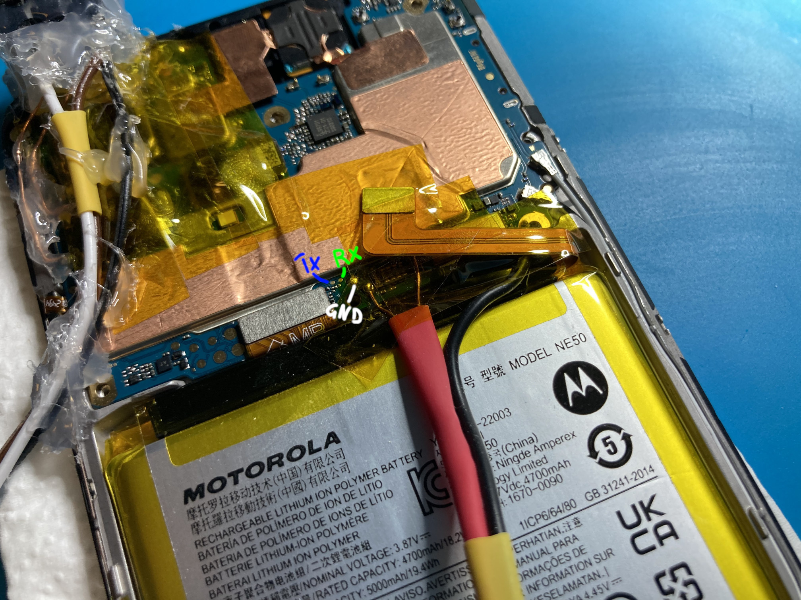

Motorola Moto G72 (motorola-vicky)
| Manufacturer | Motorola |
|---|---|
| Name | Moto G72 |
| Codename | motorola-vicky |
| Released | 2022 |
| Type | handset |
| Hardware | |
| Chipset | MediaTek Helio G99 (MT6789) |
| CPU |
8 core (6x Cortex A55 2x Cortex A76) |
| GPU | Mali-G57 MC2 |
| Display | 1080x2400 120Hz AMOLED |
| Storage | 128/256GB UFS 2.2 |
| Memory | 6/8GB LPDDR4X |
| Architecture | aarch64 |
| Software | |
Original software
The software and version the device was shipped with.
|
Android 12 |
Extended version
The most recent supported version from the manufacturer.
|
Android 13 |
| FOSS bootloader | yes |
| postmarketOS | |
| Category | testing |
Mainline
Instead of a Linux kernel fork, it is possible to run (Close to) Mainline.
|
yes |
Flashing
Whether it is possible to flash the device with
pmbootstrap flasher. |
Works
|
|---|---|
USB Networking
After connecting the device with USB to your PC, you can connect to it via telnet (initramfs) or SSH (booted system).
|
Untested
|
Internal storage
eMMC, SD cards, UFS...
|
Works
|
SD card
Also includes other external storage cards.
|
Untested
|
Battery
Whether charging and battery level reporting work.
|
Untested
|
Screen
Whether the display works; ideally with sleep mode and brightness control.
|
Untested
|
Touchscreen |
Untested
|
| Multimedia | |
3D Acceleration |
Untested
|
Audio
Audio playback, microphone, headset and buttons.
|
Untested
|
Camera |
Untested
|
Camera Flash |
Untested
|
IR TX |
Untested
|
| Connectivity | |
WiFi |
Untested
|
Bluetooth |
Untested
|
GPS |
Untested
|
NFC
Near Field Communication
|
Untested
|
| Modem | |
Calls |
Untested
|
SMS |
Untested
|
Mobile data |
Untested
|
| Miscellaneous | |
FDE
Full disk encryption and unlocking with unl0kr.
|
Untested
|
USB OTG
USB On-The-Go or USB-C Role switching.
|
Untested
|
| Sensors | |
Accelerometer
Handles automatic screen rotation in many interfaces.
|
Untested
|
Magnetometer
Sensor to measure the Earth's magnetism
|
Untested
|
Ambient Light
Measures the light level; used for automatic screen dimming in many interfaces.
|
Untested
|
Proximity |
Untested
|
Haptics |
Untested
|
Primary Bootloader
Whether it is possible to replace stock bootloader with U-Boot.
|
Works
|
|---|---|
Secondary Bootloader
Whether it is possible to chainload U-Boot from stock bootloader.
|
Broken
|
Mainline
Whether latest upstream versions of U-Boot are not broken and it is possible to use them.
|
Broken
|
Internal Storage
Whether it is possible to boot from internal storage (e.g. eMMC or UFS).
|
Works
|
SD card
Whether it is possible to boot from SD card.
|
Broken
|
USB Host
Whether it is possible to boot from a USB storage or connect a keyboard.
|
Broken
|
USB Peripheral
Whether it is possible to use device as a peripheral in U-Boot, e.g. for fastboot mode.
|
Broken
|
Display |
Partial
|
Keyboard |
Broken
|
Buttons
Whether it is possible to navigate in boot menu or grub with volume and power buttons.
|
Broken
|
Maintainers
Users owning this device
- Ellyqw (Notes: XT2255-1, slighly cracked)
Flashing
Not yet :)
Table of hardware
| Component | Model | Status | Notes |
|---|---|---|---|
| SoC | MediaTek Helo G99 (MT6789V) | P | MT6789V and MT8781V are pretty much the same |
| UFS/DRAM | Smasnug KM8V9001JM-B813 | Y | uMCP (UFS + DRAM in a single package), 0x11270000
|
| SD reader | MTK SDHC2 interface | - |
0x11240000, 4-bit
|
| Display | BOE NT37701A-655 | - | 120Hz OLED... *clicks* noice |
| Touchscreen | Goodix GT9916S | - | "Goodix Berlin" in mainline, SPI 0x1100a000 address 0x0
|
| Fingerprint | Goodix GT9886 | - | |
| Flashlight | Awinic AW36518 | - | i2c 0x11017000, address 0x63
|
| Main camera (rear) | Smasnug S5KHM6 (108MP) | - | MIPI CSI2, MCLK3, i2c 0x11eb0000. EEPROM at 0x50, sensor at 0x56, autofocus at 0x0c
|
| Front camera | Hynix HI1634Q (16MP) | - | MIPI CSI0, MCLK0, i2c 0x11eb1000. EEPROM at 0x50, sensor at 0x2d
|
| Wide camera (rear) | Smasnug S5K4H7 (8MP) | - | MIPI CSI0, MCLK1, i2c 0x11eb1000. EEPROM at 0x51, sensor at 0x21
|
| Depth camera (rear) | OmniVision OV02B10 (2MP) | - | MIPI CSI1, MCLK2, i2c 0x11eb2000. EEPROM at 0x51, sensor at 0x3c
|
| MIPI switch | Awinic AW35645FBR | - | GPIO-controlled, switches front and wide cameras connected to CSI0 |
| USB-C MUX | Willsemi WUSB3801 | - | i2c 0x1101a000, address 0x60
|
| USB-C PDC | Weltrend WT6670F | - | i2c 0x1101a000 (or 0x11f00000), address 0x35
|
| Battery charging IC | SG Micro SGM41542 | - | i2c 0x1101a000, address 0x3b
|
| Speaker amps | Awinic AW883XX (x2) | - | i2c 0x11017000, addresses: 0x34, 0x35
|
| NFC | NXP PN557 | - | i2c 0x11015000, address 0x28. Schematic disagrees saying it's SPI, but devicetree doesn't lie
|
| WiFi/BT/FM/GPS | MediaTek MT6631N | - | |
| RF IC(?) | MediaTek MT6186M | - | |
| Main PMIC | MediaTek MT6366 (MT6358?) | - | Logs are confusing, mention both models in multiple places... |
| Camera PMIC | WillSemi WL2868C | - | |
| LCD LDO | SG Micro SGM3838 | - | Driven by GPIO |
| Accel/gyro | TDK ICM-42607-P | - | SCP SPI1 |
UART
LK doesn't seem to allow to enable UART on fused devices, but UART0 is at memory address 0x11002000.
❯ fastboot oem config console (bootloader) <UTAG name="console" protected="false"> (bootloader) <value> (bootloader) </value> (bootloader) <description> (bootloader) Config kernel console log (bootloader) enable|true - enable with default settings (bootloader) disable|false - disable (bootloader) <config string> - enable with customized settings (bootloader) (e.g.: "ttyS0", "ttyS0,921600n1") (bootloader) </description> (bootloader) </UTAG> OKAY [ 0.001s] Finished. Total time: 0.001s ❯ fastboot oem config console enable (bootloader) Not allowed command FAILED (remote: '') fastboot: error: Command failed
Using earlycon=uart8250,mmio32,0x11002000,921600n1 console=ttyS0,921600n1 should give us output from Linux. Testpoints here (be careful, they are extremely tiny!):
{kind=link}

U-Boot
1. Disable LK self-verification in order to replace LK with U-Boot. You can do this by dumping lk_a or lk_b partition from your device and executing:
xxd -p "lk.img" | sed -E "s/05fd600100b4fd7bbfa9/05fd60008052c0035fd6/g" | xxd -p -r > "lk_patched.img"
2. Clone the repository and build:
alias amake="CROSS_COMPILE=aarch64-linux-gnu- ARCH=arm64 make" git clone https://github.com/ellyq/u-boot-mtk-g99.git u-boot-mtk; cd u-boot-mtk; mkdir .output cp configs/mt6789_vicky_defconfig .output/.config amake olddefconfig; amake -j$(nproc)
3. Binary-patch LK partition to replace LK with U-Boot:
pip3 install liblk ./gimme-uboot.py lk_patched.img ./output/u-boot.bin u-boot-lk-vicky.img
(Output should look like this):
Original image has 4 partitions: - lk: 1173664 bytes - bl2_ext: 713000 bytes - aee: 955328 bytes - lk_main_dtb: 185336 bytes U-Boot size: 1095120 bytes Original LK partition has 2 certificates Saving modified image to: uboot-lk-vicky.img
4. Use https://github.com/shomykohai/penumbra to flash it:
❯ doas ./antumbra -d blankflash_vicky_T2SV33.68-21-6/download_agent/DA_BR.bin -p blankflash_vicky_T2SV33.68-21-6/preloader.bin dl --da blankflash_vicky_T2SV33.68-21-6/download_agent/DA_BR.bin lk_a uboot-lk-vicky.img ❯ doas ./antumbra -d blankflash_vicky_T2SV33.68-21-6/download_agent/DA_BR.bin -p blankflash_vicky_T2SV33.68-21-6/preloader.bin dl --da blankflash_vicky_T2SV33.68-21-6/download_agent/DA_BR.bin lk_a uboot-lk-vicky.img ❯ doas ./antumbra -d blankflash_vicky_T2SV33.68-21-6/download_agent/DA_BR.bin -p blankflash_vicky_T2SV33.68-21-6/preloader.bin reboot --da blankflash_vicky_T2SV33.68-21-6/download_agent/DA_BR.bin
Developer notes
| WARNING: Motorola fused-off USB boot on this device. DO NOT USE SP Flash Tool, it will wipe your UFS clean, permanently bricking your device (unless you're willing to remove uMCP from the board and re-flash it externally). |
Trivia:
- SoCs are remarkably similar to MT8183/MT8186 found in Google/Kukui and Google/Corsola Chromebooks (even PMIC is the same).
- On IoT side of things Genio 720 (MT8391) would be most similar and should help us with mainlining as MediaTek is a lot less secretive about those designs.
- Sensors (accel, gyro etc) appear to be connected to SCP (similar to how sensors are connected to ADSP/LPI on Qualcomm SoCs).
- Regulators and clocks seem to be enabled by a preloader, so all we need on U-Boot side is a pinctrl and PMIC buttons... except it's a lie, because as a first-stage bootloader we need to call smcc and reset UFS controller after entering the secure world.
Entering preloader:
- Turn the phone off
- Insert the USB cable while running pneumbra commands (preloader initializes USB first).
Bootloader unlocking:
- Boot into fastboot and run
fastboot oem get_unlock_data. - Go to Motorola's website and follow unlock instructions (obligatory data wipe warning).
HOWTO: Getting root (Android) for dumps:
- You can find package called "
blankflash_vicky_T2SV33.68-21-6" online on... suspicious-sounding websites, this package containspreloaderandBA_BRbinary files, you (likely) need them for mtkclient. - Dump the entire flash with mtkclient:
./mtk.py --loader ../blankflash_vicky_T2SV33.68-21-6/download_agent/DA_BR.bin --preloader ../blankflash_vicky_T2SV33.68-21-6/preloader.bin rf vicky_stock.img. - Mount the dump the same way you would mount pmOS userdata on a Qualcomm device:
losetup --show -Pfv ./vicky_stock.img --sector-size 4096. - Dump
bootandvbmetapartitions:dd if=/dev/loop0p46 of=/tmp/vicky_boot_org.img bs=64M status=progress; dd if=/dev/loop0p13 of=/tmp/vicky_vbmeta_org.img bs=64M status=progress. - Magisk versions after V27 can't patch boot.img correctly, you need that specific version.
-
adb push boot.imgonto the device, patch it with magisk and download it back onto your PC. - Before flashing you need to nuke verification (this will wipe your data, device boots straight into recovery):
fastboot --disable-verity --disable-verification flash vbmeta /tmp/vicky_vbmeta_org.img; fastboot flash boot /tmp/magisk_patched-27000_8IvXo.img;fastboot reboot - At this point making another full backup of your flash is probably a good idea. You can now set-up the phone, adb into it and run su.
Logs
mtkclient
Preloader - CPU: MT6789/MT8781V(MTK Helio G99) Preloader - HW version: 0x0 Preloader - WDT: 0x10007000 Preloader - Uart: 0x11002000 Preloader - Brom payload addr: 0x100a00 Preloader - DA payload addr: 0x201000 Preloader - Var1: 0xa Preloader - Disabling Watchdog... Preloader - HW code: 0x1208 Preloader - Target config: 0x5 Preloader - SBC enabled: True Preloader - SLA enabled: False Preloader - DAA enabled: True Preloader - SWJTAG enabled: True Preloader - EPP_PARAM at 0x600 after EMMC_BOOT/SDMMC_BOOT: False Preloader - Root cert required: False Preloader - Mem read auth: False Preloader - Mem write auth: False Preloader - Cmd 0xC8 blocked: False Preloader - Get Target info Preloader - HW subcode: 0x8a00 Preloader - HW Ver: 0xca00 Preloader - SW Ver: 0x0 Preloader - ME_ID: F4B14EC5C036A2F91B4904BEFFED5FC5 Preloader - SOC_ID: E5DB0C2000AA6C8B8A35C3D18B737448BEC0D6F615EF258D55E2F9A4F3DCD04C Preloader - Jumping to 0x200000 Preloader - Jumping to 0x200000: ok. DA2 32-Bit detected.
Partition layout (UFS)
lrwxrwxrwx 1 root root 16 2026-04-05 01:53 boot_a -> /dev/block/sdc46 lrwxrwxrwx 1 root root 16 2026-04-05 01:53 boot_b -> /dev/block/sdc65 lrwxrwxrwx 1 root root 16 2026-04-05 01:53 boot_para -> /dev/block/sdc20 lrwxrwxrwx 1 root root 22 2026-04-05 01:53 bootloader1 -> /dev/block/by-name/lk1 lrwxrwxrwx 1 root root 22 2026-04-05 01:53 bootloader2 -> /dev/block/by-name/lk2 lrwxrwxrwx 1 root root 16 2026-04-05 01:53 carrier -> /dev/block/sdc12 lrwxrwxrwx 1 root root 15 2026-04-05 01:53 cid -> /dev/block/sdc8 lrwxrwxrwx 1 root root 16 2026-04-05 01:53 connsys_bt_a -> /dev/block/sdc52 lrwxrwxrwx 1 root root 16 2026-04-05 01:53 connsys_bt_b -> /dev/block/sdc67 lrwxrwxrwx 1 root root 16 2026-04-05 01:53 connsys_gnss_a -> /dev/block/sdc54 lrwxrwxrwx 1 root root 16 2026-04-05 01:53 connsys_gnss_b -> /dev/block/sdc69 lrwxrwxrwx 1 root root 16 2026-04-05 01:53 connsys_wifi_a -> /dev/block/sdc53 lrwxrwxrwx 1 root root 16 2026-04-05 01:53 connsys_wifi_b -> /dev/block/sdc68 lrwxrwxrwx 1 root root 16 2026-04-05 01:53 dpm_a -> /dev/block/sdc40 lrwxrwxrwx 1 root root 16 2026-04-05 01:53 dpm_b -> /dev/block/sdc59 lrwxrwxrwx 1 root root 16 2026-04-05 01:53 dram_para -> /dev/block/sdc21 lrwxrwxrwx 1 root root 16 2026-04-05 01:53 dtbo_a -> /dev/block/sdc48 lrwxrwxrwx 1 root root 16 2026-04-05 01:53 dtbo_b -> /dev/block/sdc70 lrwxrwxrwx 1 root root 16 2026-04-05 01:53 efuse -> /dev/block/sdc26 lrwxrwxrwx 1 root root 16 2026-04-05 01:53 efuseBackup -> /dev/block/sdc27 lrwxrwxrwx 1 root root 15 2026-04-05 01:53 expdb -> /dev/block/sdc3 lrwxrwxrwx 1 root root 16 2026-04-05 01:53 flashinfo -> /dev/block/sdc77 lrwxrwxrwx 1 root root 15 2026-04-05 01:53 frp -> /dev/block/sdc4 lrwxrwxrwx 1 root root 16 2026-04-05 01:53 gz_a -> /dev/block/sdc44 lrwxrwxrwx 1 root root 16 2026-04-05 01:53 gz_b -> /dev/block/sdc63 lrwxrwxrwx 1 root root 16 2026-04-05 01:53 hw -> /dev/block/sdc24 lrwxrwxrwx 1 root root 16 2026-04-05 01:53 kpan -> /dev/block/sdc30 lrwxrwxrwx 1 root root 16 2026-04-05 01:53 lk_a -> /dev/block/sdc45 lrwxrwxrwx 1 root root 16 2026-04-05 01:53 lk_b -> /dev/block/sdc64 lrwxrwxrwx 1 root root 16 2026-04-05 01:53 logo_a -> /dev/block/sdc51 lrwxrwxrwx 1 root root 16 2026-04-05 01:53 logo_b -> /dev/block/sdc73 lrwxrwxrwx 1 root root 16 2026-04-05 01:53 logs -> /dev/block/sdc11 lrwxrwxrwx 1 root root 16 2026-04-05 01:53 mcupm_a -> /dev/block/sdc43 lrwxrwxrwx 1 root root 16 2026-04-05 01:53 mcupm_b -> /dev/block/sdc62 lrwxrwxrwx 1 root root 16 2026-04-05 01:53 md1img_a -> /dev/block/sdc37 lrwxrwxrwx 1 root root 16 2026-04-05 01:53 md1img_b -> /dev/block/sdc56 lrwxrwxrwx 1 root root 16 2026-04-05 01:53 metadata -> /dev/block/sdc17 lrwxrwxrwx 1 root root 15 2026-04-05 01:53 misc -> /dev/block/sdc1 lrwxrwxrwx 1 root root 15 2026-04-05 01:53 nvcfg -> /dev/block/sdc6 lrwxrwxrwx 1 root root 15 2026-04-05 01:53 nvdata -> /dev/block/sdc7 lrwxrwxrwx 1 root root 15 2026-04-05 01:53 nvram -> /dev/block/sdc5 lrwxrwxrwx 1 root root 16 2026-04-05 01:53 otp -> /dev/block/sdc35 lrwxrwxrwx 1 root root 16 2026-04-05 01:53 pad0 -> /dev/block/sdc22 lrwxrwxrwx 1 root root 16 2026-04-05 01:53 pad1 -> /dev/block/sdc34 lrwxrwxrwx 1 root root 16 2026-04-05 01:53 pad2 -> /dev/block/sdc36 lrwxrwxrwx 1 root root 16 2026-04-05 01:53 pad3 -> /dev/block/sdc74 lrwxrwxrwx 1 root root 16 2026-04-05 01:53 pad4 -> /dev/block/sdc55 lrwxrwxrwx 1 root root 16 2026-04-05 01:53 pad5 -> /dev/block/sdc28 lrwxrwxrwx 1 root root 15 2026-04-05 01:53 para -> /dev/block/sdc2 lrwxrwxrwx 1 root root 16 2026-04-05 01:53 persist -> /dev/block/sdc23 lrwxrwxrwx 1 root root 16 2026-04-05 01:53 pi_img_a -> /dev/block/sdc39 lrwxrwxrwx 1 root root 16 2026-04-05 01:53 pi_img_b -> /dev/block/sdc58 lrwxrwxrwx 1 root root 23 2026-04-05 01:53 preloader_a -> /dev/block/mmcblk0boot0 lrwxrwxrwx 1 root root 23 2026-04-05 01:53 preloader_b -> /dev/block/mmcblk0boot1 lrwxrwxrwx 1 root root 30 2026-04-05 01:53 preloader_emmc_a -> /dev/block/by-name/preloader_a lrwxrwxrwx 1 root root 30 2026-04-05 01:53 preloader_emmc_b -> /dev/block/by-name/preloader_b lrwxrwxrwx 1 root root 22 2026-04-05 01:53 preloader_raw_a -> /dev/block/mapper/pl_a lrwxrwxrwx 1 root root 22 2026-04-05 01:53 preloader_raw_b -> /dev/block/mapper/pl_b lrwxrwxrwx 1 root root 30 2026-04-05 01:53 preloader_ufs_a -> /dev/block/by-name/preloader_a lrwxrwxrwx 1 root root 30 2026-04-05 01:53 preloader_ufs_b -> /dev/block/by-name/preloader_b lrwxrwxrwx 1 root root 16 2026-04-05 01:53 prodpersist -> /dev/block/sdc29 lrwxrwxrwx 1 root root 16 2026-04-05 01:53 proinfo -> /dev/block/sdc19 lrwxrwxrwx 1 root root 16 2026-04-05 01:53 protect1 -> /dev/block/sdc31 lrwxrwxrwx 1 root root 16 2026-04-05 01:53 protect2 -> /dev/block/sdc32 lrwxrwxrwx 1 root root 16 2026-04-05 01:53 scp_a -> /dev/block/sdc41 lrwxrwxrwx 1 root root 16 2026-04-05 01:53 scp_b -> /dev/block/sdc60 lrwxrwxrwx 1 root root 14 2026-04-05 01:53 sda -> /dev/block/sda lrwxrwxrwx 1 root root 14 2026-04-05 01:53 sdb -> /dev/block/sdb lrwxrwxrwx 1 root root 14 2026-04-05 01:53 sdc -> /dev/block/sdc lrwxrwxrwx 1 root root 16 2026-04-05 01:53 sec1 -> /dev/block/sdc18 lrwxrwxrwx 1 root root 16 2026-04-05 01:53 seccfg -> /dev/block/sdc33 lrwxrwxrwx 1 root root 16 2026-04-05 01:53 sp -> /dev/block/sdc25 lrwxrwxrwx 1 root root 16 2026-04-05 01:53 spmfw_a -> /dev/block/sdc38 lrwxrwxrwx 1 root root 16 2026-04-05 01:53 spmfw_b -> /dev/block/sdc57 lrwxrwxrwx 1 root root 16 2026-04-05 01:53 sspm_a -> /dev/block/sdc42 lrwxrwxrwx 1 root root 16 2026-04-05 01:53 sspm_b -> /dev/block/sdc61 lrwxrwxrwx 1 root root 16 2026-04-05 01:53 super -> /dev/block/sdc75 lrwxrwxrwx 1 root root 16 2026-04-05 01:53 tee_a -> /dev/block/sdc50 lrwxrwxrwx 1 root root 16 2026-04-05 01:53 tee_b -> /dev/block/sdc72 lrwxrwxrwx 1 root root 16 2026-04-05 01:53 tzapp_a -> /dev/block/sdc49 lrwxrwxrwx 1 root root 16 2026-04-05 01:53 tzapp_b -> /dev/block/sdc71 lrwxrwxrwx 1 root root 16 2026-04-05 01:53 userdata -> /dev/block/sdc76 lrwxrwxrwx 1 root root 15 2026-04-05 01:53 utags -> /dev/block/sdc9 lrwxrwxrwx 1 root root 16 2026-04-05 01:53 utagsBackup -> /dev/block/sdc10 lrwxrwxrwx 1 root root 16 2026-04-05 01:53 vbmeta_a -> /dev/block/sdc13 lrwxrwxrwx 1 root root 16 2026-04-05 01:53 vbmeta_b -> /dev/block/sdc15 lrwxrwxrwx 1 root root 16 2026-04-05 01:53 vbmeta_system_a -> /dev/block/sdc14 lrwxrwxrwx 1 root root 16 2026-04-05 01:53 vbmeta_system_b -> /dev/block/sdc16 lrwxrwxrwx 1 root root 16 2026-04-05 01:53 vendor_boot_a -> /dev/block/sdc47 lrwxrwxrwx 1 root root 16 2026-04-05 01:53 vendor_boot_b -> /dev/block/sdc66
Firmware logs (Little Kernel)
F0: 102B 0000
F3: 1001 0000 [0200]
F3: 1001 0000
F7: 0000 0000
V0: 0000 0000 [0001]
00: 0007 8000
01: 0000 0000
BP: 0880 0209 [0000]
G0: 0090 0000
EC: 0000 0000 [2000]
S7: 0700 0061 [0000]
CC: 0000 0000 [0005]
T0: 0000 0062 [000F]
T1: 0000 0000 [0000]
T2: 0000 0098 [0101]
T3: 0005 922C [0505]
Jump to BL
���������������������������������������������������������������������������������������������������{�������������{���������{�������������{����h�T�)|787FE0, INFRACFG_AO_MODULE_CG_0: 0x0, INFRACFG_AO_MODULE_CG_1: 0x4400, INFRACFG_AO_MODULE_CG_2: 0x0, INFRACFG_AO_MODULE_CG_3: 0x1004000, INFRACFG_AO_MODULE_CG_4: 0x41000000, INFRACFG_AO_MODULE_SW_CG_5: 0x0, INFRACFG_AO_PERI_BUS_DCM_CTRL: 0x4787FE0
APMIXED_AP_PLL_5: 0x32BF8
disp mtcmos Start..
disp mtcmos Done!
MMSYS_CONFIG_MMSYS_CG_0: 0xFE848040, MMSYS_CONFIG_MMSYS_CG_2: 0xFFFFFBFE
MDPSYS_CONFIG_MDPSYS_CG_0: 0xFFFF0030, MDPSYS_CONFIG_MDPSYS_CG_2: 0xFFFFFEFE
Pll init Done!!
#T#PLL=11
#T#GPIO=0
[RGU] rst from: DA
[RGU] STA from reg: 0x40000000
[RGU] MODE: 0x25
[RGU] STA: 0x40000000
[RGU] LENGTH: 0xFFE0
[RGU] INTERVAL: 0xFFF
[RGU] SWSYSRST: 0x0
[RGU] LATCH_CTL: 0x21E71
[RGU] LATCH_CTL2: 0x0
[RGU] NONRST_REG: 0x0
[RGU] NONRST_REG2: 0x30002000
[RGU] REQ_MODE: 0x3F00F2
[RGU] REQ_IRQ_EN: 0x3B00F0
[RGU] DEBUG_CTL: 0x0
[RGU] parse g_rgu_status: 2 (0x2)
[RGU] Set NONRST_REG to 0x40000000
[RGU] mtk_wdt_mode_config mode value=34, tmp:22000034
[DOE_ENV]get_env apwdt_en
[RGU] mtk_wdt_mode_config mode value=7D, tmp:2200007D
[RGU] mtk_wdt_reset_deglitch_enable: MTK_WDT_RSTDEG_EN1(8000A357), MTK_WDT_RSTDEG_EN2(800067D2)
[RGU] rgu_update_reg: 0, bits: 0xC000, addr: 0x10007040, val: 0x0
[RGU] rgu_update_reg: 0, bits: 0x300, addr: 0x100070A0, val: 0x0
[RGU] mtk_wdt_pre_init: MTK_WDT_DEBUG_CTL(0x0)
[RGU] mtk_wdt_pre_init: MTK_WDT_DEBUG_CTL2(0x0)
[RGU] mtk_wdt_pre_init: MTK_WDT_LATCH_CTL(0x21E71)
[RGU] mtk_wdt_pre_init: MTK_WDT_REQ_MODE(3F00F2), MTK_WDT_REQ_IRQ_EN(3B00F0)
#T#WDT_PRE=11
RAM_CONSOLE wdt status 0x2
#T#Ram console=1
abist meter[37] = 239684 Khz
abist meter[37] = 307832 Khz
abist meter[37] = 269444 Khz
abist meter[37] = 253396 Khz
abist meter[37] = 261216 Khz
abist meter[37] = 257356 Khz
abist meter[37] = 260100 Khz
abist meter[37] = 260200 Khz
abist meter[37] = 261116 Khz
abist meter[37] = 260100 Khz
[PMIF] ULPOSC1 K done: 260M, PLL_ULPOSC1_CON0/1/2 0x3CA94A 0x2900 0x41
[pmifclkmgr_set_spmi_clk] done
[pmifclkmgr_set_spi_clk] done
#T#PMIFCLKMGR=5
[PWRAP] pwrap_init_preloader
[PWRAP] is_pwrap_init_done 0
[PWRAP] pwrap_init start!!!!!!!!!!!!!
[PWRAP] Reset SPISLV ok
[PWRAP] Set Read Dummy Cycle ok
[PWRAP] _pwrap_init_dio ok
[PWRAP] _pwrap_init_reg_clock ok
[PWRAP] __pwrap_InitSPISLV ok
[PWRAP] si_sample_ctrl = 0, rdata = D6A9
[PWRAP] First Valid Sampling Clock Found!!!
[PWRAP] si_sampling_ck_dly = 0, si_sampling_ck_pol = 1
[PWRAP] si_sample_ctrl = 20, rdata = 5AA5
[PWRAP] si_dly = 0, *RG_SPI_CON2 = 0, rdata = 1B27
[PWRAP] si_dly = 1, *RG_SPI_CON2 = 1, rdata = 1B27
[PWRAP] si_dly = 2, *RG_SPI_CON2 = 2, rdata = 1B27
[PWRAP] si_dly = 3, *RG_SPI_CON2 = 3, rdata = 1B27
[PWRAP] si_dly = 4, *RG_SPI_CON2 = 4, rdata = 1B27
[PWRAP] si_dly = 5, *RG_SPI_CON2 = 5, rdata = 1B27
[PWRAP] si_dly = 6, *RG_SPI_CON2 = 6, rdata = 1B27
[PWRAP] Data Boundary is Found !!!
[PWRAP] si_dly = 7, rdata = 804
[PWRAP] si_sample_ctrl=0x20(before)
[PWRAP] si_sample_ctrl=0x40(after)(non-FPGA)
[PWRAP] SI Strobe Calibration For PMIC 0 Done
[PWRAP] si_sample_ctrl = 40, si_dly = 7
[PWRAP] _pwrap_init_sistrobe Read Test ok
[PWRAP] _pwrap_init_sistrobe ok
[PWRAP] _pwrap_lock_SPISLVReg ok
[PWRAP] _pwrap_wacs2_write_test ok
[PWRAP] Enable CRC ok
[PWRAP] _pwrap_InitStaUpd ok
[PWRAP] PMIF_SPI_PMIF_MPU_CTRL = 0x34
[PWRAP] PMIF_SPI_PMIF_PMIC_RGN_0_START = 0x600
[PWRAP] PMIF_SPI_PMIF_PMIC_RGN_0_END = 0x67E
[PWRAP] PMIF_SPI_PMIF_PMIC_RGN_0_PER = 0xFF3FFFFB
[PWRAP] PMIF_SPI_PMIF_PMIC_RGN_1_START = 0x800
[PWRAP] PMIF_SPI_PMIF_PMIC_RGN_1_END = 0x13FE
[PWRAP] PMIF_SPI_PMIF_PMIC_RGN_1_PER = 0xFFFCFFF8
[PWRAP] PMIF_SPI_PMIF_PMIC_RGN_2_START = 0x1400
[PWRAP] PMIF_SPI_PMIF_PMIC_RGN_2_END = 0x207E
[PWRAP] PMIF_SPI_PMIF_PMIC_RGN_2_PER = 0xFFFCFFF0
[PWRAP] PMIF_SPI_PMIF_PMIC_RGN_3_START = 0x2080
[PWRAP] PMIF_SPI_PMIF_PMIC_RGN_3_END = 0x26FE
[PWRAP] PMIF_SPI_PMIF_PMIC_RGN_3_PER = 0xFFFCFF38
[PWRAP] _pwrap_config_mpu ok
[PWRAP] start pwrap_read_test
[PWRAP] rdata=0x5AA5
[PWRAP] Read Test pass, return_value = 0x0
[PWRAP] start pwrap_write_test
[PWRAP] after pwrap_write_test
[PWRAP] rdata=0xA55A (read back)
[PWRAP] Write Test pass
[PWRAP] channel pass
[PWRAP] REC_CMD0:0xA3A (The last one adr)
[PWRAP] REC_WDATA0:0x0 (The last one wdata)
[PWRAP] REC_CMD1:0xA3A (The second-last adr)
[PWRAP] REC_WDATA1:0x1 (The second-last wdata)
[PWRAP] REC_CMD2:0x1332 (The third-last adrs)
[PWRAP] REC_WDATA2:0xFF (The third-last wdata)
[PWRAP] enable spi debug ok
[PWRAP] clear record command ok
[PWRAP] PMIC_WRAP_MONITOR_MODE = Logging Mode
[PWRAP] PMIF_SPI_PMIF_MONITOR_CTRL = 0x5
[PWRAP] PMIF_SPI_PMIF_MONITOR_TARGET_CHAN_0 = 0x1FBFFF
[PWRAP] PMIF_SPI_PMIF_MONITOR_TARGET_ADDR_0 = 0x0
[PWRAP] PMIF_SPI_PMIF_MONITOR_TARGET_WDATA_0 = 0x0
[PWRAP] init pass, ret=0.
#T#PWRAP=30
[TIA] trigger addr setup ok
[TIA] trigger value setup ok
[TIA] read back addr setup ok
[TIA] delay setup ok
[TIA] lock TIA_AUXADC register ok
[TIA] TIA init done
#T#TIA=2
pmif_spmi_set_lp_mode bringup sleep legacy mode
#T#SPMI_NO_SRCLKEN_RC=1
Current RTC time:[2010/1/1 0:2:6]
#T#I2C=0
0:0x4000, 1:0x0, 2:0x0, 3:0x102, 4:0x1, STA:0x0, S:0x1, FAB0:0x0, FAB11:0x0
s4: 0x1
[PL] spare4 = 0x1
[PL] segment = 0x1
DATE_CODE_YY:0, DATE_CODE_WW:0
[SegCode] Segment Code:0x1, PROJECT_CODE:0x0, FAB_CODE:0x0, RW_STA:0x0, CTL:0x0, DCM:0x7
#T#DEVINFO=2
[PMIC]Preloader Start
[PMIC] CHIP Code = 0x6610
[PMIC]POWER_HOLD :0x1
[PMIC]TOP_RST_STATUS[0x152]=0x48
[PMIC]PONSTS[0xC]=0x0
[PMIC]POFFSTS[0xE]=0x400
[PMIC]PG_SDN_STS0[0x16]=0xFFFF
[PMIC]PG_SDN_STS1[0x18]=0xFF00
[PMIC]OC_SDN_STS0[0x1A]=0x0
[PMIC]BUCK_OC_SDN_STATUS[0x1332]=0x0
[PMIC]BUCK_OC_SDN_EN[0x1346]=0x1FF
[PMIC]THERMALSTATUS[0x1C]=0x0
[PMIC]STRUP_CON4[0xA1C]=0x0
[PMIC]TOP_RST_MISC[0x14C]=0x1204
[PMIC]TOP_CLK_TRIM[0x388]=0x6AC0
latch VSRAM_PROC11 1050000 uV(0x74)
latch VSRAM_PROC12 850000 uV(0x24)
latch VPROC11 1000000 uV(0x78)
latch VPROC12 750000 uV(0x3C)
latch VSRAM_CORE 825000 uV(0x2E)
latch VCORE 725000 uV(0x36)
latch VSRAM_OTHERS 750000 uV(0x3C)
latch VMODEM 825000 uV(0x2E)
latch VSRAM_GPU 850000 uV(0x24)
latch VGPU 850000 uV(0x24)
[pmic_check_rst] AP Watchdog
[PMIC]just_rst = 0
[pwrkey_dbg_status] powerkey:0 count=0(ms) g_pwrkey_release=0
[pmic_wdt_set] TOP_RST_MISC=0x1225
mtk_subpmic_init
[I2C] 339: id=5,addr: 34, transfer error
[I2C] 345: I2C_ACKERR
[I2C] 221: I2C structure:
[I2C] Clk=24960,Id=5,Mode=2,St_rs=0,Dma_en=0,Op=3,Poll_en=1,Irq_stat=3
[I2C] Trans_len=1,Trans_num=2,Trans_auxlen=1,Data_size=FFFF,speed=400
[I2C] 224: base address 0x11017000
[I2C] 245: I2C register:
[I2C] SLAVE_ADDR=68,INTR_MASK=3F8,INTR_STAT=3,CONTROL=32,TRANSFER_LEN=1
[I2C] TRANSAC_LEN=2,DELAY_LEN=0,HTIMING=405,LTIMING=23,START=0,FIFO_STAT=420
[I2C] IO_CONFIG=0,HS=8000,DCM_EN=F,DEBUGSTAT=6800,EXT_CONF=1801,TRANSFER_LEN_AUX=1
[I2C] 863: write_read 0x10001 bytes fails,ret=-121.
mt6375_read_byte I2CR[0x00000100] failed, ret=-1
mtk_subpmic_init failed to check devid
[PMIC]Init done
#T#PMIC=17
Enter mtk_kpd_gpio_set!
mtk detect key function pmic_detect_homekey MTK_PMIC_RST_KEY = 17
Log Turned Off.
#T#UART DYNAMIC SWITCH=1
PL_LOG_STORE, last PMIC boot up phase is 0x11:0x12121210.
PL_LOG_STORE, last boot up phase is 1, return 0.
#T#LOGSTORE_BOOT=1
vproc/vsram run as hw default
[RGU] mtk_wdt_mode_config mode value=34, tmp:22000034
[RGU] mtk_wdt_mode_config mode value=7D, tmp:2200007D
[RGU] g_rgu_status: 2 (0x2)
[DOE_ENV]get_env apwdt_en
[RGU] bypass pwrkey: set
#T#WDT_INIT=2
RAM_CONSOLE wdt status 0x2
#T#Ram console=0
[UFS] ufs_aio_check_lu_cfg: original Configuration Desc:
[UFS] warn: Power on, reset, or bus device reset occupied
[UFS] Sense Data: ASC=29, ASCQ=0
[UFS] Sense Data(all):
[UFS] warn: Power on, reset, or bus device reset occupied
[UFS] Sense Data: ASC=29, ASCQ=0
[UFS] Sense Data(all):
[UFS] warn: Power on, reset, or bus device reset occupied
[UFS] Sense Data: ASC=29, ASCQ=0
[UFS] Sense Data(all):
[UFS] warn: Power on, reset, or bus device reset occupied
[UFS] Sense Data: ASC=29, ASCQ=0
[UFS] Sense Data(all):
[UFS] info: RX HS-G3, setting is 3
[UFS] info: TX HS-G3, setting is 3
[ufshcd_swp_conf_block_write_prepare]: Write swpcb
swpcb lun 0
swpcb data_length 16
swpcb entry[0] wpt_wpf 0x0
swpcb entry[0] upper_addr 0x0
swpcb entry[0] lower_addr 0x0
swpcb entry[0] block_num 0x0
Retrive sec lib to derive RPMB key success
[ufshcd_swp_conf_block_write_prepare]: Write swpcb
swpcb lun 1
swpcb data_length 16
swpcb entry[0] wpt_wpf 0x0
swpcb entry[0] upper_addr 0x0
swpcb entry[0] lower_addr 0x0
swpcb entry[0] block_num 0x0
[ufshcd_swp_conf_block_write_prepare]: Write swpcb
swpcb lun 2
swpcb data_length 16
swpcb entry[0] wpt_wpf 0x0
swpcb entry[0] upper_addr 0x0
swpcb entry[0] lower_addr 0x0
swpcb entry[0] block_num 0x0
#T#Boot dev init=195
[PLFM] Init Boot Device: OK(0)
PL_LOG_STORE:expdb partition start addr 0x0000000000108000, end addr 0x0000000008108000, partition size 0x0000000008000000, nr_sects 0x8000, blksz 0x1000!
PL_LOG_STORE early_save_pllog, flag 0x827, reboot count 0x8.
#T#early_save_pllog=13
metadata.slot_info[0].priority = 6, 7
metadata.slot_info[0].retry = 0, 1
[proinfo] no FASTBOOT flag setup!
[AB] current suffix '_b' retry count 1, boot slot b
[AB] MOTO_SWITCH_ENHANCEMENT_SUPPORT debug
[AB] Current boot: Preloader_b
[AB] ab_suffix: _b, ab_retry: 1
[AB] boot_success is 1!
#T#ab_ota_boot_check @EARLY_PARTITION_ACCESS=57
#T#Long Pressed Reboot=0
[PLFM] Init PMIC: OK(0)
[PLFM] chip_ver[0]
Unmask all EINT event mask
#T#bus_parity_init=0
[BLDR] Build Time: 20230928-073053
[ROM_INFO] 'v131074'
[SEC] Loading SEC config
[SEC] Name =
[SEC] Config = 0x22, 0x22
0x31,0x41,0x35,0x32
[SEC] read '0x20800000'
0x4D,0x4D,0x4D,0x4D,0x4,0x0,0x0,0x0,
[SEC] seclib_img_auth_load_sig [SEC] CFG read size '0x1000' '0x3C'
0x4D4D4D4D
[SEC] SEC CFG 'v4' exists
[SEC] HW DEC
[SEC] SEC CFG is valid. Lock state is 1
#T#Sec lib init=15
[DOE_ENV] No doconfig setting
[DOE_ENV]read_env_area fail, ret = -1
#T#dconfig init=23
[DOE_ENV]get_env apwdt_en
[DOE_ENV]get_env rstmode
#T#wdt dconfig init=0
[DOE_ENV]get_env aee_enable
aee enable 1
#T#lastpc=1
Starting clkbuf preloader init~
clk_buf_dump_dct_log: PMIC_CLK_BUF 0 / 1 / 2 / 3 / 5 / 6 /
DCT XO_MODE = 1 3 0 3 0 0
DCT XO_EN = 1 0 0 1 0 1
DRV_STRENGTH = 2 2 2 2 2 2
DRV_CURR = 1 1 1 1 2 1
clk_buf_dump_clkbuf_log DCXO_CW00/02/11/13/14/15/16/top_spi_con1=0x4E1D 3AEE A800 9829 82B5 A19A 9855 1
clk_buf_init_pmic_wrap: DCXO interface EN status: 33
clk_buf_init_pmic_wrap: DCXO interface ARB status: 19FF7F
clk_buf_init_pmic_wrap: DCXO_CONN_ADDR/WDATA/=0x44E044E/10000
clk_buf_init_pmic_wrap: DCXO_NFC_ADDR/WDATA=0x78A078C/1000100
Done clkbuf preloader init~
clk_buf_dump_clkbuf_log DCXO_CW00/02/11/13/14/15/16/top_spi_con1=0x4E1D 3AEE A000 9829 82B5 A19A 9855 0
#T#clk_buf_init=7
[RTC]get_frequency_meter: input=0x0, ouput=5
[RTC]get_frequency_meter: input=0x0, ouput=5
[RTC]get_frequency_meter: input=0x0, ouput=3411
[RTC]rtc_init#1 powerkey1 = 0x0, powerkey2 = 0x0, with LPD
[RTC]bbpu = 0x1, con = 0x8486, osc32con = 0xDE74, sec = 0x229A, yea = 0xC102
[RTC]rtc_first_boot_init
[RTC]XO_XMODE_M = 1 , XO_EN32K_M = 1
[RTC]rtc_lpd_init RTC_CON=0x486
[RTC]get_frequency_meter: input=0x0, ouput=5
[RTC]get_frequency_meter: input=0x0, ouput=5
[RTC]get_frequency_meter: input=0x0, ouput=2499
[RTC]eosc_cali: RG_FQMTR_CKSEL=0x42
[RTC]get_frequency_meter: input=0xF, ouput=691
[RTC]eosc_cali: val=0x2B3
[RTC]get_frequency_meter: input=0x17, ouput=869
[RTC]eosc_cali: val=0x365
[RTC]get_frequency_meter: input=0x13, ouput=780
[RTC]eosc_cali: val=0x30C
[RTC]get_frequency_meter: input=0x15, ouput=825
[RTC]eosc_cali: val=0x339
[RTC]get_frequency_meter: input=0x14, ouput=802
[RTC]eosc_cali: val=0x322
[RTC]get_frequency_meter: input=0x13, ouput=779
[RTC]get_frequency_meter: input=0x14, ouput=802
[RTC]EOSC cali val = 0x14
[RTC]EOSC cali val = 0xDE54
[RTC]rtc_lpd_init RTC_CON=0x486
[RTC]rtc_2sec_stat_clear
[RTC]secure_rtc_init
[RTC]secure_rtc_set_ck
[RTC]RTC_SEC_DSN_ID[0x600]=0x3200, RTC_SEC_DSN_REV0[0x602]=0x1000
[RTC]SCK_TOP_CKPDN_CON0[0x51A]=0x42, RTC_SEC_CK_PDN[0x616]=0x1
[RTC]XO_XMODE_M = 1 , XO_EN32K_M = 1
[RTC]32k-less mode
[RTC]rtc_2sec_reboot_check 0x629A, without 2sec reboot, type 0x1
[RTC]rtc 2sec reboot is not enabled
[RTC]rtc_lpd_init RTC_CON=0x486
[RTC]secure_rtc_set_ck
#T#rtc=224
pmic_efuse_sw_load get GAIN=0x1C, OFFSET=0x26.
pmic_efuse_sw_load set GAIN=0xFD7(0xFFD7), OFFSET=0x26(0x26)
pmic_efuse_sw_load VAUX18 efuse=54.
[PMIC] pmic_init_setting end. v220415
[DOE_ENV]get_env vproc1
vproc1 0
[DOE_ENV]get_env vproc2
vproc2 0
[DOE_ENV]get_env vproc1_rrate
vproc1_rrate 0
[DOE_ENV]get_env vproc1_frate
vproc1_frate 0
[DOE_ENV]get_env vproc2_rrate
vproc2_rrate 0
[DOE_ENV]get_env vproc2_frate
vproc2_frate 0
[MT6358] 1 0,52
[MT6358] 1 9,52
[MT6358] get volt 1, 40, 0, 750000
vsram_others = 750000 uV
[MT6358] get volt 5, 40, 0, 750000
vcore = 750000 uV
[MT6358] get volt 3, 56, 0, 850000
vsram_proc11 = 850000 uV
[MT6358] get volt 2, 56, 0, 850000
vsram_proc12 = 850000 uV
[MT6358] get volt 7, 40, 0, 750000
vproc11 = 750000 uV
[MT6358] get volt 6, 40, 0, 750000
vproc12 = 750000 uV
[MT6358] get volt 4, 56, 0, 850000
vsram_gpu = 850000 uV
[MT6358] get volt 8, 56, 0, 850000
vgpu = 850000 uV
[MT6358] get volt 0, 52, 0, 825000
vsram_core(md_sram) = 825000 uV
[MT6358] get volt 9, 52, 0, 825000
vmodem = 825000 uV
#T#pmic_init_setting=16
[DOE_ENV]get_env dvfs_v_mode
[DOE_ENV]get_env vcore_vb
VCORE VB_INFO = 0x16D0258
dvfsrc_opp_level_mapping: VMODE=0, RSV4=0
dvfsrc_opp_level_mapping: FINAL v_opp_uv: 725000, 650000, 600000, 550000
#T#dvfsrc_opp_level_mapping=2
[DDR Reserve] MTK_DRM_BASE(0x1000D000) : 0x0
[DDR Reserve] MTK_DRM_DEBUG_CTL(0x1000D030) : 0x83F1
[DDR Reserve] ddr reserve mode not be enabled yet
#T#chk DDR Reserve status=2
mtk_kpd_gpio_set Already!
after set KP enable: KP_SEL = 0x1C70 !
[RTC]irqsta = 0x0, pdn1 = 0x0, pdn2 = 0x201, spar0 = 0x80, spar1 = 0x800
[RTC]new_spare0 = 0x4000, new_spare1 = 0x5001, new_spare2 = 0x1, new_spare3 = 0x1
[RTC]bbpu = 0x1, con = 0x486, cali = 0x229A, osc32con = 0xDE74
#T#check Boot status-RTC=4
#T#check Boot status-PMIC=0
[PLFM] WDT reboot bypass power key!
#T#check Boot status=1
[PMIC]POWER_HOLD :0x1
[RTC]rtc_bbpu_power_on done
#T#rtc_bbpu_power_on=1
Detect GPIO111 Low: Phone
Detect GPIO111 Low: Phone
bat is exist.
[pl_battery_init] fg:1 is_fg_init:0 , force_init:0 bat:1
Detect GPIO111 Low: Phone
Detect GPIO111 Low: Phone
Detect GPIO111 Low: Phone
Detect GPIO111 Low: Phone
Detect GPIO111 Low: Phone
Detect GPIO111 Low: Phone
[fg_get_time] low:0x18 high:0x0 rtime:0xx 0xC p1=12 p2=0!
BATTERY PRELOADER:ret=0, bef FGADC_CON1=0x0 ,af:0x1F00
BATTERY PRELOADER:ret=0, af FGADC_CON1:0x0
[pmic_get_auxadc_value] channel = 0, reg_val = 0x6802, adc_result = 4387
[fg_init] fg_reset_status 0 do_init_fgadc_reset 1 fg_curr_time 12 fg_soff_valid:0 shutdown_pmic_time 12 hw_id 0x6610 sw_id 0x6610, 4387 0 0x1 0x2329 1 0 efuse_cal 1018
Detect GPIO111 Low: Phone
bat is exist.
Detect GPIO111 Low: Phone
[pmic_get_auxadc_value] channel = 0, reg_val = 0x67FE, adc_result = 4387
[pmic_get_auxadc_value] channel = 2, reg_val = 0x490, adc_result = 513
[pl_check_bat_protect_status]: check VBAT=4387 mV with 0 mV, VCHR 4853 mV ,VCHR_HV=6500 start charging...
[pl_check_bat_protect_status]: check VBAT=4387 mV with 0 mV, stop charging...
#T#battery_init=16
motorola product ID = A, hardware ID = N
#T#Moto HWID init=50
#T#Enable PMIC Kpd clk=0
[pmic_get_auxadc_value] channel = 0, reg_val = 0x67FF, adc_result = 4387
[DOE_ENV]get_env dvfs-config
[DOE_ENV]get_env vproc12
[DOE_ENV]get_env vsram_proc12
[MT6358] 1 2,88
[MT6358] 1 6,80
[MT6358] get volt 6, 80, 0, 1000000
[MT6358] get volt 2, 88, 0, 1050000
[perf] vproc12 = 1000000 uV,vsram_proc12 = 1050000 uV
switch to 26M
ARMPLL_LL switch to rate: 1800000, pcw: 0x80114EC4
switch to ARMPLL_LL
ARMPLL_LL CON1: 0x114EC4
switch to 26M
CCIPLL switch to rate: 1340000, pcw: 0x8119C4EC
switch to CCIPLL
CCIPLL CON1: 0x119C4EC
#T#DCACHE ON=15
[dramc] init partition address is 0x0000000018128000
[dramc] LAST_DRAM_FATAL_ERR_FLAG = 0x0
[dramc] latch check in channel 0 (0x0)
[dramc] latch check in channel 1 (0x0)
[dramc] latch check in channel 2 (0x0)
[dramc] latch check in channel 3 (0x0)
[DOE_ENV]get_env vcore
DOE force setting vcore=0
[DOE_ENV]get_env vdram
DOE force setting vdram=0
[DOE_ENV]get_env vddq
DOE force setting vddq=0
[DOE_ENV]get_env vmddr
DOE force setting vmddr=0
[DOE_ENV]get_env vio18
DOE force setting vio18=0
DOE setting: vcore 0, vdram 0, vddq 0, vmddr 0, vio18 0
[MT6358] 4 5,1
[MT6358] 4 10,1
[MT6358] cnvdata 1800000, n_size 16
[MT6358] 1 14,12
[MT6358] 1 5,36
[MT6358] 1 10,50
[MT6358] cnvdata 600000, n_size 2
[MT6358] 1 11,0
[MT6358] cnvdata 750000, n_size 10
[MT6358] 1 15,1
[DOE_ENV]get_env dram_all_3094_0825
DOE force setting dram_all_3094_0825=0
[DOE_ENV]get_env dram_all_3094_0725
DOE force setting dram_all_3094_0725=0
[DOE_ENV]get_env dram_all_1534_0725
DOE force setting dram_all_1534_0725=0
[DOE_ENV]get_env dram_opp0_3733_others_3094_0825
DOE force setting dram_opp0_3733_others_3094_0825=0
[DOE_ENV]get_env dram_opp0_3094_others_1534_0725
DOE force setting dram_opp0_3094_others_1534_0725=0
[DOE_ENV]get_env dram_opp0_2400_others_1534_0725
DOE force setting dram_opp0_2400_others_1534_0725=0
[DOE_ENV]get_env dram_all_3094_0825
DOE force setting dram_all_3094_0825=0
[DOE_ENV]get_env dram_all_3094_0725
DOE force setting dram_all_3094_0725=0
[DOE_ENV]get_env dram_all_1534_0725
DOE force setting dram_all_1534_0725=0
[DOE_ENV]get_env dram_opp0_3733_others_3094_0825
DOE force setting dram_opp0_3733_others_3094_0825=0
[DOE_ENV]get_env dram_opp0_3094_others_1534_0725
DOE force setting dram_opp0_3094_others_1534_0725=0
[DOE_ENV]get_env dram_opp0_2400_others_1534_0725
DOE force setting dram_opp0_2400_others_1534_0725=0
[dram_monitor] dram_type 0x6, mr5 0x1, rank0_size 0x0000000100000000, rank1_size 0x0000000100000000
4B4D3856393030314A4D2D42383133
ufs id:KM8V9001JM-B813, len:15
[EMI] CEN_CONA(0x3530154),CEN_CONF(0x421000),CEN_CONH(0x88880033),CEN_CONK(0x0),CHN_CONA(0x488005D)
[MT6358] 1 5,22
Read voltage for 800, 4
[MT6358] cnvdata 12, n_size 16
[MT6358] get volt 14, 12, 0, 1800000
Vio18 = 1800000
[MT6358] get volt 5, 22, 0, 637500
Vcore = 637500
[MT6358] get volt 10, 50, 0, 1125000
Vdram = 1125000
[MT6358] cnvdata 0, n_size 2
[MT6358] get volt 11, 0, 0, 600000
[MT6358] votrim_size 16, cnvdata 0
[MT6358] 7 11,0,0
Vddq = 600000
[MT6358] cnvdata 1, n_size 10
[MT6358] get volt 15, 1, 5, 750000
Vmddr = 750000
[DOE_ENV]get_env fullk
DOE force setting fullk=0
[DOE_ENV]get_env emi_isu
[EMI DOE] emi_isu 0
[DOE_ENV]get_env emi_mpu_slverr
[DOE_ENV]get_env emi_dcm
[EMI DOE] emi_dcm 0
[WARNING] Smaller TX win !!
[WARNING] Smaller TX win !!
[WARNING] Smaller TX win !!
[WARNING] Smaller TX win !!
[MT6358] 1 5,26
Read voltage for 1200, 2
[MT6358] cnvdata 12, n_size 16
[MT6358] get volt 14, 12, 0, 1800000
Vio18 = 1800000
[MT6358] get volt 5, 26, 0, 662500
Vcore = 662500
[MT6358] get volt 10, 50, 0, 1125000
Vdram = 1125000
[MT6358] cnvdata 0, n_size 2
[MT6358] get volt 11, 0, 0, 600000
[MT6358] votrim_size 16, cnvdata 0
[MT6358] 7 11,0,0
Vddq = 600000
[MT6358] cnvdata 1, n_size 10
[MT6358] get volt 15, 1, 5, 750000
Vmddr = 750000
[DOE_ENV]get_env fullk
DOE force setting fullk=0
[WARNING] Smaller TX win !!
[WARNING] Smaller TX win !!
[WARNING] Smaller TX win !!
[WARNING] Smaller TX win !!
[MT6358] 1 5,22
Read voltage for 600, 5
[MT6358] cnvdata 12, n_size 16
[MT6358] get volt 14, 12, 0, 1800000
Vio18 = 1800000
[MT6358] get volt 5, 22, 0, 637500
Vcore = 637500
[MT6358] get volt 10, 50, 0, 1125000
Vdram = 1125000
[MT6358] cnvdata 0, n_size 2
[MT6358] get volt 11, 0, 0, 600000
[MT6358] votrim_size 16, cnvdata 0
[MT6358] 7 11,0,0
Vddq = 600000
[MT6358] cnvdata 1, n_size 10
[MT6358] get volt 15, 1, 5, 750000
Vmddr = 750000
[DOE_ENV]get_env fullk
DOE force setting fullk=0
[WARNING] Smaller TX win !!
[WARNING] Smaller TX win !!
[WARNING] Smaller TX win !!
[WARNING] Smaller TX win !!
[MT6358] 1 5,26
Read voltage for 933, 3
[MT6358] cnvdata 12, n_size 16
[MT6358] get volt 14, 12, 0, 1800000
Vio18 = 1800000
[MT6358] get volt 5, 26, 0, 662500
Vcore = 662500
[MT6358] get volt 10, 50, 0, 1125000
Vdram = 1125000
[MT6358] cnvdata 0, n_size 2
[MT6358] get volt 11, 0, 0, 600000
[MT6358] votrim_size 16, cnvdata 0
[MT6358] 7 11,0,0
Vddq = 600000
[MT6358] cnvdata 1, n_size 10
[MT6358] get volt 15, 1, 5, 750000
Vmddr = 750000
[DOE_ENV]get_env fullk
DOE force setting fullk=0
[WARNING] Smaller TX win !!
[WARNING] Smaller TX win !!
[WARNING] Smaller TX win !!
[WARNING] Smaller TX win !!
[MT6358] 1 5,22
Read voltage for 400, 6
[MT6358] cnvdata 12, n_size 16
[MT6358] get volt 14, 12, 0, 1800000
Vio18 = 1800000
[MT6358] get volt 5, 22, 0, 637500
Vcore = 637500
[MT6358] get volt 10, 50, 0, 1125000
Vdram = 1125000
[MT6358] cnvdata 0, n_size 2
[MT6358] get volt 11, 0, 0, 600000
[MT6358] votrim_size 16, cnvdata 0
[MT6358] 7 11,0,0
Vddq = 600000
[MT6358] cnvdata 1, n_size 10
[MT6358] get volt 15, 1, 5, 750000
Vmddr = 750000
[DOE_ENV]get_env fullk
DOE force setting fullk=0
[WARNING] Smaller TX win !!
[WARNING] Smaller TX win !!
[WARNING] Smaller TX win !!
[WARNING] Smaller TX win !!
[MT6358] 1 5,36
Read voltage for 2133, 0
[MT6358] cnvdata 12, n_size 16
[MT6358] get volt 14, 12, 0, 1800000
Vio18 = 1800000
[MT6358] get volt 5, 36, 0, 725000
Vcore = 725000
[MT6358] get volt 10, 50, 0, 1125000
Vdram = 1125000
[MT6358] cnvdata 0, n_size 2
[MT6358] get volt 11, 0, 0, 600000
[MT6358] votrim_size 16, cnvdata 0
[MT6358] 7 11,0,0
Vddq = 600000
[MT6358] cnvdata 1, n_size 10
[MT6358] get volt 15, 1, 5, 750000
Vmddr = 750000
[DOE_ENV]get_env fullk
DOE force setting fullk=0
[MT6358] 1 5,30
Read voltage for 1600, 1
[MT6358] cnvdata 12, n_size 16
[MT6358] get volt 14, 12, 0, 1800000
Vio18 = 1800000
[MT6358] get volt 5, 30, 0, 687500
Vcore = 687500
[MT6358] get volt 10, 50, 0, 1125000
Vdram = 1125000
[MT6358] cnvdata 0, n_size 2
[MT6358] get volt 11, 0, 0, 600000
[MT6358] votrim_size 16, cnvdata 0
[MT6358] 7 11,0,0
Vddq = 600000
[MT6358] cnvdata 1, n_size 10
[MT6358] get volt 15, 1, 5, 750000
Vmddr = 750000
[DOE_ENV]get_env fullk
DOE force setting fullk=0
PPR Not assign channel/rank/bank!!
DRAM rank0 size:0x0000000100000000,
DRAM rank1 size=0x0000000100000000
[EMI] ch0, rk0, dram addr: 100000
[EMI] bk0, row40, col0
HW channel(0) Rank(0), TA2 pass, pass_cnt:1, err_cnt:0
HW channel(0) Rank(1), TA2 pass, pass_cnt:2, err_cnt:0
HW channel(1) Rank(0), TA2 pass, pass_cnt:3, err_cnt:0
HW channel(1) Rank(1), TA2 pass, pass_cnt:4, err_cnt:0
[MT6358] 1 5,36
Read voltage for 2133, 0
[MT6358] cnvdata 12, n_size 16
[MT6358] get volt 14, 12, 0, 1800000
Vio18 = 1800000
[MT6358] get volt 5, 36, 0, 725000
Vcore = 725000
[MT6358] get volt 10, 50, 0, 1125000
Vdram = 1125000
[MT6358] cnvdata 0, n_size 2
[MT6358] get volt 11, 0, 0, 600000
[MT6358] votrim_size 16, cnvdata 0
[MT6358] 7 11,0,0
Vddq = 600000
[MT6358] cnvdata 1, n_size 10
[MT6358] get volt 15, 1, 5, 750000
Vmddr = 750000
[DOE_ENV]get_env dramc_dcm
DOE force setting dramc_dcm=0
[DOE_ENV]get_env dramc_dcm
DOE force setting dramc_dcm=0
[DOE_ENV]get_env dramc_dcm
DOE force setting dramc_dcm=0
[DOE_ENV]get_env dramc_dcm
DOE force setting dramc_dcm=0
[DOE_ENV]get_env dramc_dcm
DOE force setting dramc_dcm=0
[DOE_ENV]get_env dramc_dcm
DOE force setting dramc_dcm=0
[DOE_ENV]get_env dramc_dcm
DOE force setting dramc_dcm=0
[DOE_ENV]get_env dramc_dcm
DOE force setting dramc_dcm=0
[DOE_ENV]get_env dramc_dcm
DOE force setting dramc_dcm=0
DRAM rank0 size:0x0000000100000000,
DRAM rank1 size=0x0000000100000000
[EMI] ch0, rk0, dram addr: 100000
[EMI] bk0, row40, col0
HW channel(0) Rank(0), TA2 pass, pass_cnt:5, err_cnt:0
HW channel(0) Rank(1), TA2 pass, pass_cnt:6, err_cnt:0
HW channel(1) Rank(0), TA2 pass, pass_cnt:7, err_cnt:0
HW channel(1) Rank(1), TA2 pass, pass_cnt:8, err_cnt:0
[MT6358] 4 5,0
[MT6358] 4 10,0
[DOE_ENV]get_env dram_fix_3094_0825
DOE force setting dram_fix_3094_0825=0
[DOE_ENV]get_env dram_all_3094_0825
DOE force setting dram_all_3094_0825=0
[DOE_ENV]get_env dram_opp0_3733_others_3094_0825
DOE force setting dram_opp0_3733_others_3094_0825=0
[DOE_ENV]get_env dram_fix_3094_0725
DOE force setting dram_fix_3094_0725=0
[DOE_ENV]get_env dram_fix_2400_0725
DOE force setting dram_fix_2400_0725=0
[DOE_ENV]get_env dram_fix_1534_0725
DOE force setting dram_fix_1534_0725=0
[DOE_ENV]get_env dram_fix_1200_0725
DOE force setting dram_fix_1200_0725=0
[DOE_ENV]get_env dram_all_3094_0725
DOE force setting dram_all_3094_0725=0
[DOE_ENV]get_env dram_all_1534_0725
DOE force setting dram_all_1534_0725=0
[DOE_ENV]get_env dram_opp0_3094_others_1534_0725
DOE force setting dram_opp0_3094_others_1534_0725=0
[DOE_ENV]get_env dram_opp0_2400_others_1534_0725
DOE force setting dram_opp0_2400_others_1534_0725=0
[DOE_ENV]get_env dram_fix_1200_065
DOE force setting dram_fix_1200_065=0
[DOE_ENV]get_env dram_fix_800_065
DOE force setting dram_fix_800_065=0
[MT6358] 1 5,36
[MEM] 1st complex R/W mem test pass (start addr:0x50F00000)
[LastDRAMC] 0x11D80C: 0x19870611
[LastDRAMC] 0x11D810: 0x0
[LastDRAMC] 0x11D814: 0x0
[LastDRAMC] 0x11D818: 0x19870611
[LastDRAMC] 0x11D81C: 0x0
[LastDRAMC] 0x11D820: 0x0
[LastDRAMC] 0x11D824: 0x80000000
[LastDRAMC] 0x11D828: 0x0
[LastDRAMC] 0x11D82C: 0x5DB35AC5
[LastDRAMC] 0x11D830: 0xEEE16C20
[LastDRAMC] 0x11D834: 0xF11AE2F6
[LastDRAMC] 0x11D838: 0x36C8EEEA
[LastDRAMC] 0x11D83C: 0x0
[LastDRAMC] 0x11D840: 0x0
[LastDRAMC] 0x11D844: 0x0
[LastDRAMC] 0x11D848: 0x0
[LastDRAMC] 0x11D84C: 0x0
[LastDRAMC] 0x11D850: 0x0
DRAM rank0 size:0x0000000100000000,
DRAM rank1 size=0x0000000100000000
DRAM rank0 size:0x0000000100000000,
DRAM rank1 size=0x0000000100000000
[EMI] ch0, rk0, dram addr: 7FFFC000
[EMI] bk0, row1FFFF, col0
DRAM rank0 size:0x0000000100000000,
DRAM rank1 size=0x0000000100000000
DRAM rank0 size:0x0000000100000000,
DRAM rank1 size=0x0000000100000000
[EMI] ch0, rk1, dram addr: 7FFFC000
[EMI] bk0, row1FFFF, col0
DRAM rank0 size:0x0000000100000000,
DRAM rank1 size=0x0000000100000000
DRAM rank0 size:0x0000000100000000,
DRAM rank1 size=0x0000000100000000
[EMI] ch1, rk0, dram addr: 7FFFC000
[EMI] bk0, row1FFFF, col0
DRAM rank0 size:0x0000000100000000,
DRAM rank1 size=0x0000000100000000
DRAM rank0 size:0x0000000100000000,
DRAM rank1 size=0x0000000100000000
[EMI] ch1, rk1, dram addr: 7FFFC000
[EMI] bk0, row1FFFF, col0
[dramc] DRAM_FATAL_ERR_FLAG = 0x80000000
[EMI] EMI_EBG on
#T#mem_init=294
#T#DCACHE OFF=6
[Dram_Buffer] g_dram_buf start addr: 0x48500000
[Dram_Buffer] g_dram_buf->msdc_gpd_pool start addr: 0x48594A00
[Dram_Buffer] g_dram_buf->msdc_bd_pool start addr: 0x48594A40
#T#Init Dram buf=3
RAM_CONSOLE using DRAM
RAM_CONSOLE start: 0x48081000, size: 0x1000, sig: 0xFFFFFFFF
RAM_CONSOLE init done
#T#Ram console=1
mtk_kpd_gpio_set Already!
mtk detect key function pmic_detect_homekey MTK_PMIC_RST_KEY = 17
[EFUSE] Start Check ...
[pmic_get_auxadc_value] channel = 0, reg_val = 0x6390, adc_result = 4200
[GPT_PL]Success to find valid GPT.
efuse_secure_read in efuse_part_start_offset=0
[PART] partition ext_hdr (0)
[SEC] cert verify, part = efuse, img = ������������������������������������������������������������������������������������������������������������������������������������������������������������������������������������������������������������������������������������������������������������������������������������������������������������������������������������������������������������������������������������������������������������������������������������������������������������������������������������������������������������������������...fail, ret = 0x101001
[efuse_secure_read@174] secure_efuse_part_read ret=1052673
[EFUSE] Error: read storage failed
[PLFM] Efuse status(80000000)
#T#EFUSE Self Blow=23
[DOE_ENV]get_env DOE_CUSTOM_CONFIG_MAX_DRAM_SIZE
CUSTOM_CONFIG_MAX_DRAM_SIZE: 0x0000000800000000
[DOE_ENV]get_env DOE_CUSTOM_CONFIG_MAX_DRAM_SIZE
CUSTOM_CONFIG_MAX_DRAM_SIZE: 0x0000000800000000
total_dram_size: 0x0000000200000000, max_dram_size: 0x0000000800000000
dump mblock info
mblock[0] start=0000000040000000 size=0000000100000000
mblock[1] start=0000000140000000 size=0000000100000000
DRAM rank0 size:0x0000000100000000,
DRAM rank1 size=0x0000000100000000
DRAM rank0 size:0x0000000100000000,
DRAM rank1 size=0x0000000100000000
[EMI] ch0, rk0, dram addr: 0
[EMI] bk0, row0, col0
[DOE_ENV]get_env DOE_CUSTOM_CONFIG_MAX_DRAM_SIZE
CUSTOM_CONFIG_MAX_DRAM_SIZE: 0x0000000800000000
mblock_alloc_range: start: 0x000000013FFFF000, sz: 0x0000000000001000 lower_bound: 0x0000000000000000 limit: 0x0000000140000000 map:0 name:dramc-rk0 align: 0x0000000000001000
DRAM rank0 size:0x0000000100000000,
DRAM rank1 size=0x0000000100000000
DRAM rank0 size:0x0000000100000000,
DRAM rank1 size=0x0000000100000000
[EMI] ch0, rk1, dram addr: 0
[EMI] bk0, row0, col0
[DOE_ENV]get_env DOE_CUSTOM_CONFIG_MAX_DRAM_SIZE
CUSTOM_CONFIG_MAX_DRAM_SIZE: 0x0000000800000000
mblock_alloc_range: start: 0x000000023FFFF000, sz: 0x0000000000001000 lower_bound: 0x0000000000000000 limit: 0x0000000240000000 map:0 name:dramc-rk1 align: 0x0000000000001000
mblock_alloc_range: start: 0x000000007FFFF000, sz: 0x0000000000001000 lower_bound: 0x0000000000000000 limit: 0x0000000080000000 map:0 name:emi_mbist_buf align: 0x0000000000001000
[EMI] mbist rsv_start=0x000000007FFFF000
DRAM rank0 size:0x0000000100000000,
DRAM rank1 size=0x0000000100000000
DRAM rank0 size:0x0000000100000000,
DRAM rank1 size=0x0000000100000000
[EMI] ch0, rk0, dram addr: 0
[EMI] bk0, row0, col0
[DOE_ENV]get_env emi_isu
mblock_alloc_range: start: 0x00000000D0200000, sz: 0x0000000000200000 lower_bound: 0x0000000000000000 limit: 0xFFFFFFFFFFFFFFFF map:1 name:RKP_NS align: 0x0000000000100000
mblock_alloc_range: start: 0x00000000D0000000, sz: 0x0000000000200000 lower_bound: 0x0000000000000000 limit: 0xFFFFFFFFFFFFFFFF map:0 name:RKP align: 0x0000000000100000
[GZINIT] rkp_memory_reserve_fixed_addr RKP=0x00000000D0000000, sz=0x200000, RKP_NS=0x00000000D0200000, sz=0x200000
#T#Get DRAM Info=25
[GPT_PL]Success to find valid GPT.
#T#part_init=7
metadata.slot_info[0].priority = 6, 7
metadata.slot_info[0].retry = 0, 1
mblock_alloc_range: start: 0x000000007EC00000, sz: 0x0000000001200000 lower_bound: 0x0000000000000000 limit: 0x0000000080000000 map:0 name:gz align: 0x0000000000200000
[GZINIT] gz_mblock_create: allocate gz memory 0x000000007EC00000, size 0x0000000001200000
mblock_alloc_range: start: 0x000000007E800000, sz: 0x0000000000400000 lower_bound: 0x0000000000000000 limit: 0x000000007EC00000 map:0 name:unmap2 align: 0x0000000000200000
[GZINIT] gz_mblock_create: allocate unmap2 memory 0x000000007E800000, size 0x0000000000400000
mblock_alloc_range: start: 0x000000007E600000, sz: 0x0000000000041000 lower_bound: 0x0000000000000000 limit: 0x000000007EC00000 map:1 name:gz-log align: 0x0000000000200000
[GZINIT] gz_mblock_create: allocate gz-log memory 0x000000007E600000, size 0x0000000000041000
#T#gz_pre_init=11
[proinfo] no FASTBOOT flag setup!
get vibr fail
get vibr failed
Vibrator enable
#T#Vibrator enable=2
PL_LOG_STORE:expdb partition start addr 0x0000000000108000, end addr 0x0000000008108000, partition size 0x0000000008000000, nr_sects 0x8000, blksz 0x1000!
PL_LOG_STORE:get uart flag= 0x0
PL_LOG_STORE:log_to_emmc function flag 0x0!
PL_LOG_STORE:sram_dram_buff->buf_addr is NULL!
mblock_alloc_range: start: 0x000000007FFBF000, sz: 0x0000000000040000 lower_bound: 0x0000000000000000 limit: 0x0000000080000000 map:1 name:log_store align: 0x0000000000001000
PL_LOG_STORE:sram_header 0x11DF00,sig 0xABCD1234, sram_dram_buff 0x11DF0C, buf_addr 0x7FFBF000
#T#store_switch_to_dram=19
LASTPC "CPU0 pc=0x024EF022875CEC5D"
#T#part_dump=0
Vibrator disable
#T#Vibrator disable=0
[ufs_rpmb_authen_key_program]: RPMB Key has been written! ret = 0
#T#rpmb=4
[MT6358] get volt 5, 36, 0, 725000
vcore = 725000 uV
#T#before bldr_handshake=1
#T#seclib_brom_meta_mode=0
[BLDR] Tool connection is unlocked
[platform_vusb_on] VUSB33 is on
[USB] MDCIRQ 0x10000280 before: 0
[USB] MDCIRQ 0x10000280 after: 0
Detect GPIO111 Low: Phone
[PMIC]IsUsbCableIn 1
Detect GPIO111 Low: Phone
[PMIC]IsUsbCableIn 1
start bq25601_ext_chgdet...
bq25601 0x07 the pre data is 4C
bq25601 0x07 the after data is CC
bq25601_get_chg_type to bq25601_set_force_dpdm i2c.addr 0x3B is ok
bq25601 the [0x08] is 0x7D
bq25601_ext_chgdet: chg type = 4
[TOOL] PMIC not dectect usb cable!
#T#USB handshake=307
#T#bldr_handshake=0
[DEVAPC]Device APC domain init setup:
[DEVAPC]APC_CON: INFRA_AO(0x1), PERI_AO(0x1), PERI_AO2(0x1), PERI_PAR_AO(0x1), FMEM_AO(0x1)
[DEVAPC]INFRA_AO_MAS_SEC_0:0x14, PERI_AO_MAS_SEC_0:0x0, PERI_PAR_AO_MAS_SEC_0:0x0, FMEM_AO_MAS_SEC_0:0x0
[DEVAPC]Domain Setup: INFRA_AO (0x8020000), (0xE00)
[DEVAPC]Domain Setup: PERI_AO (0x90000), (0x0)
[DEVAPC]Domain Setup: PERI_PAR_AO (0x0), (0x0)
[DEVAPC]Domain Setup: FMEM_AO (0x0), (0x60100)
[DEVAPC]MFG SEC HYP Setup: INFRA_AO_SEC_MFG_HYP: 0xAC6318C6
[DEVAPC]SRAMROM DOM_REMAP 0:0xF9FFFFF8, 1:0xEBFF
[DEVAPC]MMSYS DOM_REMAP 0:0xFFFDFFFC
[DEVAPC]CONNSYS DOM_REMAP 0:0xFFEFFFF4
[DEVAPC]TINYSYS master DOM_REMAP to infra 0:0xFFFFFF3A, to emi 0:0xFFFFFF3A
[DEVAPC]TINYSYS/MD slave DOM_REMAP 0:0xF9FFFEB8, 1:0xFFFF
#T#sec_boot_check=8
mblock_alloc_range: start: 0x00000000BFE00000, sz: 0x0000000000200000 lower_bound: 0x0000000000000000 limit: 0x00000000C0000000 map:0 name:atf-log-reserved align: 0x0000000000200000
#T#trustzone pre init=2
metadata.slot_info[0].priority = 6, 7
metadata.slot_info[0].retry = 0, 1
[DOE_ENV]get_env aee_enable
aee enable 1
mblock_alloc_range: start: 0x0000000062F00000, sz: 0x0000000002000000 lower_bound: 0x0000000000000000 limit: 0x0000000064F00000 map:1 name:system_bl2-ext align: 0x0000000000001000
[PART] Image with header, name: bl2_ext, addr: FFFFFFFFh, mode: FFFFFFFFh, size:713000, magic:58881688h
[PART] partition name = lk_b
[SEC] S-CHIP
[SEC_POLICY] sboot_state = 0x1
[SEC_POLICY] lock_state(default) = 0x4
[PART] img_auth_required = 1
[SEC] sec_level = 0
[SEC] root_key_ver = 0
sbc_en = 1
sbc_en = 1
[SEC] No socid or socid size wrong, return with no error!
[SEC] cert verify, part = lk_b, img = bl2_ext...ok
otp ver:1
[ver]ver:(verk,verc,otp)=(1, 1, 1) ok
[PART] part: lk_b img: bl2_ext cert vfy(32 ms)
[PART] load "lk_b" from 0x000000004EF1FB50 (dev) to 0x62F00000 (mem) [SUCCESS]
[PART] load speed: 139257KB/s, 713000 bytes, 5ms
[PART] img vfy...[SEC] img auth ok
ok
[PART] part: lk_b img: bl2_ext vfy(3 ms)
#T#load BL2 extension=72
[DOE_ENV]get_env aee_enable
aee enable 1
metadata.slot_info[0].priority = 6, 7
metadata.slot_info[0].retry = 0, 1
[GZINIT] GZ load start: 0x7EC00000 (maddr: 0x0)
[PART] Image with header, name: gz, addr: FFFFFFFFh, mode: 0h, size:2541040, magic:58881688h
[PART] partition name = gz_b
[SEC_POLICY] reached the end, use default policy
[SEC] S-CHIP
[SEC_POLICY] sboot_state = 0x1
[SEC_POLICY] lock_state(default) = 0x4
[PART] img_auth_required = 1
[SEC] sec_level = 0
[SEC] root_key_ver = 0
sbc_en = 1
sbc_en = 1
[SEC_POLICY] reached the end, use default policy
[SEC] No socid or socid size wrong, return with no error!
[SEC] cert verify, part = gz_b, img = gz...ok
[ver]ver:(verk,verc,otp)=(1, 1, 1) ok
[PART] part: gz_b img: gz cert vfy(23 ms)
[PART] load "gz_b" from 0x000000004CE00200 (dev) to 0x7EC00000 (mem) [SUCCESS]
[PART] load speed: 310185KB/s, 2541040 bytes, 8ms
[PART] img vfy...[SEC] img auth ok
ok
[PART] part: gz_b img: gz vfy(12 ms)
start decryption
end decryption
[GZINIT] load nebula failed, DISABLE mtee nebula
[GZINIT] load rkp to addr=0x7E800000, part_offset 2545312
[PART] Image with header, name: unmap2, addr: FFFFFFFFh, mode: 0h, size:143072, magic:58881688h
[PART] partition name = gz_b
[SEC_POLICY] reached the end, use default policy
[SEC] S-CHIP
[SEC_POLICY] sboot_state = 0x1
[SEC_POLICY] lock_state(default) = 0x4
[PART] img_auth_required = 1
[SEC] sec_level = 0
[SEC] root_key_ver = 0
sbc_en = 1
sbc_en = 1
[SEC_POLICY] reached the end, use default policy
[SEC] No socid or socid size wrong, return with no error!
[SEC] cert verify, part = gz_b, img = unmap2...ok
[ver]ver:(verk,verc,otp)=(1, 1, 1) ok
[PART] part: gz_b img: unmap2 cert vfy(29 ms)
[PART] load "gz_b" from 0x000000004D06D8A0 (dev) to 0x7E800000 (mem) [SUCCESS]
[PART] load speed: 34929KB/s, 143072 bytes, 4ms
[PART] img vfy...[SEC] img auth ok
ok
[PART] part: gz_b img: unmap2 vfy(1 ms)
start decryption
end decryption
[GZINIT] Load RKP image success, size = 0x23D90
[GZINIT] load unmap2 succeeded (from gz partition)
[GZINIT] RKP load start: 0xD0000000 (maddr: 0x0)
[GZINIT] load rkp to addr=0xD0000000 from part=rkp (p2)
[GZINIT] rkp get inactive part name failed!
[GZINIT] ERROR, load RKP failed, *DISABLE* RKP feature
[GZINIT] rkp_memory_release
mblock_free_with_size mblock start 00000000D0200000 size: 0000000000200000, name: RKP_NS
mblock_free_with_size mblock start 00000000D0000000 size: 0000000000200000, name: RKP
#T#load gz=129
#T#load images=0
[DEVINFO] noz protect
[DEVINFO] a00 0
[DEVINFO] a01 0
metadata.slot_info[0].priority = 6, 7
metadata.slot_info[0].retry = 0, 1
[SEC] OTA Boot Success
anti-rollback otp update only on secure phone
[IMG_VER] pl ver check, ver=(0, 1)
[ver]bypass update
[DOE_ENV]get_env aee_enable
aee enable 1
[DOE_ENV]get_env ADCC_En
ADCC_En FFFFFFFF
#T#adcc_pre_init=4
Detect GPIO111 Low: Phone
bat is exist.
[pl_battery_init] is_fg_init: 1 , skip init
#T#Battery detect=1
mblock_alloc_range: start: 0x0000000048080000, sz: 0x0000000000010000 lower_bound: 0x0000000000000000 limit: 0x0000000048090000 map:0 name:aee_debug_kinfo align: 0x0000000000010000
mblock_alloc_range: start: 0x0000000048090000, sz: 0x00000000000E0000 lower_bound: 0x0000000000000000 limit: 0x0000000048170000 map:0 name:pstore align: 0x0000000000010000
mblock_alloc_range: start: 0x0000000048170000, sz: 0x0000000000010000 lower_bound: 0x0000000000000000 limit: 0x0000000048180000 map:0 name:minirdump align: 0x0000000000010000
mblock_alloc_range: start: 0x0000000048500000, sz: 0x0000000000100000 lower_bound: 0x0000000000000000 limit: 0x0000000048600000 map:1 name:pl-drambuf align: 0x0000000000001000
mblock_alloc_range: start: 0x0000000048600000, sz: 0x0000000000100000 lower_bound: 0x0000000000000000 limit: 0x0000000048700000 map:1 name:pl-boottag align: 0x0000000000001000
mblock_alloc_range: start: 0x0000000050700000, sz: 0x0000000000800000 lower_bound: 0x0000000000000000 limit: 0x0000000050F00000 map:1 name:aee_lk align: 0x0000000000001000
metadata.slot_info[0].priority = 6, 7
metadata.slot_info[0].retry = 0, 1
[proinfo] no FASTBOOT flag setup!
[AB] current suffix '_b' retry count 1, boot slot b
[AB] MOTO_SWITCH_ENHANCEMENT_SUPPORT debug
[AB] Current boot: Preloader_b
[AB] ab_suffix: _b, ab_retry: 1
[AB] boot_success is 1!
[PLFM] boot to LK by ATAG mode = 0 reason=0 addr=0x48600000
[mt_charger_type_detection] Got data !!, 0, 1
[DOE_ENV]get_env aee_enable
aee enable 1
RAM_CONSOLE offset:0xEC0
RAM_CONSOLE sram_plat_dbg_info_addr:0x11D800, sram_plat_dbg_info_size:0x400, sram_log_store_addr:0x11DF00, sram_log_store_size:0x100
RAM_CONSOLE mrdump_addr:0x11E000, mrdump_size:0x2000, dram_addr:0x48080000, dram_size:0x10000
RAM_CONSOLE pstore_addr:0x48090000, pstore_size:0xE0000, pstore_console_size:0x40000, pstore_pmsg_size:0x10000
RAM_CONSOLE mrdump_mini_header_addr:0x48170000, mrdump_mini_header_size:0x10000, magic1:0x61646472, magic2:0x73697A65
[GZINIT] GZ CONFIGS = 0x2
[GZINIT] gz hwuid fail, ret=-1
[GZINIT] GZ exec load offset: 0x46C00000
[GZINIT] dram_size_1mb_cnt: 0x2000
[GZINIT] ram console using DRAM
[GZINIT] gz nebula enabled: 0x0
[GZINIT] gz uart: 0x11002000
[GZINIT] gz spmi: 0x0
[GZINIT] gz rgu: 0x10007000
[GZINIT] gz systimer: 0x10017000
[GZINIT] gz dram size: 0x2000
[GZINIT] gz devinfo area30: 0x1
[GZINIT] gz platform flags: 0x00000000800003CD
[GZINIT] gz ramconsole pa:0x48081000,sz=0x1000
[GZINIT] pwrap wacs1_init_done: 0x10026868
[GZINIT] pwrap wacs1_cmd: 0x10026840
[GZINIT] pwrap wacs1_rdata: 0x10026854
[GZINIT] pwrap wacs1_wdata: 0x10026844
[GZINIT] pwrap wacs1_vldclr: 0x10026864
[GZINIT] pwrap get_wacs1_init_done1_shift: 15
[GZINIT] pwrap get_sys_idle1_shift: 17
[GZINIT] pwrap is_pmif_support: 0x1
[GZINIT][rkp 0] mem_start_pa=0x0000000000000000, mem_size=0x0, ns_start_pa=0x0000000000000000, ns_size=0x0, flag=0x0
[GZINIT][rkp 1] mem_start_pa=0x0000000000000000, mem_size=0x0, ns_start_pa=0x0000000000000000, ns_size=0x0, flag=0x1
[GZINIT][rkp 2] mem_start_pa=0x000000007E800000, mem_size=0x400000, ns_start_pa=0x0000000000000000, ns_size=0x0, flag=0x1
[GZINIT][rkp 3] mem_start_pa=0x0000000000000000, mem_size=0x0, ns_start_pa=0x0000000000000000, ns_size=0x0, flag=0x0
[PLFM] boot_tag size = 0x0
#T#Boot Argu=41
[GZ_REMAP] DDR remap: enabled
[GZ_REMAP] IO remap: enabled
[GZ_REMAP] IO_VMID_SEC remap: enabled
[GZ_REMAP] VMID0_SECURE_EN: disabled
[GZ_REMAP] VMID1_SECURE_EN: disabled
[GZ_REMAP] DDR remap offset:
[GZ_REMAP] VMID0: 0x0000000000000000
[GZ_REMAP] VMID1: 0x0000000800000000
[GZ_REMAP] IO remap offset:
[GZ_REMAP] VMID0: 0x0000000000000000
[GZ_REMAP] VMID1: 0x0000000800000000
[GZ_REMAP] IO_VMID_SEC remap offset:
[GZ_REMAP] VMID0: 0x0000000020000000
[GZ_REMAP] VMID1: 0x0000000820000000
[GZ_REMAP] Domain remap:
[GZ_REMAP] VMID0 -> D0
[GZ_REMAP] VMID1 -> D11
#T#gz_post_init=7
[BLDR] <0x50F00000>=0x0
[BLDR] <0x50F00004>=0x1
[BLDR] next is GZ at 0x000000087EC00000
PL_BOOT_TIME: 1755
[TZ_SEC_CFG] [B]SRAMROM SEC_ADDR:0x0, SEC_ADDR1:0x0, SEC_ADDR2:0x0
[TZ_SEC_CFG] [B]SRAMROM SEC_CTRL:0x0, SEC_CTRL2:0x0, SEC_CTRL5:0x0, SEC_CTRL6:0x0
[TZ_SEC_CFG] [B]SRAMROM DM_REMAP0:0x0, DM_REMAP1:0x0
[TZ_SEC_CFG] [A]SRAMROM SEC_ADDR:0x9000DC00, SEC_ADDR1:0xDC00, SEC_ADDR2:0xDC00
[TZ_SEC_CFG] [A]SRAMROM SEC_CTRL:0xB69, SEC_CTRL2:0xB6D, SEC_CTRL5:0xA000000, SEC_CTRL6:0xB6D0000
[TZ_SEC_CFG] [A]SRAMROM DM_REMAP0:0x0, DM_REMAP1:0x0
[DOE_ENV]get_env aee_enable
aee enable 1
[TZ_INIT] Jump to BL2_EXT: 0x62F00000
[ 0] - mot_sec: SecSetRpmbKeySanityResult: flag:1
[ 0] - mblock_pl_boottag_hook:1720: mblock_pl_boottag_hook init done
[ 0] - mblock_show_internal:126: mblock_magic:0x99999999 mblock_version:0x2
[ 0] - mblock_show_internal:136: mblock[0]->start: 0x40000000, size: 0x8080000
[ 0] - mblock_show_internal:136: mblock[1]->start: 0x48180000, size: 0x380000
[ 0] - mblock_show_internal:136: mblock[2]->start: 0x48700000, size: 0x8000000
[ 0] - mblock_show_internal:136: mblock[3]->start: 0x50f00000, size: 0x12000000
[ 0] - mblock_show_internal:136: mblock[4]->start: 0x64f00000, size: 0x19700000
[ 0] - mblock_show_internal:136: mblock[5]->start: 0x7e641000, size: 0x1bf000
[ 0] - mblock_show_internal:136: mblock[6]->start: 0x7fe00000, size: 0x1bf000
[ 0] - mblock_show_internal:136: mblock[7]->start: 0x80000000, size: 0x3fe00000
[ 0] - mblock_show_internal:136: mblock[8]->start: 0xc0000000, size: 0x7ffff000
[ 0] - mblock_show_internal:136: mblock[9]->start: 0x140000000, size: 0xfffff000
[ 0] - mblock_show_internal:148: mblock-R[0].start: 0x13ffff000, size: 0x1000 map:0 name:dramc-rk0
[ 0] - mblock_show_internal:148: mblock-R[1].start: 0x23ffff000, size: 0x1000 map:0 name:dramc-rk1
[ 0] - mblock_show_internal:148: mblock-R[2].start: 0x7ffff000, size: 0x1000 map:0 name:emi_mbist_buf
[ 0] - mblock_show_internal:148: mblock-R[3].start: 0x7ec00000, size: 0x1200000 map:0 name:gz
[ 0] - mblock_show_internal:148: mblock-R[4].start: 0x7e800000, size: 0x400000 map:0 name:unmap2
[ 0] - mblock_show_internal:148: mblock-R[5].start: 0x7e600000, size: 0x41000 map:1 name:gz-log
[ 0] - mblock_show_internal:148: mblock-R[6].start: 0x7ffbf000, size: 0x40000 map:1 name:log_store
[ 0] - mblock_show_internal:148: mblock-R[7].start: 0xbfe00000, size: 0x200000 map:0 name:atf-log-reserved
[ 0] - mblock_show_internal:148: mblock-R[8].start: 0x62f00000, size: 0x2000000 map:1 name:system_bl2-ext
[ 0] - mblock_show_internal:148: mblock-R[9].start: 0x48080000, size: 0x10000 map:0 name:aee_debug_kinfo
[ 0] - mblock_show_internal:148: mblock-R[10].start: 0x48090000, size: 0xe0000 map:0 name:pstore
[ 0] - mblock_show_internal:148: mblock-R[11].start: 0x48170000, size: 0x10000 map:0 name:minirdump
[ 0] - mblock_show_internal:148: mblock-R[12].start: 0x48500000, size: 0x100000 map:1 name:pl-drambuf
[ 0] - mblock_show_internal:148: mblock-R[13].start: 0x48600000, size: 0x100000 map:1 name:pl-boottag
[ 0] - mblock_show_internal:148: mblock-R[14].start: 0x50700000, size: 0x800000 map:1 name:aee_lk
[ 0] - mblock_show_internal:152: Total DRAM = 0x200000000
[ 0] - mboot_params_info init hook: 0x11d000, 0x800, 0x2, 0xec0
[ 0] - [MBOOT_PARAMS] get ddr_reserve_state done
[ 0] - log_store: init log store addr:0x11df00, size: 0x100!
[ 1794] I -
welcome to lk
[ 1794] I - lk variant: BL2_EXT
[ 1795] I - boot args 0x48500000 0x0 0x0 0x0
[ 1795] E - [MBOOT_PARAMS]. atag(PL2LK): 0x11d000, 0x800, 0x2, 0xec0
[ 1796] E - [MBOOT_PARAMS]. boot_arg(PL2LK): sram addr va(0xffff00000011d000)
[ 1797] E - [MBOOT_PARAMS]. dram addr va(0xffff000000040000) pa(0x48081000)
[ 1798] I - [MBOOT_PARAMS]. start: 0xffff000000040000, size: 0x1000
[HT22] : 1 0x0 0x1 done
s4: 0x1
0:0x4000, 1:0x0, 2:0x0, 3:0x102, 4:0x1, STA:0x0, S:0x1, FAB0:0x0, FAB11:0x0
[ 1800] C - [PROFILE] ::: devinfo_init_mode((char *)MTK_MT22_MODE) takes 1 ms
[ 1906] E - device descriptor length = 0x59
[ 1908] E - power descriptor length = 0x62
[ 1911] E - interconnect descriptor length = 0x6
[ 1914] E - configuration descriptor length = 0xe6
[ 1916] E - unit descriptor length = 0x2d
[ 1919] E - geometry descriptor length = 0x57
[ 1921] E - [UFS] UFS version 2.20
[ 1922] I - Try selector: 0x0
[ 1922] I - Dev. Descr. F. Support: 0x81
[ 1922] I - Dev. Descr. Ext. F. Support: 0x0
[ 1923] E - TW Reduction = 1, TW Type = 0
[ 1923] E - Shared WB Buffer AU = 0x0
[ 1924] E - ud0_base_offset = 22, ud_config_len = 26
[ 1931] E - vendor device descriptor length = 0x5f
[ 1933] E - vendor configuration descriptor length = 0xe6
[ 1936] E - vendor geometry descriptor length = 0x59
[ 1936] I - Try selector: 0x1
[ 1937] I - Dev. Descr. F. Support: 0x81
[ 1937] I - Dev. Descr. Ext. F. Support: 0x0
[ 1938] E - TW Reduction = 1, TW Type = 0
[ 1938] E - TW Version = 1.1.0
[ 1939] E - ud0_base_offset = 22, ud_config_len = 26
[ 1945] C - [UFS] get unit serial number string len 0xc
[ 1948] C - [UFS] rpmb: logical_blk_size: 256 bytes
[ 1948] C - [UFS] rpmb: logical_blk_cnt: 0x10000
[ 1951] C - [UFS] rpmb: read write size: 64
[ 1952] I - [UFS] quirk_sel: 0x1
[ 1952] I - [UFS] vendor id : 0x1ce
[ 1952] I - [UFS] ufs id : KM8V9001JM-B813
[ 1953] I - [UFS] ufs fwver: 0600
[ 1953] I - [UFS] ufs serial number: [redacted]
[ 1954] I - [UFS] dev_quirk = 0x0
[ 1963] C - [UFS] unipro_params: granularity=0x6
[ 1964] C - [UFS] unipro_params: peer_granularity=0x6
[ 1964] C - [UFS] unipro_params: pa_tactivate=0x6
[ 1965] C - [UFS] unipro_params: peer_pa_tactivate=0x7
[ 1965] C - [UFS] unipro_params: pa_h8time=0xa
[ 1966] C - [UFS] unipro_params: peer_pa_h8time=0xa
[ 1970] C - [UFS] d_tw_buf_au 2048
[ 1972] C - [UFS] warn: Power on, reset, or bus device reset occupied
[ 1973] C - [UFS] Sense Data: ASC=29, ASCQ=0
[ 1977] C - [UFS] warn: Power on, reset, or bus device reset occupied
[ 1978] C - [UFS] Sense Data: ASC=29, ASCQ=0
[ 1983] C - [UFS] warn: Power on, reset, or bus device reset occupied
[ 1984] C - [UFS] Sense Data: ASC=29, ASCQ=0
[ 1988] C - [UFS] warn: Power on, reset, or bus device reset occupied
[ 1989] C - [UFS] Sense Data: ASC=29, ASCQ=0
[ 1993] E - [UFS] info: RX HS-G3, setting is 3
[ 1993] E - [UFS] info: TX HS-G3, setting is 3
[ 1994] E - [UFS] info: HS-G3-2, 1 lane
[ 2001] E - kcmdline appended: androidboot.boot_devices=bootdevice,soc/11270000.ufshci,11270000.ufshci
[ 2002] C - [UFS] get lu size: lun=0, blk_cnt=1024, blk_size_in_byte=4096
[ 2003] C - [UFS] get lu size: lun=1, blk_cnt=1024, blk_size_in_byte=4096
[ 2004] C - [UFS] get lu size: lun=2, blk_cnt=31240192, blk_size_in_byte=4096
[ 2005] I - mbr partition table dump:
[ 2005] I - 0: status 0x0, type 0xee, start 0x1, len 0x0
[ 2006] I - 1: status 0x0, type 0x0, start 0x0, len 0x0
[ 2007] I - 2: status 0x0, type 0x0, start 0x0, len 0x0
[ 2007] I - 3: status 0x0, type 0x0, start 0x0, len 0x0
[ 2008] I - found GPT
[ 2010] E - [UFS] info: boot device found
[ 2010] E - [UFS] info: ufs init OK
[ 2011] C - [PROFILE] ::: ufs_init() takes 210 ms
[SEC] sec_func_init
m_rom_info_ver = 0
[SEC] group: 0, start: 0, end: 0, ver: 1
[SEC] group: 1, start: 1, end: 1, ver: 1
[SEC] group: 2, start: 2, end: 3, ver: 24
[SEC] group: 3, start: 4, end: 4, ver: 0
[SEC] group: 4, start: 5, end: 5, ver: 3
[SEC] group: 5, start: 6, end: 6, ver: 0
[SEC] group: 6, start: 7, end: 7, ver: 1
[ 2015] C - [PROFILE] ::: sec_lk_vb_init() takes 4 ms
[ 2016] C - partition doesn't contain dconfig image
[ 2016] I - dconfig_initenv:152: load_dconfig partition fail, size = -22
[ 2017] C - [PROFILE] ::: dconfig_initenv() takes 1 ms
[ 2018] C - ENV of area 0 initialize success
[ 2019] C - ENV SIG of area 1 not found, it is empty now
[ 2019] C - [PROFILE] ::: env_init() takes 1 ms
[ 2020] I - initializing GPT partition...
[ 2020] I - lba_size is 4096
[ 2021] C - mbr signature 0xaa55
[ 2021] C - mbr partition os type 0xee
[ 2022] I - MBR validated
[ 2022] I - primary gpt validation result: TRUE
[ 2023] I - mmc_lba_count is 31240192
[ 2024] I - alternate gpt validation result: TRUE
[ 2024] I - validated GPT: 77 partitions
[ 2025] I - DAP_partition_publish: initinal....
[ 2025] I - get_current_slot:359: [LK_AB] boot_ctrl magic number is match, compare priority 6, 7
[ 2027] I - get_current_slot:359: [LK_AB] boot_ctrl magic number is match, compare priority 6, 7
[ 2030] C - [PROFILE] ::: moto_bl2_ext_and_aee_lk_common_init() takes 10 ms
[ 2031] I - [Part] get lk_b by lk
[ 2033] C - lk_main_dtb image name found
[ 2033] C - img_auth_required = 0
[ 2034] C - Load 'lk_b' partition to 0x0xffff000063164d20 (185336 bytes in 3 ms)
[ 2035] I - [Part] get dtbo_b by dtbo
[ 2036] C - img_auth_required = 0
[ 2037] C - Load 'dtbo_b' partition to 0x0xffff0000631e4d30 (296679 bytes in 2 ms)
[ 2038] E - LK HWID: prod_id = A
[ 2039] E - LK HWID: hw_id = N
[ 2040] E - dtbo [0] match prop_ptr=vicky
[ 2040] E - dtbo [0] 1->1 compare dt_subtype=0xA100 target_hwrev=0xC000 match_val=0x3
[ 2041] C - malloc 98868-byte buffer for dtbo!
[ 2042] E - *** better match val dtbo_idx [0] dt subtype=0xA100 variant=0x41 target_hwrev=0xC000
[ 2043] E - dtbo [1] match prop_ptr=vicky
[ 2044] E - dtbo [1] 1->1 compare dt_subtype=0xB100 target_hwrev=0xC000 match_val=0x3
[ 2045] C - malloc 98868-byte buffer for dtbo!
[ 2045] E - *** better subtype dtbo_idx [1] dt subtype=0xB100 variant=0x41 target_hwrev=0xC000
[ 2047] E - dtbo [2] match prop_ptr=vicky
[ 2047] E - dtbo [2] 1->1 compare dt_subtype=0xB100 target_hwrev=0xC000 match_val=0x1
[ 2048] I - Found matched dtbo 0x41:0xb100 for device :0xc000 dtbo_idx=1
[ 2049] E - dtbo_size=98865
[ 2059] C - after overlay, fdt size(284201)
[ 2060] C - [PROFILE] ::: fdt = platform_load_device_tree() takes 29 ms
[ 2061] C - [PROFILE] ::: mt_gpio_set_default(fdt) takes 1 ms
[ 2063] C - [PROFILE] ::: i2c_hw_init(fdt) takes 1 ms
[ 2064] E - we will check lcm: panel_mot_vdo_dummy, i=0
[ 2065] E - panel_mot_vdo_dummy is a dummy panel, skip compare_id
[ 2065] E - we will check lcm: csot_nt37701A_655_1080x2400, i=1
[ 2074] E - gate_ic_power_enable+
[ 2075] E - util_get_drv_pin+
[ 2079] E - util_get_drv_pin+
[ 2082] E - util_get_drv_pin+
[ 2086] E - util_get_drv_pin+
[ 2090] E - gate_ic_power_enable: lcm : 0x6e, 0x2e, 0x9a, 0xc+ 1
[ 2090] E - gate_ic_power_enable: enter
[ 2094] C - [LK/LCM]lcm_init_power---
[ 2094] C - [LK/LCM]lcm_compare_id: enter
[ 2133] C - [LK/LCM]lcm_compare_id,nt37701_id_csot=0x2 0x1 0x1a 0x93
[ 2134] E - we will check lcm: csot_nt37701A_655_1080x2400_v1, i=2
[ 2144] E - gate_ic_power_enable+
[ 2144] E - util_get_drv_pin+
[ 2148] E - util_get_drv_pin+
[ 2152] E - util_get_drv_pin+
[ 2155] E - util_get_drv_pin+
[ 2159] E - gate_ic_power_enable: lcm : 0x6e, 0x2e, 0x9a, 0xc+ 1
[ 2160] E - gate_ic_power_enable: enter
[ 2163] C - [LK/LCM]lcm_init_power---
[ 2163] C - [LK/LCM]lcm_compare_id: enter
[ 2202] C - [LK/LCM]lcm_compare_id,nt37701_id_csot=0x2 0x1 0x1a 0x93
[ 2203] E - we will check lcm: boe_nt37701A_655_1080x2400, i=3
[ 2213] E - gate_ic_power_enable+
[ 2213] E - util_get_drv_pin+
[ 2217] E - util_get_drv_pin+
[ 2221] E - util_get_drv_pin+
[ 2224] E - util_get_drv_pin+
[ 2228] E - gate_ic_power_enable: lcm : 0x6e, 0x2e, 0x9a, 0xc+ 1
[ 2229] E - gate_ic_power_enable: enter
[ 2232] C - [LK/LCM]lcm_init_power---
[ 2233] C - [LK/LCM]lcm_compare_id: enter
[ 2271] C - [LK/LCM]lcm_compare_id,nt37701_id_boe=0x2 0x1 0x1a 0x93
[ 2272] E - we will use lcm: boe_nt37701A_655_1080x2400
[ 2273] E - disp_init, 489, fb_base:0xfe0d0000, fb_va:0xffff000000200000, size:32697344
[ 2274] E - fb_va: 0xffff000000200000, fb_pa: 0xfe0d0000, fb_pa_k: 0xfe0d0000
[ 2284] E - gate_ic_power_enable+
[ 2285] E - util_get_drv_pin+
[ 2288] E - util_get_drv_pin+
[ 2292] E - util_get_drv_pin+
[ 2296] E - util_get_drv_pin+
[ 2299] E - gate_ic_power_enable: lcm : 0x6e, 0x2e, 0x9a, 0xc+ 1
[ 2300] E - gate_ic_power_enable: enter
[ 2304] C - [LK/LCM]lcm_init_power---
[ 2463] E - mt_disp_init 300, va=0xffff000000200000, found:1, lcm:"boe_nt37701A_655_1080x2400", lcm_vendor_id: 0x931a0102
[ 2467] C - bl2_ext write parameter to lk
[ 2468] C - islcmfound = 1
[ 2468] C - lcm_name = boe_nt37701A_655_1080x2400
[ 2469] C - [PROFILE] ::: disp_init(fdt) takes 405 ms
[ 2470] C - leds init.
[ 2473] C - [PROFILE] ::: leds_init(fdt) takes 3 ms
[ 2474] C - [bq2560x_read_reg] i2c read 0xb=0x6c!
[ 2474] C - bq2560x_check_devid: find chip addr 0x3b chipid 0x6c
[ 2475] C - bq2560x_chg_init_setting
[ 2475] C - [bq2560x_update_bits] read 0x4 -> 0x58!
[ 2476] C - [bq2560x_update_bits] write 0x4 -> 0x88!
[ 2477] C - mtk_charger_set_ichg: 2000 ma
[ 2477] C - [bq2560x_update_bits] read 0x2 -> 0xa2!
[ 2478] C - [bq2560x_update_bits] write 0x2 -> 0xa1!
[ 2479] C - bq2560x_set_iprec: 240 ma
[ 2479] C - [bq2560x_update_bits] read 0x3 -> 0x22!
[ 2480] C - [bq2560x_update_bits] write 0x3 -> 0x32!
[ 2480] C - bq2560x_rst_wdt: rst the wdt
[ 2481] C - [bq2560x_update_bits] read 0x5 -> 0x9f!
[ 2482] C - [bq2560x_update_bits] write 0x5 -> 0x8f!
[ 2482] C - bq2560x_set_mivr: mivr = 4500(0x06)
[ 2483] C - [bq2560x_update_bits] read 0x6 -> 0xe6!
[ 2484] C - [bq2560x_update_bits] write 0x6 -> 0xe6!
[ 2484] C - [bq2560x_update_bits] read 0x5 -> 0x8f!
[ 2485] C - [bq2560x_update_bits] write 0x5 -> 0x8f!
[ 2486] C - bq2560x_enable_stat_pin: 0
[ 2486] C - [bq2560x_update_bits] read 0x0 -> 0x17!
[ 2487] C - [bq2560x_update_bits] write 0x0 -> 0x77!
[ 2488] C - [bq2560x_update_bits] read 0x0 -> 0x77!
[ 2488] C - [bq2560x_update_bits] write 0x0 -> 0x77!
[ 2491] C - [PROFILE] ::: charger_init(fdt) takes 18 ms
[ 2496] C - [PROFILE] ::: mtk_battery_init(fdt) takes 4 ms
[ 2497] C - mtk_charger_enable_charging: enable = 0
[ 2498] C - [bq2560x_update_bits] read 0x1 -> 0x1a!
[ 2498] C - [bq2560x_update_bits] write 0x1 -> 0xa!
[ 2541] C - do_ptim_gauge 3947(3714, 3827, 3947, 4073, 4209)mV, 1(0, 1, 1, 3, 3)mA
[ 2543] I - [check_sw_ocv]1 ptim[39471 14] fg_swocv_i:14 boot_vbat:3370 shutdowntime:0, update:39471 14 tbat:27
[ 2544] C - mtk_charger_enable_charging: enable = 1
[ 2545] C - [bq2560x_update_bits] read 0x1 -> 0xa!
[ 2545] C - [bq2560x_update_bits] write 0x1 -> 0x1a!
[ 2546] C - [PROFILE] ::: check_sw_ocv() takes 49 ms
[ 2548] I - is_low_battery: 0 vbat:4387 th:3600
[ 2549] C - [PROFILE] ::: mtk_charger_start() takes 2 ms
[ 2549] C - mtk_charger_enable_charging: enable = 0
[ 2550] C - [bq2560x_update_bits] read 0x1 -> 0x1a!
[ 2551] C - [bq2560x_update_bits] write 0x1 -> 0xa!
[ 2634] C - bypass due to v_diff or c_diff over range
[ 2667] C - bypass due to v_diff or c_diff over range
[ 2701] C - bypass due to v_diff or c_diff over range
[ 2734] C - bypass due to v_diff or c_diff over range
[ 2767] C - bypass due to v_diff or c_diff over range
[ 2801] C - bypass due to v_diff or c_diff over range
[ 2834] C - bypass due to v_diff or c_diff over range
[ 2868] C - bypass due to v_diff or c_diff over range
[ 2901] C - bypass due to v_diff or c_diff over range
[ 2934] C - bypass due to v_diff or c_diff over range
[ 2968] C - bypass due to v_diff or c_diff over range
[ 3001] C - bypass due to v_diff or c_diff over range
[ 3034] C - bypass due to v_diff or c_diff over range
[ 3068] C - bypass due to v_diff or c_diff over range
[ 3101] C - bypass due to v_diff or c_diff over range
[ 3102] C - mtk_charger_enable_charging: enable = 1
[ 3102] C - [bq2560x_update_bits] read 0x1 -> 0xa!
[ 3103] C - [bq2560x_update_bits] write 0x1 -> 0x1a!
[ 3104] C - [PROFILE] ::: calc_dlpt_imix_r() takes 555 ms
[ 3106] I - get_kpd_dts_info:153: kpd_dts_data.kpd_gpio_index = -1
[ 3107] I - get_kpd_dts_info:155: kpd_sw_pwrkey = 116, kpd_hw_pwrkey = 8
[ 3107] I - get_kpd_dts_info:157: kpd_sw_rstkey = 115, kpd_hw_rstkey = 17
[ 3108] I - get_kpd_dts_info:159: kpd_hw_recovery_key = 19, kpd_hw_factory_key = 1
[ 3109] C - [PROFILE] ::: keypad_init(fdt) takes 5 ms
[ 3110] C - [LK/LCM]lcm_setbacklight,nt37701 backlight: level = 2577
[ 3111] C - leds set on level = 2577
[ 3111] C - [PROFILE] ::: leds_on() takes 1 ms
[ 3113] I - [Part] get logo_b by logo
[ 3114] C - non of known hdr detected
[ 3114] C - logo.bin not loaded
[ 3115] C - [PROFILE] ::: mt_disp_show_boot_logo() takes 3 ms
[ 3116] C - [PROFILE] ::: dvfs_init(fdt) takes 1 ms
[ 3118] C - [PROFILE] ::: lvts_thermal_init takes 2 ms
[ 3119] C - [dynamic_log_set_cmdline] default to disalbe console because there is no value in utag partition
[ 3120] E - kedump: last is not full pmic reset!
[ 3121] E - kedump: normal flow at stage 1
starting app bl2_ext_boot
[ 3122] I - [Part] get lk_b by lk
[ 3122] C - lk image name found
[ 3123] C - img_auth_required = 0
[ 3126] C - Load 'lk_b' partition to 0x0xffff000050f00000 (1173664 bytes in 5 ms)
[ 3127] C - [PROFILE] ::: load bl33 takes 6 ms
[ 3127] I - [Part] get tee_b by tee
[ 3128] C - atf image name found
[ 3128] C - img_auth_required = 0
[ 3129] C - Load 'tee_b' partition to 0x0xffff000048200000 (197976 bytes in 2 ms)
[ 3130] C - [PROFILE] ::: load bl31 takes 3 ms
[ 3131] C - sspm: malloc start addr=0x9fe70000, size=0x180000
[ 3132] I - [Part] get sspm_b by sspm
[ 3133] C - tinysys-sspm image name found
[ 3133] C - img_auth_required = 0
[ 3135] C - Load 'sspm_b' partition to 0x0xffff00000212f018 (714115 bytes in 3 ms)
[ 3138] C - Setup sspm WDT mode
[ 3138] I - LK emi_mpu_set_protection start:0x9fe70000 end=0x9fff0000 region=4
[ 3139] I - BL2_EXT: emi_mpu_set_protection i:1 start:0x5fe7 end=0x5ffe region=4
[ 3140] I - apc1=0xb6db69
[ 3140] I - BL2_EXT: emi_mpu_set_protection i:0 start:0x5fe7 end=0x5ffe region=4
[ 3141] I - apc0=0xb6db6d
[ 3142] C - sspm enable emimpu ret=0
[ 3142] C - [PROFILE] ::: load sspm takes 11 ms
[ 3143] I - [Part] get mcupm_b by mcupm
[ 3144] C - tinysys-mcupm-RV33_A image name found
[ 3144] C - img_auth_required = 0
[ 3145] C - Load 'mcupm_b' partition to 0x0xffff0000022af018 (123628 bytes in 2 ms)
[ 3147] I - [MCUPMLDR] MCUPM start with normal boot
[ 3147] I - LK emi_mpu_set_protection start:0x7feb0000 end=0x7ffb0000 region=19
[ 3148] I - BL2_EXT: emi_mpu_set_protection i:1 start:0x3feb end=0x3ffa region=19
[ 3149] I - apc1=0xa2db6d
[ 3150] I - BL2_EXT: emi_mpu_set_protection i:0 start:0x3feb end=0x3ffa region=19
[ 3150] I - apc0=0xb6db6d
[ 3151] C - mcupm enable emimpu ret=0 type=5
[ 3151] C - [PROFILE] ::: load mcupm takes 8 ms
[ 3152] C - [TZ_TAGS] 0x7de00000-0x7e600000 (res)
[ 3153] C - [TZ_TAGS] tag_start_addr: 0x7de00200
[ 3153] I - bootdev_type 2.
[ 3153] C - ufs_rpmb_pre_nonce:get_rnd is not ready, ret:-24
[ 3154] C - [ufshcd_authensss_wcnt_read_rsp_check]: RPMB Fail in Mac Check!
[ 3155] C - Device Return
[ 3156] C - Host Recalc
[ 3156] C - [rpmb_authen_read_counter]: RPMB WriteCounter Read Resp Check Fail, ret-1
[ 3157] C - [ufs_rpmb_get_setkey_flag]: RPMB setkey_flag=0
[ 3158] C - [TZ_TAGS] secmem is tag format
[ 3158] I - [TZ_TAGS] sec_mem_cfg.svp_mem_start: 0x7df00000
[ 3159] I - [TZ_TAGS] sec_mem_cfg.svp_mem_end: 0x7e0ff000
[ 3159] I - [TZ_TAGS] sec_mem_cfg.secmem_obfuscation: 0
[ 3160] I - [TZ_TAGS] sec_mem_cfg.shared_secmem: 1
[ 3161] I - [TZ_TAGS] res_mem_cfg.start(0x535399): 0x7e500000
[ 3161] I - [TZ_TAGS] res_mem_cfg.size(0x535399): 0x100000
[ 3162] I - [TZ_TAGS] res_mem_cfg.start(0x535313): 0x7e400000
[ 3163] I - [TZ_TAGS] res_mem_cfg.size(0x535313): 0x100000
[ 3163] I - [TZ_TAGS] res_mem_cfg.start(0x535312): 0x7e300000
[ 3164] I - [TZ_TAGS] res_mem_cfg.size(0x535312): 0x100000
[ 3165] I - [TZ_TAGS] res_mem_cfg.start(0x535314): 0x7e100000
[ 3166] I - [TZ_TAGS] res_mem_cfg.size(0x535314): 0x200000
[ 3166] I - [TZ_TAGS] res_mem_cfg.start(0x535315): 0x7e0ff000
[ 3167] I - [TZ_TAGS] res_mem_cfg.size(0x535315): 0x1000
[ 3168] I - [TZ_TAGS] flash_dev_cfg.rpmb_size: 0x1000000
[ 3168] I - [TZ_TAGS] flash_dev_cfg.emmc_rel_wr_sec_c: 0x20
[ 3169] I - [TZ_TAGS] flash_dev_cfg.emmc_setkey_flag: 0x0
[ 3170] I - [TZ_TAGS] sec_hw_cfg.remap_offset: 0x0
[ 3170] I - [TZ_TAGS] gz_cfg.gz_tee_shared_mem_pa: 0x0
[ 3171] I - [TZ_TAGS] gz_cfg.gz_tee_shared_mem_size: 0x0
[ 3172] C - [TZ_TAGS] remained tag len: 0x4c
[ 3173] I - [Part] get tee_b by tee
[ 3173] C - tee image name found
[ 3174] C - img_auth_required = 0
[ 3176] C - Load 'tee_b' partition to 0x0xffff00006ffffdc0 (562176 bytes in 4 ms)
[ 3176] I - [BL32] Set related ATF arguments
[ 3177] I - [BL32] Set related TEE arguments
[ 3178] C - [PROFILE] ::: load bl32 takes 25 ms
[ 3178] I - [KRAKEN][CPU]: MT6789
[ 3178] I - [KRAKEN][CPU][HRID][0]=0x15E68CA
[ 3179] I - [KRAKEN][CPU][HRID][1]=0x45834858
[ 3180] I - [KRAKEN][CPU][HRID][2]=0x6A42AB4F
[ 3180] I - [KRAKEN][CPU][HRID][3]=0x8F4A6A5B
[ 3181] I - [Part] get pi_img_b by pi_img
[ 3182] C - pi_img image name found
[ 3182] C - img_auth_required = 0
[ 3183] C - Load 'pi_img_b' partition to 0x0xffff000063164d20 (12068 bytes in 2 ms)
[ 3184] I - [KRAKEN]header_cookie=0x17c3a6b4 footer_cookie=0x17c3a6b4 img_size=12068
[ 3185] I - [KRAKEN]Linked shadow table entries: 0
[ 3185] I - [KRAKEN]Loaded main block size: 1792 (0x700) bytes at offset 0x10
[ 3186] I - [KRAKEN]Total loaded section size: 1808 (0x710) bytes
[ 3187] I - [KRAKEN]is_aging_load=0
[ 3187] I - [KRAKEN]is_slt_load=0
[ 3188] I - [KRAKEN]is_mc50_load=0
[ 3188] I - [KRAKEN]is_lut_load=0
[ 3189] C - [PROFILE] ::: load picachu takes 11 ms
[ 3189] C - mot_sec: dbval_read_and_validate_cid_datablock - START
[ 3191] C - mot_sec: dbval_validate_datablock
[ 3191] C - mot_sec: dbval_db_validate_gen_hdr - Check Type
[ 3192] C - mot_sec: dbval_db_validate_gen_hdr - Read Processor UID
[ 3193] C - mot_sec: dbval_db_validate_gen_hdr - Read Flash UID
[ 3193] C - mot_sec: dbval_db_validate_gen_hdr - PAL UID
[ 3194] C - mot_sec: dbval_db_validate_gen_hdr - DB UID
[ 3195] C - mot_sec: dbval_db_validate_gen_hdr - validate signature algorithm
[ 3196] C - mot_sec: dbval_db_validate_gen_hdr - Success
[ 3196] C - mot_sec: dbval_validate_datablock validate PRIMARY Check Cert Chain
[ 3197] C - mot_sec: dbval_validate_cert_chain: Setup the final chain
[ 3205] C - mot_sec: dbval_validate_cert_chain - Primary root cert validation PASS!
[ 3206] C - mot_sec: Production cert chain validation passed
[ 3207] C - mot_sec: After certchain validation, status is success
[ 3208] C - mot_sec: dbval_db_gen_hdr_signature_alg - Signature alg is DBVAL_SIG_ALG_PKCS1_15_SHA256
[ 3209] C - mot_sec: dbval_validate_datablock - Check DB Signature
[ 3211] C - mot_sec: read and validate of CID datablock is - SUCCESS
[ 3212] C - mot_sec: dbval_read_and_validate_cid_datablock - END
[ 3212] I - mot_sec: SSM loaded CID=50
[ 3213] C - [SEC] Update version, boot successfully on slot 1
boot_stage: 1, BOOT_STAGE_BL2_EXT: 1
[SEC] Misc group otp ver:
[SEC] sub_group: 0, sub_ver: 0
[SEC] sub_group: 1, sub_ver: 1
[SEC] sub_group: 2, sub_ver: 1
[SEC] sub_group: 3, sub_ver: 1
[SEC] sub group: 0, arb ver: 0 not change!
[SEC] sub group: 1, arb ver: 1 not change!
[SEC] sub group: 2, arb ver: 1 not change!
[SEC] sub group: 3, arb ver: 1 not change!
[SEC] update misc sub group ok.
[ 3218] C - [UFS] warn: Power on, reset, or bus device reset occupied
[ 3219] C - [UFS] Sense Data: ASC=29, ASCQ=0
[ 3220] I - [UFS] notify power-off success
[CC] VLPCFG Disble
NOTICE: (0)[0.024189][CC] lcs = 0x5(NOTICE: (0)[0.024583]SECNOTICE: (0)[0.024852])
NOTICE: (0)[0.025824]BL31: v2.4(release):003a03b83
NOTICE: (0)[0.026376]BL31: Built : 01:45:39, Sep 24 2025
NOTICE: (0)[0.039086]mmap mrdump_cblock: 0x48082000
NOTICE: (0)[0.039648]mmap ram_console: 0x48081000
====> GZ (0)[ 3.261397]Version of MTEE: mTEE_SDK: 2.2.2.003.S0MP1, Built: 11:54:57 Sep 19 2022
Say Hello from EL2!
MIDR: 412fd050, MPIDR: 81000000
CPU Core: 0!
GZ Platform: MTK_ARMV8
Memory base: 0x846c00000, size: 0x1200000
lk_init 0x3805c9b8-0x3805cd90=984
48600000 48600000 5920 11002000 in lk_main
====> GZ (0)[ 0.002351]Version of GZ-CORE: GZ_CORE_hypervisor: 3.2.0.049.S0MP1, Built: 11:54:54 Sep 19 2022
====> GZ (0)[ 0.003553]platform_init_mmu_mappings membase: 0x846c00000
====> GZ (0)[ 0.004361]platform_init_mmu_mappings memsize: 0x1200000
====> GZ (0)[ 0.005147]platform_init_mmu_mappings kernel offset: 0x38000000
====> GZ (0)[ 0.006009]platform_init_mmu_mappings ram phys: 0x87ec00000
====> GZ (0)[ 0.006827]platform_init_mmu_mappings ram size: 1200000
====> GZ (0)[ 0.007640]INIT: cpu 0, calling hook 0x38009254 (libvmm_early) at level 0x10000, flags 0x1
welcome to lk/MP
boot args 0x48600000 0x48600000 0x5920 0x11002000
calling constructors
initializing heap
====> GZ (0)[ 0.009991]INIT: cpu 0, calling hook 0x3804031c (vm_preheap) at level 0x3ffff, flags 0x1
====> GZ (0)[ 0.011218]base 0x382fa000 size 8192 bytes, heap_grow_sz:8192
====> GZ (0)[ 0.012035]base 0x382fc000 size 4096 bytes, heap_grow_sz:4096
initializing kernel
====> GZ (0)[ 0.013095]INIT: cpu 0, calling hook 0x3800b570 (plat_sip_smc_ver) at level 0x50000, flags 0x1
====> GZ (0)[ 0.014292]plat_sip_smc_version_init sip ver, major=0xffffffff, minor=0x0
====> GZ (0)[ 0.015259]plat_sip_smc_version_init sip smc remaked is supported!
====> GZ (0)[ 0.016153]INIT: cpu 0, calling hook 0x38040374 (vm) at level 0x50000, flags 0x1
====> GZ (0)[ 0.017202]INIT: cpu 0, calling hook 0x380093bc (libvmm) at level 0x50001, flags 0x1
====> GZ (0)[ 0.018296]get_parameter_from_atag:281 new boot tag version detected!
====> GZ (0)[ 0.019212][platform_set_boot_mode]:gz boot mode is 1
====> GZ (0)[ 0.019981]platform_set_boot_info BOOT_TAG_IS_ABNORMAL_BOOT found=0x0!
ERROR: (0)[0.062461][MPU_HAL][mpu_svc]origin=0x2 invalid zone size=0x0
ERROR: (0)[0.063758][SECMEM][TZ_TAGS]: secmem_query_cmdq_iova Fail to map iova for cmdq, a:0x7e400000 s:0x100000
[ 0] - mot_sec: SecSetRpmbKeySanityResult: flag:1
[ 0] - mblock_pl_boottag_hook:1720: mblock_pl_boottag_hook init done
[ 0] - mblock_show_internal:126: mblock_magic:0x99999999 mblock_version:0x2
[ 0] - mblock_show_internal:136: mblock[0]->start: 0x40000000, size: 0x8080000
[ 0] - mblock_show_internal:136: mblock[1]->start: 0x48180000, size: 0x80000
[ 0] - mblock_show_internal:136: mblock[2]->start: 0x48400000, size: 0x100000
[ 0] - mblock_show_internal:136: mblock[3]->start: 0x48700000, size: 0x8000000
[ 0] - mblock_show_internal:136: mblock[4]->start: 0x62f00000, size: 0xd100000
[ 0] - mblock_show_internal:136: mblock[5]->start: 0x74600000, size: 0x9800000
[ 0] - mblock_show_internal:136: mblock[6]->start: 0x7e641000, size: 0x1bf000
[ 0] - mblock_show_internal:136: mblock[7]->start: 0x7fe00000, size: 0xb0000
[ 0] - mblock_show_internal:136: mblock[8]->start: 0x7ffb0000, size: 0xf000
[ 0] - mblock_show_internal:136: mblock[9]->start: 0x80000000, size: 0x1fe70000
[ 0] - mblock_show_internal:136: mblock[10]->start: 0x9fff0000, size: 0x1fe10000
[ 0] - mblock_show_internal:136: mblock[11]->start: 0xc0000000, size: 0x3e0d0000
[ 0] - mblock_show_internal:136: mblock[12]->start: 0xfffff000, size: 0x40000000
[ 0] - mblock_show_internal:136: mblock[13]->start: 0x140000000, size: 0xfffff000
[ 0] - mblock_show_internal:148: mblock-R[0].start: 0x13ffff000, size: 0x1000 map:0 name:dramc-rk0
[ 0] - mblock_show_internal:148: mblock-R[1].start: 0x23ffff000, size: 0x1000 map:0 name:dramc-rk1
[ 0] - mblock_show_internal:148: mblock-R[2].start: 0x7ffff000, size: 0x1000 map:0 name:emi_mbist_buf
[ 0] - mblock_show_internal:148: mblock-R[3].start: 0x7ec00000, size: 0x1200000 map:0 name:gz
[ 0] - mblock_show_internal:148: mblock-R[4].start: 0x7e800000, size: 0x400000 map:0 name:unmap2
[ 0] - mblock_show_internal:148: mblock-R[5].start: 0x7e600000, size: 0x41000 map:1 name:gz-log
[ 0] - mblock_show_internal:148: mblock-R[6].start: 0x7ffbf000, size: 0x40000 map:1 name:log_store
[ 0] - mblock_show_internal:148: mblock-R[7].start: 0xbfe00000, size: 0x200000 map:0 name:atf-log-reserved
[ 0] - mblock_show_internal:148: mblock-R[8].start: 0x48080000, size: 0x10000 map:0 name:aee_debug_kinfo
[ 0] - mblock_show_internal:148: mblock-R[9].start: 0x48090000, size: 0xe0000 map:0 name:pstore
[ 0] - mblock_show_internal:148: mblock-R[10].start: 0x48170000, size: 0x10000 map:0 name:minirdump
[ 0] - mblock_show_internal:148: mblock-R[11].start: 0x48500000, size: 0x100000 map:1 name:pl-drambuf
[ 0] - mblock_show_internal:148: mblock-R[12].start: 0x48600000, size: 0x100000 map:1 name:pl-boottag
[ 0] - mblock_show_internal:148: mblock-R[13].start: 0x50700000, size: 0x800000 map:1 name:aee_lk
[ 0] - mblock_show_internal:148: mblock-R[14].start: 0xfe0d0000, size: 0x1f2f000 map:1 name:framebuffer
[ 0] - mblock_show_internal:148: mblock-R[15].start: 0x50f00000, size: 0x12000000 map:0 name:BL33-reserved
[ 0] - mblock_show_internal:148: mblock-R[16].start: 0x48200000, size: 0x200000 map:0 name:BL31-reserved
[ 0] - mblock_show_internal:148: mblock-R[17].start: 0x9fe70000, size: 0x180000 map:0 name:SSPM-reserved
[ 0] - mblock_show_internal:148: mblock-R[18].start: 0x7feb0000, size: 0x100000 map:0 name:MCUPM-reserved
[ 0] - mblock_show_internal:148: mblock-R[19].start: 0x7de00000, size: 0x800000 map:0 name:tee-secmem
[ 0] - mblock_show_internal:148: mblock-R[20].start: 0x70000000, size: 0x4600000 map:0 name:tee-reserved
[ 0] - mblock_show_internal:152: Total DRAM = 0x200000000
[ 0] - mboot_params_info init hook: 0x11d000, 0x800, 0x2, 0xec0
[ 0] - [MBOOT_PARAMS] get ddr_reserve_state done
[ 0] - log_store: init log store addr:0x11df00, size: 0x100!
[ 3460] I -
welcome to lk
[ 3460] I - lk variant: BL33
[ 3460] I - boot args 0x48600000 0x0 0x0 0x0
[ 3461] E - [MBOOT_PARAMS]. atag(PL2LK): 0x11d000, 0x800, 0x2, 0xec0
[ 3462] E - [MBOOT_PARAMS]. boot_arg(PL2LK): sram addr va(0xffff00000011d000)
[ 3463] E - [MBOOT_PARAMS]. dram addr va(0xffff000000040000) pa(0x48081000)
[ 3463] I - [MBOOT_PARAMS]. start: 0xffff000000040000, size: 0x1000
[HT22] : 1 0x0 0x1 done
s4: 0x1
0:0x4000, 1:0x0, 2:0x0, 3:0x102, 4:0x1, STA:0x0, S:0x1, FAB0:0x0, FAB11:0x0
[ 3466] C - [PROFILE] ::: devinfo_init_mode((char *)MTK_MT22_MODE) takes 2 ms
[ 3502] E - device descriptor length = 0x59
[ 3504] E - power descriptor length = 0x62
[ 3507] E - interconnect descriptor length = 0x6
[ 3509] E - configuration descriptor length = 0xe6
[ 3512] E - unit descriptor length = 0x2d
[ 3514] E - geometry descriptor length = 0x57
[ 3517] E - [UFS] UFS version 2.20
[ 3517] I - Try selector: 0x0
[ 3517] I - Dev. Descr. F. Support: 0x81
[ 3518] I - Dev. Descr. Ext. F. Support: 0x0
[ 3519] E - TW Reduction = 1, TW Type = 0
[ 3519] E - Shared WB Buffer AU = 0x0
[ 3519] E - ud0_base_offset = 22, ud_config_len = 26
[ 3526] E - vendor device descriptor length = 0x5f
[ 3529] E - vendor configuration descriptor length = 0xe6
[ 3531] E - vendor geometry descriptor length = 0x59
[ 3532] I - Try selector: 0x1
[ 3532] I - Dev. Descr. F. Support: 0x81
[ 3533] I - Dev. Descr. Ext. F. Support: 0x0
[ 3533] E - TW Reduction = 1, TW Type = 0
[ 3534] E - TW Version = 1.1.0
[ 3534] E - ud0_base_offset = 22, ud_config_len = 26
[ 3541] C - [UFS] get unit serial number string len 0xc
[ 3543] C - [UFS] rpmb: logical_blk_size: 256 bytes
[ 3544] C - [UFS] rpmb: logical_blk_cnt: 0x10000
[ 3547] C - [UFS] rpmb: read write size: 64
[ 3547] I - [UFS] quirk_sel: 0x1
[ 3548] I - [UFS] vendor id : 0x1ce
[ 3548] I - [UFS] ufs id : KM8V9001JM-B813
[ 3548] I - [UFS] ufs fwver: 0600
[ 3549] I - [UFS] ufs serial number: [redacted]
[ 3549] I - [UFS] dev_quirk = 0x0
[ 3559] C - [UFS] unipro_params: granularity=0x6
[ 3559] C - [UFS] unipro_params: peer_granularity=0x6
[ 3560] C - [UFS] unipro_params: pa_tactivate=0x6
[ 3560] C - [UFS] unipro_params: peer_pa_tactivate=0x7
[ 3561] C - [UFS] unipro_params: pa_h8time=0xa
[ 3562] C - [UFS] unipro_params: peer_pa_h8time=0xa
[ 3565] C - [UFS] d_tw_buf_au 2048
[ 3568] C - [UFS] warn: Power on, reset, or bus device reset occupied
[ 3568] C - [UFS] Sense Data: ASC=29, ASCQ=0
[ 3573] C - [UFS] warn: Power on, reset, or bus device reset occupied
[ 3574] C - [UFS] Sense Data: ASC=29, ASCQ=0
[ 3578] C - [UFS] warn: Power on, reset, or bus device reset occupied
[ 3579] C - [UFS] Sense Data: ASC=29, ASCQ=0
[ 3584] C - [UFS] warn: Power on, reset, or bus device reset occupied
[ 3584] C - [UFS] Sense Data: ASC=29, ASCQ=0
[ 3588] E - [UFS] info: RX HS-G3, setting is 3
[ 3589] E - [UFS] info: TX HS-G3, setting is 3
[ 3589] E - [UFS] info: HS-G3-2, 1 lane
[ 3596] E - kcmdline appended: androidboot.boot_devices=bootdevice,soc/11270000.ufshci,11270000.ufshci
[ 3598] C - [UFS] get lu size: lun=0, blk_cnt=1024, blk_size_in_byte=4096
[ 3598] C - [UFS] get lu size: lun=1, blk_cnt=1024, blk_size_in_byte=4096
[ 3599] C - [UFS] get lu size: lun=2, blk_cnt=31240192, blk_size_in_byte=4096
[ 3603] I - mbr partition table dump:
[ 3603] I - 0: status 0x0, type 0xee, start 0x1, len 0x0
[ 3604] I - 1: status 0x0, type 0x0, start 0x0, len 0x0
[ 3604] I - 2: status 0x0, type 0x0, start 0x0, len 0x0
[ 3605] I - 3: status 0x0, type 0x0, start 0x0, len 0x0
[ 3606] I - found GPT
[ 3607] E - [UFS] info: boot device found
[ 3608] E - [UFS] info: ufs init OK
[ 3608] C - [PROFILE] ::: ufs_init() takes 141 ms
[ 3609] C - moto_storage_psn str = 6ca1987d9d33
[ 3609] C - [PROFILE] ::: moto_set_storage_info(ufs_get_host_hba(), ufs_get_device_size()) takes 0 ms
[ 3611] C - ENV of area 0 initialize success
[ 3611] C - ENV SIG of area 1 not found, it is empty now
[ 3612] C - [PROFILE] ::: env_init() takes 2 ms
[SEC] sec_func_init
m_rom_info_ver = 0
[CC] VLPCFG Disble
[SEC] group: 0, start: 0, end: 0, ver: 1
[SEC] group: 1, start: 1, end: 1, ver: 1
[SEC] group: 2, start: 2, end: 3, ver: 24
[SEC] group: 3, start: 4, end: 4, ver: 0
[SEC] group: 4, start: 5, end: 5, ver: 3
[SEC] group: 5, start: 6, end: 6, ver: 0
[SEC] group: 6, start: 7, end: 7, ver: 1
[ 3617] C - [PROFILE] ::: sec_lk_vb_init() takes 4 ms
[ 3617] C - partition doesn't contain dconfig image
[ 3618] I - dconfig_initenv:152: load_dconfig partition fail, size = -22
[ 3619] C - [PROFILE] ::: dconfig_initenv() takes 2 ms
[ 3619] C - [PROFILE] ::: platform_fdt_init() takes 0 ms
[ 3620] I - initializing GPT partition...
[ 3620] I - lba_size is 4096
[ 3621] C - mbr signature 0xaa55
[ 3622] C - mbr partition os type 0xee
[ 3622] I - MBR validated
[ 3622] I - primary gpt validation result: TRUE
[ 3623] I - mmc_lba_count is 31240192
[ 3624] I - alternate gpt validation result: TRUE
[ 3624] I - validated GPT: 77 partitions
[ 3625] I - DAP_partition_publish: initinal....
[ 3626] I - get_current_slot:359: [LK_AB] boot_ctrl magic number is match, compare priority 6, 7
[ 3627] I - get_current_slot:359: [LK_AB] boot_ctrl magic number is match, compare priority 6, 7
[ 3628] E - DRAM: type = 6
[ 3629] E - DRAM: size = 8192MB, mr5-mr8 = 0x01, 0x08, 0x10, 0x52
[ 3630] I - RAM: SAMSUNG, LP4x, 8192 MB, MR5:0x01, MR6:0x08, MR7:0x10, MR8:0x52
[ 3631] I - ram_logger_init: logs size 0x800000, logs offset 0x0
[ 3631] I - ram_logger_init: will flash pl log
[ 3632] I - start validate logger_header from emmc
[ 3632] I - Invalid logger header magic
[ 3633] I - start validate logger_header from emmc
[ 3634] I - got logger header
[ 3634] I - create_new_log_record: logger_header->last_offset = 0x738800
[ 3635] I - create_new_log_record: logger_header->last_len = 0x1a2ab
[ 3636] I - create_new_log_record: start. origin offset = 0x752aab
[ 3636] I - create_new_log_record: roundup offset = 0x752c00
[ 3637] C - create new log: BOOT_SEQ=1350
[ 3638] I - flush_all_ram_log: start lk_flushed = 0, pl_flushed =1
[ 3638] I - flush_all_ram_log: dirty_size = 0x790e
[ 3658] I - logs_write: start flash write len 0x40
[ 3659] I - flush_all_ram_log: start, persisted 0x40
[ 3661] I - logs_write: start flash write len 0x77c0
[ 3661] I - logs_write: start flash write len 0x200
[ 3662] I - logs_write: start flash write len 0x200
[ 3664] I - moto_target_partition_init: begin mbm_fdt_init..
[ 3665] E - LK HWID: prod_id = A
[ 3665] E - LK HWID: hw_id = N
[ 3666] I - No setting for /mt6789,product@2
[ 3666] I - Failed to get exactly compatible device tree for [vicky, PVT], latest device tree for HW Rev[EVT1] is used: product@1
[ 3668] C - mot_sec: Skip validation on gpt for engineering phone
[ 3669] I - mot_sec: SP init done
[ 3671] C - [PROFILE] ::: moto_target_partition_init() takes 51 ms
[ 3673] I - [Part] get lk_b by lk
[ 3674] C - lk_main_dtb image name found
[CC] VLPCFG Disble
[ 3675] C - img_auth_required = 0
[ 3676] C - Load 'lk_b' partition to 0x0xffff000051360288 (185336 bytes in 4 ms)
[ 3677] I - [Part] get dtbo_b by dtbo
[CC] VLPCFG Disble
[ 3678] C - img_auth_required = 0
[ 3679] C - Load 'dtbo_b' partition to 0x0xffff0000513e0298 (296679 bytes in 3 ms)
[ 3680] E - dtbo [0] match prop_ptr=vicky
[ 3681] E - dtbo [0] 1->1 compare dt_subtype=0xA100 target_hwrev=0xC000 match_val=0x3
[ 3682] C - malloc 98868-byte buffer for dtbo!
[ 3682] E - *** better match val dtbo_idx [0] dt subtype=0xA100 variant=0x41 target_hwrev=0xC000
[ 3684] E - dtbo [1] match prop_ptr=vicky
[ 3684] E - dtbo [1] 1->1 compare dt_subtype=0xB100 target_hwrev=0xC000 match_val=0x3
[ 3685] C - malloc 98868-byte buffer for dtbo!
[ 3686] E - *** better subtype dtbo_idx [1] dt subtype=0xB100 variant=0x41 target_hwrev=0xC000
[ 3687] E - dtbo [2] match prop_ptr=vicky
[ 3688] E - dtbo [2] 1->1 compare dt_subtype=0xB100 target_hwrev=0xC000 match_val=0x1
[ 3689] I - Found matched dtbo 0x41:0xb100 for device :0xc000 dtbo_idx=1
[ 3690] E - dtbo_size=98865
[ 3699] C - after overlay, fdt size(284201)
[ 3699] C - [PROFILE] ::: fdt = platform_load_device_tree() takes 27 ms
[ 3701] C - [PROFILE] ::: mt_dcm_init(fdt) takes 1 ms
[ 3702] C - [PROFILE] ::: i2c_hw_init(fdt) takes 1 ms
[ 3703] I - get_lastbus_setting_from_fdt: enabled = 1
[ 3704] I - get_lastbus_setting_from_fdt: sw_version = 1
[ 3704] I - get_lastbus_setting_from_fdt: timeout_ms = 200
[ 3705] I - get_lastbus_setting_from_fdt: timeout_type = 0 (0:first/1:last)
[ 3706] I - get_lastbus_setting_from_fdt: name = debug_ctrl_ao_PERI_AO
[ 3707] I - get_lastbus_setting_from_fdt: base = 0x1002b000
[ 3707] I - get_lastbus_setting_from_fdt: num_ports = 34
[ 3708] I - get_lastbus_setting_from_fdt: bus_freq_mhz = 78
[ 3709] I - ================================================
[ 3710] I - get_lastbus_setting_from_fdt: name = debug_ctrl_ao_FMEM_AO
[ 3710] I - get_lastbus_setting_from_fdt: base = 0x10042000
[ 3711] I - get_lastbus_setting_from_fdt: num_ports = 14
[ 3712] I - get_lastbus_setting_from_fdt: bus_freq_mhz = 78
[ 3712] I - ================================================
[ 3713] I - get_lastbus_setting_from_fdt: name = debug_ctrl_ao_PERI_AO2
[ 3714] I - get_lastbus_setting_from_fdt: base = 0x1002e000
[ 3715] I - get_lastbus_setting_from_fdt: num_ports = 19
[ 3715] I - get_lastbus_setting_from_fdt: bus_freq_mhz = 78
[ 3716] I - ================================================
[ 3717] I - get_lastbus_setting_from_fdt: name = debug_ctrl_ao_PERI_PAR_AO
[ 3718] I - get_lastbus_setting_from_fdt: base = 0x10040000
[ 3718] I - get_lastbus_setting_from_fdt: num_ports = 6
[ 3719] I - get_lastbus_setting_from_fdt: bus_freq_mhz = 78
[ 3720] I - ================================================
[ 3720] I - get_lastbus_setting_from_fdt: name = debug_ctrl_ao_INFRA_AO
[ 3721] I - get_lastbus_setting_from_fdt: base = 0x10023000
[ 3722] I - get_lastbus_setting_from_fdt: num_ports = 22
[ 3722] I - get_lastbus_setting_from_fdt: bus_freq_mhz = 78
[ 3723] I - ================================================
[ 3724] I - get_lastbus_setting_from_fdt: num_used_monitors = 5
[ 3725] I - lastbus_init_monitor_v1: base setting = 0x3b81000c
[ 3725] I - lastbus_init_monitor_v1: base setting = 0x3b81000c
[ 3726] I - lastbus_init_monitor_v1: base setting = 0x3b81000c
[ 3727] I - lastbus_init_monitor_v1: base setting = 0x3b81000c
[ 3728] I - lastbus_init_monitor_v1: base setting = 0x3b81000c
[ 3728] C - [PROFILE] ::: lastbus_init(fdt) takes 25 ms
[ 3729] I - Read keypad from LK: kpd-hw-pwrkey = 8, kpd-hw-rstkey = 17, kpd_hw_recovery_key = 19, kpd_hw_factory_key = 0
[ 3730] C - [PROFILE] ::: keypad_init(fdt) takes 1 ms
[ 3731] E - fb_va: 0xffff000000200000, fb_pa: 0xfe0d0000, fb_pa_k: 0xfe0d0000
[ 3732] C - [PROFILE] ::: disp_sw_init(fdt) takes 1 ms
[ 3733] C - [PROFILE] ::: drv_video_init() takes 0 ms
[ 3734] I - get_dbgtop_base: DBGTOP_BASE phys = 0x1000d000
[ 3734] I - mtk_dbgtop_dram_reserved: MTK_DBGTOP_MODE(0x1)
[ 3735] C -
Succeeded to eable DDR_RSV_MODE in normal-boot mode
[ 3736] C - [PROFILE] ::: dbgtop_drm_init(fdt) takes 3 ms
[ 3736] C - dfd_mcu_init: In dfd init
[ 3737] I - get_dfd_mcu_setting_from_fdt: enabled = 1
[ 3738] I - get_dfd_mcu_setting_from_fdt: hw_version = 30
[ 3738] I - get_dfd_mcu_setting_from_fdt: sw_version = 1
[ 3739] I - get_dfd_mcu_setting_from_fdt: dfd_timeout = 0x1f4
[ 3740] I - get_dfd_mcu_setting_from_fdt: buf_addr_align = 0x1000000
[ 3741] C - get_dfd_mcu_setting_from_fdt: couldn't find buf_addr_max property
[ 3741] C - get_dfd_mcu_setting_from_fdt: set buf_addr_max as default value (0xffffffff)
[ 3742] I - get_dfd_mcu_setting_from_fdt: buf_length = 0x100000
[ 3743] I - get_dfd_mcu_setting_from_fdt: nr_max_core = 8
[ 3744] I - get_dfd_mcu_setting_from_fdt: nr_big_core = 2
[ 3745] I - get_dfd_mcu_setting_from_fdt: nr_rs_entry_little = 6
[ 3745] I - get_dfd_mcu_setting_from_fdt: nr_rs_entry_big = 2
[ 3746] I - get_dfd_mcu_setting_from_fdt: nr_header_row = 0
[ 3747] I - get_dfd_mcu_setting_from_fdt: check_pattern_offset = 0
[ 3748] I - get_dfd_mcu_setting_from_fdt: chip_id_offset = 24
[ 3748] I - get_dfd_mcu_setting_from_fdt: dfd_disable_efuse = <-1,-1>
[ 3749] I - get_dfd_mcu_setting_from_fdt: cachedump_en = 0
[ 3750] C - dfd_mcu_init: buf_addr = 0xfd000000
[ 3750] C - dfd_mcu_init: In dfd setup
[ 3751] I - mtk_dbgtop_dfd_therm1_dis: MTK_DBGTOP_LATCH_CTL2(0x600a0)
[ 3752] I - mtk_dbgtop_dfd_therm2_dis: MTK_DBGTOP_LATCH_CTL2(0x600a0)
[ 3752] I - mtk_dbgtop_dfd_timeout: MTK_DBGTOP_LATCH_CTL2(0x601f4)
[ 3753] I - mtk_dbgtop_dfd_count_en: MTK_DBGTOP_LATCH_CTL2(0x601f4)
[ 3754] C - dfd_mcu_init: plat_sram_flag2 = 0xfd000000, plat_sram_flag = 0x1
[ 3755] C - dfd_mcu_init: Complete dfd mcu setup!
[ 3755] C - [PROFILE] ::: dfd_mcu_init(fdt) takes 19 ms
[ 3756] C - [bq2560x_read_reg] i2c read 0xb=0x6c!
[ 3757] C - bq2560x_check_devid: find chip addr 0x3b chipid 0x6c
[ 3757] C - bq2560x_chg_init_setting
[ 3758] C - [bq2560x_update_bits] read 0x4 -> 0x88!
[ 3759] C - [bq2560x_update_bits] write 0x4 -> 0x88!
[ 3759] C - mtk_charger_set_ichg: 2000 ma
[ 3760] C - [bq2560x_update_bits] read 0x2 -> 0xa1!
[ 3761] C - [bq2560x_update_bits] write 0x2 -> 0xa1!
[ 3761] C - bq2560x_set_iprec: 240 ma
[ 3762] C - [bq2560x_update_bits] read 0x3 -> 0x32!
[ 3762] C - [bq2560x_update_bits] write 0x3 -> 0x32!
[ 3763] C - bq2560x_rst_wdt: rst the wdt
[ 3764] C - [bq2560x_update_bits] read 0x5 -> 0x8f!
[ 3764] C - [bq2560x_update_bits] write 0x5 -> 0x8f!
[ 3765] C - bq2560x_set_mivr: mivr = 4500(0x06)
[ 3766] C - [bq2560x_update_bits] read 0x6 -> 0xe6!
[ 3766] C - [bq2560x_update_bits] write 0x6 -> 0xe6!
[ 3767] C - [bq2560x_update_bits] read 0x5 -> 0x8f!
[ 3768] C - [bq2560x_update_bits] write 0x5 -> 0x8f!
[ 3768] C - bq2560x_enable_stat_pin: 0
[ 3769] C - [bq2560x_update_bits] read 0x0 -> 0x77!
[ 3769] C - [bq2560x_update_bits] write 0x0 -> 0x77!
[ 3770] C - [bq2560x_update_bits] read 0x0 -> 0x77!
[ 3771] C - [bq2560x_update_bits] write 0x0 -> 0x77!
[ 3774] C - [PROFILE] ::: charger_init(fdt) takes 18 ms
[ 3774] C - leds init.
[ 3777] C - [PROFILE] ::: leds_init(fdt) takes 3 ms
[ 3778] C - [LK/LCM]lcm_setbacklight,nt37701 backlight: level = 2577
[ 3779] C - leds set on level = 2577
[ 3779] C - [PROFILE] ::: leds_on() takes 1 ms
[ 3781] C - [dynamic_log_set_cmdline] default to disalbe console because there is no value in utag partition
[ 3783] E - kedump: last is not full pmic reset!
[ 3783] E - kedump: normal flow
[ 3784] E - kedump: found content in expdb
[ 3784] E - kedump: read KEDUMP_CRC from offset 0xe3000 size 0x8
[ 3785] E - kedump: read SYS_PSTORE_RAW from offset 0x3000 size 0xe0000
[ 3789] E - kedump: crc = 0xe48b6605
[ 3789] E - kedump: read SYS_RAMCONSOLE_RAW from offset 0x2000 size 0x1000
[ 3790] E - kedump: crc = 0xf4126cf0
[ 3791] E - [MBOOT_PARAMS]. wdt_status 0x0, fiq_step 0x0, exp_type 0x0
[ 3792] E - [MBOOT_PARAMS]. set reboot reason info done
[ 3792] E - kedump: mboot_params_should_restore
[ 3793] E - [MBOOT_PARAMS]. wdt_status 0x5, fiq_step 0x0, exp_type 0x0
[ 3794] E - [MBOOT_PARAMS]. set reboot reason info done
[ 3795] C - mot_sec: dbval_read_and_validate_cid_datablock - START
[ 3796] C - mot_sec: dbval_validate_datablock
[ 3797] C - mot_sec: dbval_db_validate_gen_hdr - Check Type
[ 3797] C - mot_sec: dbval_db_validate_gen_hdr - Read Processor UID
[ 3798] C - mot_sec: dbval_db_validate_gen_hdr - Read Flash UID
[ 3799] C - mot_sec: dbval_db_validate_gen_hdr - PAL UID
[ 3799] C - mot_sec: dbval_db_validate_gen_hdr - DB UID
[ 3800] C - mot_sec: dbval_db_validate_gen_hdr - validate signature algorithm
[ 3801] C - mot_sec: dbval_db_validate_gen_hdr - Success
[ 3802] C - mot_sec: dbval_validate_datablock validate PRIMARY Check Cert Chain
[ 3803] C - mot_sec: dbval_validate_cert_chain: Setup the final chain
[ 3811] C - mot_sec: dbval_validate_cert_chain - Primary root cert validation PASS!
[ 3812] C - mot_sec: Production cert chain validation passed
[ 3812] C - mot_sec: After certchain validation, status is success
[ 3813] C - mot_sec: dbval_db_gen_hdr_signature_alg - Signature alg is DBVAL_SIG_ALG_PKCS1_15_SHA256
[ 3814] C - mot_sec: dbval_validate_datablock - Check DB Signature
[ 3816] C - mot_sec: read and validate of CID datablock is - SUCCESS
[ 3817] C - mot_sec: dbval_read_and_validate_cid_datablock - END
[ 3818] I - mot_sec: SSM loaded CID=50
[ 3818] I - aee_check_enable:302: aee_check_enable: aee_enable=0.
[ 3819] I - get_usb2jtag:26: [USB2JTAG] current setting is 0.
[ 3820] E - mtk_boot_reason = 0
[ 3820] I - Power up reason is: 0x00000080 (power_key_press)
[ 3821] I - notify_boot_linux:797: Notify boot linux.
[ 3822] C - [PROFILE] ::: mbm_init takes 2 ms
starting app fastboot
[ 3823] I - wait_for_enter_fastboot:131: Wait for enter fastboot event...
starting app mbm
starting app screen_manager
[ 3824] I - Initializing display...
[ 3825] I - Display initialized successfully!
[ 3825] C - leds set on level = 2577
[ 3826] I - Initializing display done
[ 3826] C - font_type is courier,15!
[ 3826] C - write UTAG_SLOT_B_MBM_VER string!
[ 3828] I - MBM version is MBM-3.1-vicky_g_vext-5df8a-T2SVS33.68-21-8-16-05e83
[ 3829] I - Serial number: "[redacted]"
[ 3829] I - wait_for_boot_linux:803: Wait for boot linux event...
[ 3830] I - wait_for_boot_linux:806: Ready to boot linux...
[ 3831] C - mot_sec: No place is found to decide erase nvdata
[ 3832] I - No need to erase nvdata region on regular bootup
[ 3833] I - Entering normal Android mode
[ 3833] I - get_current_slot:359: [LK_AB] boot_ctrl magic number is match, compare priority 6, 7
[ 3834] I - AB: partition_find_boot_slot: boot_slot is 1
[ 3835] I - AB: partition_find_boot_slot: Current slot ever booted successfully
[ 3836] I - AB: partition_find_boot_slot: Booting SLOT 1
[ 3837] I - Active Slot: (_b)
[ 3837] E - Failed to get yes
[ 3837] E - Failed to get no
[ 3838] I - [Part] get logo_b by logo
[ 3839] C - non of known hdr detected
[ 3839] C - logo.bin not loaded
[ 3845] E - te sync has ready
[ 3846] I - Showing normal logo..
[ 3846] C - vendor_boot exists
[CC] VLPCFG Disble
[ 3847] E - [AVB] "seccfg" partition size = 0x80000
[ 3848] E - [AVB] persist offset = 0x200
[ 3848] E - [AVB] persist allocate size = 0x200
[ 3849] E - [AVB] persist area init end (1).
[ 3849] E - [AVB] persist ret = 0x0.
[CC] VLPCFG Disble
[ 4100] I - load_bootinfo_from_hdr:68: boot image header loaded
[ 4101] I - load_bootinfo_from_hdr:73: vendor_boot image header loaded
[ 4102] I - [AVB] cmdline =
[ 4102] C - [AVB] avb_ret = 0
[ 4103] C - Skip AVB security version update on engineering or factory HW or the current slot has not yet successful boot
[ 4104] C - [avb_state_override] boot_state 2 avb_ret = 0
[ 4105] I - boot state: orange
[ 4105] E - sending root of trust info...
[ 4106] C - Setting keymaster device attestation ID forbidden!
[CC] VLPCFG Disble
[CC] VLPCFG Disble
[CC] VLPCFG Disble
[ 4108] C - [PROFILE] ::: load boot image takes 262 ms
[ 4108] I - Showing gvb logo yellow=0, orange=1, red=0
[ 4626] E - te sync has ready
[ 4627] I - [Part] get logo_b by logo
[ 4642] E - app/screenmanager/goog/screen_fastboot.c,display_image_with_mtk_logo,536,MTK LOGO: DONT find the logo (orange1) from logo.bin
[ 4644] E - Display gvb alert logo fail
[ 4659] E - te sync has ready
[ 6077] I - detect_key:206: power key is pressed
[ 6078] I - Display dim timer restarts
[ 6078] E - app/screenmanager/goog/screen_fastboot.c,display_image_with_mtk_logo,536,MTK LOGO: DONT find the logo (orange2) from logo.bin
[ 6080] E - Display gvb alert logo fail
[ 6088] E - te sync has ready
[ 6128] I - detect_key:206: power key is pressed
[ 6328] I - detect_key:206: power key is pressed
[ 6331] I - Showing logo completed
[ 6332] I - [Part] get logo_b by logo
[ 6332] C - non of known hdr detected
[ 6333] C - logo.bin not loaded
[ 6337] E - te sync has ready
[CC] VLPCFG Disble
[ 6346] I - boot_linux_fdt:309: Read backup lock state: 1
[ 6347] I - boot_linux_fdt:313: kernel_sz=0x012bdcb3
[ 6348] I - [Part] get dtbo_b by dtbo
[CC] VLPCFG Disble
[ 6349] C - img_auth_required = 0
[ 6350] C - Load 'dtbo_b' partition to 0x0xffff000051360288 (296679 bytes in 2 ms)
[ 6352] E - dtbo [0] match prop_ptr=vicky
[ 6352] E - dtbo [0] 1->1 compare dt_subtype=0xA100 target_hwrev=0xC000 match_val=0x3
[ 6353] C - malloc 98868-byte buffer for dtbo!
[ 6354] E - *** better match val dtbo_idx [0] dt subtype=0xA100 variant=0x41 target_hwrev=0xC000
[ 6355] E - dtbo [1] match prop_ptr=vicky
[ 6356] E - dtbo [1] 1->1 compare dt_subtype=0xB100 target_hwrev=0xC000 match_val=0x3
[ 6357] C - malloc 98868-byte buffer for dtbo!
[ 6358] E - *** better subtype dtbo_idx [1] dt subtype=0xB100 variant=0x41 target_hwrev=0xC000
[ 6359] E - dtbo [2] match prop_ptr=vicky
[ 6360] E - dtbo [2] 1->1 compare dt_subtype=0xB100 target_hwrev=0xC000 match_val=0x1
[ 6361] I - Found matched dtbo 0x41:0xb100 for device :0xc000 dtbo_idx=1
[ 6361] E - dtbo_size=98865
[ 6370] C - after overlay, fdt size(284201)
[ 6371] E - DT overlay ok, fdt size(4194304)
[ 6371] I - boot_linux_fdt:510: decompress kernel image...
[ 6379] I - io_task_start:171: io_task_start fdt=0x0xffff000047c80000, mode=0
[ 6398] I - [Part] get scp_b by scp
[ 6399] C - tinysys-scp-RV55_A image name found
[CC] VLPCFG Disble
[ 6400] C - img_auth_required = 0
[ 6402] C - Load 'scp_b' partition to 0x0xffff000001ff0000 (789777 bytes in 4 ms)
[ 6403] I - [Part] get scp_b by scp
[ 6404] C - tinysys-scp-RV55_A_dram image name found
[CC] VLPCFG Disble
[ 6405] C - img_auth_required = 0
[ 6407] C - Load 'scp_b' partition to 0x0xffff0000021f0000 (440320 bytes in 4 ms)
[ 6408] I - LK emi_mpu_set_protection start:0xbfa00000 end=0xbfe00000 region=6
[ 6409] I - BL33: emi_mpu_set_protection i:1 (region)start:0x600bfa0 (dgroup)end=0x100bfdf region=6
[ 6410] I - apc1=0xb6db6d, result=0
[ 6411] I - BL33: emi_mpu_set_protection i:0 (region)start:0x600bfa0 (dgroup)end=0xbfdf region=6
[ 6412] I - apc0=0xb6d168, result=0
[ 6412] I - LK emi_mpu_set_protection start:0x8f000000 end=0x8f5a0000 region=7
[ 6413] I - BL33: emi_mpu_set_protection i:1 (region)start:0x7008f00 (dgroup)end=0x1008f59 region=7
[ 6414] I - apc1=0xb6db6d, result=0
[ 6415] I - BL33: emi_mpu_set_protection i:0 (region)start:0x7008f00 (dgroup)end=0x8f59 region=7
[ 6416] I - apc0=0xb6d168, result=0
[ 6416] C - [PROFILE] ::: load scp takes 36 ms
[ 6417] C - [PROFILE] ::: load ccu takes 0 ms
[ 6418] I - [Part] get spmfw_b by spmfw
[ 6418] C - spmfw image name found
[CC] VLPCFG Disble
[ 6419] C - img_auth_required = 0
[ 6420] C - Load 'spmfw_b' partition to 0x0xffff000000041000 (10403 bytes in 3 ms)
[ 6422] C - spmfw version: suspend_moet_V14
[ 6423] C - [PROFILE] ::: load spm takes 6 ms
[ 6424] C - [PROFILE] ::: load apu takes 0 ms
[ 6424] C - [PROFILE] ::: load apusys_rv takes 0 ms
[ 6425] I - wake_dpm_sram_up:28: [DPM] wake_dpm_sram_up start1
[ 6426] I - wake_dpm_sram_up:31: [DPM] wake_dpm_sram_up start
[ 6426] I - wake_dpm_sram_up:34: [DPM] wake_dpm_sram_up end
[ 6427] I - [Part] get dpm_b by dpm
[ 6428] C - dpmpm image name found
[CC] VLPCFG Disble
[ 6429] C - img_auth_required = 0
[ 6429] C - Load 'dpm_b' partition to 0x0xffff000000041000 (15788 bytes in 2 ms)
[ 6430] I - [Part] get dpm_b by dpm
[ 6431] C - dpmdm image name found
[CC] VLPCFG Disble
[ 6432] C - img_auth_required = 0
[ 6433] C - Load 'dpm_b' partition to 0x0xffff000000049000 (132 bytes in 3 ms)
[ 6435] C - [PROFILE] ::: load dpm takes 10 ms
[ 6437] I - ccci_get_boot_args_from_dt:206: [CCCI][ccci]/mddriver not found, try /soc/mddriver
[ 6438] I - dump_args_setting:109: [CCCI]dump_args_setting +++++++++++++++++++++
[ 6439] I - dump_args_setting:111: [CCCI][md_disable]:[0]
[ 6440] I - dump_args_setting:112: [CCCI]dump_args_setting ---------------------
[ 6441] I - dump_limit_align_map_setting:182: [CCCI]dump_limit_align_map_setting +++++++++++++++++++++
[ 6442] I - dump_limit_align_map_setting:186: [CCCI][ap_md_c_smem]:50000000-90000000:2000000:0
[ 6443] I - dump_limit_align_map_setting:186: [CCCI][ap_md_nc_smem]:50000000-90000000:2000000:0
[ 6444] I - dump_limit_align_map_setting:186: [CCCI][md_mem_usage]:0-100000000:2000000:0
[ 6445] I - dump_limit_align_map_setting:186: [CCCI][ccci_tag_mem]:0-c0000000:1000:0
[ 6446] I - dump_limit_align_map_setting:186: [CCCI][md1_sib_mem]:0-200000000:8000000:0
[ 6447] I - dump_limit_align_map_setting:187: [CCCI]dump_limit_align_map_setting ---------------------
[ 6448] I - ccci_get_md_dev_en:48: [CCCI][Power On]Dev en:258
[ 6449] I - ccci_lk_trace:45: [CCCI] [CCCI][ccci_resv_named_memory:65] mblock_alloc:sz=0x10000, ali=0x1000, low=0x0, lim=0xc0000000, exp=0
[ 6451] I - ccci_lk_trace:45: [CCCI] [CCCI][ccci_resv_named_memory:66] mblock_alloc result=>name=ccci_tag_mem,0xbf9f0000,0xffff000000041000
[ 6452] I - ccci_lk_trace:45: [CCCI] [CCCI][ccci_resv_named_memory:65] mblock_alloc:sz=0x20000000, ali=0x2000000, low=0x0, lim=0x100000000, exp=0
[ 6454] I - ccci_lk_trace:45: [CCCI] [CCCI][ccci_resv_named_memory:66] mblock_alloc result=>name=md_mem_usage,0xdc000000,0xffff000020000000
[ 6455] I - load_soc_modem_image_only:495: [CCCI]Memory base: 0xffff000020000000(va)|0xdc000000(pa) size:0x20000000
[ 6457] I - load_image_by_name:123: [CCCI]Load image: [md1rom] from partition: [md1img], with:0xffff000020000000 0x20000000
[ 6477] I - [Part] get md1img_b by md1img
[ 6477] C - md1rom image name found
[CC] VLPCFG Disble
[ 6478] C - img_auth_required = 0
[ 6519] C - Load 'md1img_b' partition to 0x0xffff000020000000 (21523408 bytes in 43 ms)
[ 6520] I - get_check_header:229: [CCCI]tail_addr[0xffff000021486bd0]
[ 6521] I - get_check_header:239: [CCCI]Check headr v1(188), v3(284), v6(512) curr(512)
[ 6522] I - check_header_dump:68: [CCCI]===== Dump v6 md header =====
[ 6523] I - check_header_dump:69: [CCCI]MD IMG - Magic : CHECK_HEADER
[ 6524] I - check_header_dump:70: [CCCI]MD IMG - header_verno : 0x00000006
[ 6525] I - check_header_dump:71: [CCCI]MD IMG - product_ver : 0x00000002
[ 6526] I - check_header_dump:72: [CCCI]MD IMG - image_type : 0x0000000C
[ 6527] I - check_header_dump:73: [CCCI]MD IMG - mem_size : 0x08000000
[ 6527] I - check_header_dump:74: [CCCI]MD IMG - md_img_size : 0x014868EC
[ 6528] I - check_header_dump:75: [CCCI]MD IMG - dsp offset : 0x07200000
[ 6529] I - check_header_dump:76: [CCCI]MD IMG - dsp size : 0x00E00000
[ 6530] I - check_header_dump:77: [CCCI]MD IMG - rpc_sec_mem_addr : 0x00000000
[ 6531] I - check_header_dump:78: [CCCI]MD IMG - armv7 offset : 0xCDCDCDAA
[ 6532] I - check_header_dump:79: [CCCI]MD IMG - armv7 size : 0x00000000
[ 6533] I - check_header_dump:80: [CCCI]MD IMG - region num : 0x00000004
[ 6534] I - check_header_dump:81: [CCCI]MD IMG - ap_md_smem_size: 0x00000000
[ 6535] I - check_header_dump:82: [CCCI]MD IMG - md_md_smem_size: 0x00000000
[ 6535] I - check_header_dump:83: [CCCI]MD IMG - amms_pos_size : 0x00000000
[ 6536] I - check_header_dump:87: [CCCI]MD IMG - region[0] off : 0x00000000
[ 6537] I - check_header_dump:89: [CCCI]MD IMG - region[0] size: 0x01C00000
[ 6538] I - check_header_dump:87: [CCCI]MD IMG - region[1] off : 0x01C00000
[ 6539] I - check_header_dump:89: [CCCI]MD IMG - region[1] size: 0x00C00000
[ 6540] I - check_header_dump:87: [CCCI]MD IMG - region[2] off : 0x02800000
[ 6541] I - check_header_dump:89: [CCCI]MD IMG - region[2] size: 0x01E40000
[ 6542] I - check_header_dump:87: [CCCI]MD IMG - region[3] off : 0x04640000
[ 6543] I - check_header_dump:89: [CCCI]MD IMG - region[3] size: 0x039C0000
[ 6543] I - check_header_dump:87: [CCCI]MD IMG - region[4] off : 0x00000000
[ 6544] I - check_header_dump:89: [CCCI]MD IMG - region[4] size: 0x00000000
[ 6545] I - check_header_dump:87: [CCCI]MD IMG - region[5] off : 0x00000000
[ 6546] I - check_header_dump:89: [CCCI]MD IMG - region[5] size: 0x00000000
[ 6547] I - check_header_dump:87: [CCCI]MD IMG - region[6] off : 0x00000000
[ 6548] I - check_header_dump:89: [CCCI]MD IMG - region[6] size: 0x00000000
[ 6549] I - check_header_dump:87: [CCCI]MD IMG - region[7] off : 0x00000000
[ 6550] I - check_header_dump:89: [CCCI]MD IMG - region[7] size: 0x00000000
[ 6550] I - check_header_dump:92: [CCCI]MD IMG - domain_attr[0] : 0xFFFFFFFF
[ 6551] I - check_header_dump:92: [CCCI]MD IMG - domain_attr[1] : 0xFFFFFFFF
[ 6552] I - check_header_dump:92: [CCCI]MD IMG - domain_attr[2] : 0xFFFFFFFF
[ 6553] I - check_header_dump:92: [CCCI]MD IMG - domain_attr[3] : 0xFFFFFFFF
[ 6554] I - check_header_dump:95: [CCCI]MD IMG - padding info[0] offset: 0x05310000
[ 6555] I - check_header_dump:97: [CCCI]MD IMG - padding info[0] size: 0x01EF0000
[ 6556] I - check_header_dump:95: [CCCI]MD IMG - padding info[1] offset: 0x02030000
[ 6557] I - check_header_dump:97: [CCCI]MD IMG - padding info[1] size: 0x007D0000
[ 6558] I - check_header_dump:95: [CCCI]MD IMG - padding info[2] offset: 0x01490000
[ 6559] I - check_header_dump:97: [CCCI]MD IMG - padding info[2] size: 0x00770000
[ 6560] I - check_header_dump:95: [CCCI]MD IMG - padding info[3] offset: 0x05160000
[ 6561] I - check_header_dump:97: [CCCI]MD IMG - padding info[3] size: 0x000A0000
[ 6562] I - check_header_dump:95: [CCCI]MD IMG - padding info[4] offset: 0x05240000
[ 6563] I - check_header_dump:97: [CCCI]MD IMG - padding info[4] size: 0x00010000
[ 6564] I - check_header_dump:95: [CCCI]MD IMG - padding info[5] offset: 0x052B0000
[ 6565] I - check_header_dump:97: [CCCI]MD IMG - padding info[5] size: 0x00010000
[ 6565] I - check_header_dump:95: [CCCI]MD IMG - padding info[6] offset: 0x052F0000
[ 6566] I - check_header_dump:97: [CCCI]MD IMG - padding info[6] size: 0x00010000
[ 6567] I - check_header_dump:95: [CCCI]MD IMG - padding info[7] offset: 0x052D0000
[ 6568] I - check_header_dump:97: [CCCI]MD IMG - padding info[7] size: 0x00010000
[ 6569] I - check_header_dump:99: [CCCI]MD IMG - drdi offset : 0xCDCDCDAA
[ 6570] I - check_header_dump:100: [CCCI]MD IMG - drdi size : 0x00000000
[ 6571] I - check_header_dump:102: [CCCI]Runtime - drdi rt offset : 0xCDCDCDAA
[ 6572] I - check_header_dump:103: [CCCI]Runtime - drdi rt size : 0x00000000
[ 6573] I - check_header_dump:105: [CCCI]Runtime - amms pos size : 0x00000000
[ 6574] I - check_header_dump:106: [CCCI]Runtime - consys size : 0x00040000
[ 6575] I - check_header_dump:107: [CCCI]Runtime - udc support : 0x00000000
[ 6576] I - check_header_dump:108: [CCCI]Runtime - cp debug flag : 0x00000000
[ 6576] I - check_header_dump:109: [CCCI]Runtime - nv cache size : 0x00000000
[ 6577] I - check_header_dump:110: [CCCI]Runtime - drdi_version : 0x000000FF
[ 6578] I - check_header_dump:111: [CCCI]=============================
[ 6579] I - ccci_insert_mem_node:485: [CCCI]Update attr & inf for exist block
[ 6580] I - load_image_by_name:123: [CCCI]Load image: [md1dsp] from partition: [md1img], with:0xffff000027200000 0xe00000
[ 6582] I - [Part] get md1img_b by md1img
[ 6583] C - md1dsp image name found
[CC] VLPCFG Disble
[ 6584] C - img_auth_required = 0
[ 6599] C - Load 'md1img_b' partition to 0x0xffff000027200000 (6832412 bytes in 17 ms)
[ 6600] I - get_check_header:229: [CCCI]tail_addr[0xffff00002788411c]
[ 6601] I - get_check_header:239: [CCCI]Check headr v1(188), v3(284), v6(512) curr(284)
[ 6602] I - check_header_dump:52: [CCCI]===== Dump v3 md header =====
[ 6603] I - check_header_dump:53: [CCCI]MD IMG - Magic : CHECK_HEADER
[ 6604] I - check_header_dump:54: [CCCI]MD IMG - header_verno : 0x00000003
[ 6604] I - check_header_dump:55: [CCCI]MD IMG - product_ver : 0x00000000
[ 6605] I - check_header_dump:56: [CCCI]MD IMG - image_type : 0x00000000
[ 6606] I - check_header_dump:57: [CCCI]MD IMG - mem_size : 0x00E00000
[ 6607] I - check_header_dump:58: [CCCI]MD IMG - md_img_size : 0x006B0000
[ 6608] I - check_header_dump:59: [CCCI]MD IMG - dsp offset : 0x07200000
[ 6609] I - check_header_dump:60: [CCCI]MD IMG - dsp size : 0x0068411C
[ 6610] I - check_header_dump:61: [CCCI]MD IMG - rpc_sec_mem_addr : 0x00000000
[ 6611] I - check_header_dump:62: [CCCI]=============================
[ 6612] I - ccci_insert_mem_node:485: [CCCI]Update attr & inf for exist block
[ 6612] I - load_drdi_image:336: [CCCI][load_drdi_image]: drdi_version = 255
[ 6613] I - get_sub_img_blk_inf:268: [CCCI]Not found relate memory blk for attr_flag:0x40
[ 6614] I - ccci_mem_blk_inf_dump:591: [CCCI]|------ AP Addr -----|-- MD Addr -|--- Size ---|------ INF Flags ------|---- Attr Flags -----|
[ 6616] I - md_mem_blk_inf_dump_helper:134: [CCCI]| 0x00000000dc000000 | 0x00000000 | 0x01490000 | M0------------------- | W------------------ |
[ 6618] I - md_mem_blk_inf_dump_helper:134: [CCCI]| 0x00000000dd490000 | 0x01490000 | 0x00770000 | M0------------------- | W---Pd--Pr--------- |
[ 6619] I - md_mem_blk_inf_dump_helper:134: [CCCI]| 0x00000000ddc00000 | 0x01c00000 | 0x00430000 | --M1----------------- | W------------------ |
[ 6621] I - md_mem_blk_inf_dump_helper:134: [CCCI]| 0x00000000de030000 | 0x02030000 | 0x007d0000 | --M1----------------- | W---Pd--Pr--------- |
[ 6622] I - md_mem_blk_inf_dump_helper:134: [CCCI]| 0x00000000de800000 | 0x02800000 | 0x01e40000 | ----M2--------------- | W------------------ |
[ 6624] I - md_mem_blk_inf_dump_helper:134: [CCCI]| 0x00000000e0640000 | 0x04640000 | 0x00b20000 | ------M3------------- | W------------------ |
[ 6626] I - md_mem_blk_inf_dump_helper:134: [CCCI]| 0x00000000e1160000 | 0x05160000 | 0x000a0000 | ------M3------------- | W---PdPm----------- |
[ 6627] I - md_mem_blk_inf_dump_helper:134: [CCCI]| 0x00000000e1200000 | 0x05200000 | 0x00040000 | ------M3------------- | W------------------ |
[ 6629] I - md_mem_blk_inf_dump_helper:134: [CCCI]| 0x00000000e1240000 | 0x05240000 | 0x00010000 | ------M3------------- | W---PdPm----------- |
[ 6631] I - md_mem_blk_inf_dump_helper:134: [CCCI]| 0x00000000e1250000 | 0x05250000 | 0x00060000 | ------M3------------- | W------------------ |
[ 6632] I - md_mem_blk_inf_dump_helper:134: [CCCI]| 0x00000000e12b0000 | 0x052b0000 | 0x00010000 | ------M3------------- | W---PdPm----------- |
[ 6634] I - md_mem_blk_inf_dump_helper:134: [CCCI]| 0x00000000e12c0000 | 0x052c0000 | 0x00010000 | ------M3------------- | W------------------ |
[ 6635] I - md_mem_blk_inf_dump_helper:134: [CCCI]| 0x00000000e12d0000 | 0x052d0000 | 0x00010000 | ------M3------------- | W---PdPm----------- |
[ 6637] I - md_mem_blk_inf_dump_helper:134: [CCCI]| 0x00000000e12e0000 | 0x052e0000 | 0x00010000 | ------M3------------- | W------------------ |
[ 6639] I - md_mem_blk_inf_dump_helper:134: [CCCI]| 0x00000000e12f0000 | 0x052f0000 | 0x00010000 | ------M3------------- | W---PdPm----------- |
[ 6640] I - md_mem_blk_inf_dump_helper:134: [CCCI]| 0x00000000e1300000 | 0x05300000 | 0x00010000 | ------M3------------- | W------------------ |
[ 6642] I - md_mem_blk_inf_dump_helper:134: [CCCI]| 0x00000000e1310000 | 0x05310000 | 0x01ef0000 | ------M3------------- | W---PdPmPr--------- |
[ 6644] I - md_mem_blk_inf_dump_helper:134: [CCCI]| 0x00000000e3200000 | 0x07200000 | 0x006b0000 | ------M3--------D0--- | W-Dr--------------- |
[ 6645] I - md_mem_blk_inf_dump_helper:134: [CCCI]| 0x00000000e38b0000 | 0x078b0000 | 0x00750000 | ------M3----------D1- | W-Dr--------------- |
[ 6647] I - md_mem_blk_inf_dump_helper:134: [CCCI]| 0x00000000e4000000 | 0x08000000 | 0x18000000 | --------------------- | ------------------- |
[ 6648] I - ccci_mem_blk_inf_dump:595: [CCCI]------- Dump md memory layout end -----------------
[ 6650] I - ccci_lk_trace:45: [CCCI] [CCCI][md_region_parse_helper:156] Can't find proper blk-0
[ 6651] I - ccci_lk_trace:45: [CCCI] [CCCI][md_region_parse_helper:156] Can't find proper blk-0
[ 6652] I - apply_drdi_region_mpu:273: [CCCI]Skep DRDI region cfg
[ 6652] I - ccci_apply_md_bank0_1_hw_remap:32: [CCCI]BANK0_MAP0 value:0x701BC6E
[ 6653] I - ccci_apply_md_bank0_1_hw_remap:33: [CCCI]BANK0_MAP1 value:0x731C871
[ 6654] I - ccci_apply_md_bank0_1_hw_remap:34: [CCCI]BANK0_MAP2 value:0x1D474
[ 6655] I - ccci_apply_md_bank0_1_hw_remap:48: [CCCI]BANK1_MAP0 value:0x761D474
[ 6656] I - ccci_apply_md_bank0_1_hw_remap:49: [CCCI]BANK1_MAP1 value:0x791E077
[ 6657] I - ccci_apply_md_bank0_1_hw_remap:50: [CCCI]BANK1_MAP2 value:0x7C1EC7A
[ 6658] I - ccci_apply_md_bank0_1_hw_remap:51: [CCCI]BANK1_MAP3 value:0x7D
[ 6659] C - mot_sec: ssm_initialize_ccci_cid not valid ccci cid data
[ 6660] C - mot_sec: ssm_insert_ccci_cid initialize cid tag data failed
[ 6661] C - mot_sec: insert the cid data into ccci tag failed.
[ 6664] I - ccci_lk_trace:45: [CCCI] [CCCI][ccci_get_dfd_size_from_dts:332] [ccci_get_dfd_size_from_dts] error: 'mediatek,dfd_cache' not found!
[ 6665] I - smem_calc_and_update:533: [CCCI]curr_offset:0x0<0> -- align offset:0x0
[ 6666] I - smem_calc_and_update:533: [CCCI]curr_offset:0x800000<1> -- align offset:0x800000
[ 6667] I - smem_calc_and_update:533: [CCCI]curr_offset:0x800800<2> -- align offset:0x800800
[ 6668] I - smem_calc_and_update:533: [CCCI]curr_offset:0x803000<3> -- align offset:0x803000
[ 6669] I - smem_calc_and_update:533: [CCCI]curr_offset:0x80e800<4> -- align offset:0x80e800
[ 6670] I - smem_calc_and_update:533: [CCCI]curr_offset:0x80f800<5> -- align offset:0x80f800
[ 6672] I - smem_calc_and_update:533: [CCCI]curr_offset:0x80fc00<6> -- align offset:0x80fc00
[ 6673] I - smem_calc_and_update:533: [CCCI]curr_offset:0x80ff50<7> -- align offset:0x80ff50
[ 6674] I - smem_calc_and_update:533: [CCCI]curr_offset:0x810000<8> -- align offset:0x810000
[ 6675] I - smem_calc_and_update:533: [CCCI]curr_offset:0x818000<9> -- align offset:0x818000
[ 6676] I - smem_calc_and_update:533: [CCCI]curr_offset:0x819000<10> -- align offset:0x819000
[ 6677] I - smem_calc_and_update:533: [CCCI]curr_offset:0x81a000<11> -- align offset:0x81a000
[ 6678] I - smem_calc_and_update:533: [CCCI]curr_offset:0x81b000<12> -- align offset:0x81b000
[ 6679] I - smem_calc_and_update:533: [CCCI]curr_offset:0x828000<13> -- align offset:0x828000
[ 6680] I - smem_calc_and_update:533: [CCCI]curr_offset:0x8dc400<14> -- align offset:0x8dc400
[ 6681] I - smem_calc_and_update:533: [CCCI]curr_offset:0x8fa800<15> -- align offset:0x8fa800
[ 6682] I - smem_calc_and_update:533: [CCCI]curr_offset:0x900000<16> -- align offset:0x900000
[ 6683] I - get_dpma_md_data_size:98: [CCCI][get_dpma_md_data_size] using default
[ 6684] I - smem_calc_and_update:533: [CCCI]curr_offset:0x900000<17> -- align offset:0x900000
[ 6685] I - smem_calc_and_update:533: [CCCI]curr_offset:0xe00000<18> -- align offset:0xe00000
[ 6686] I - ccci_lk_trace:45: [CCCI] [CCCI][ccci_resv_named_memory:65] mblock_alloc:sz=0xe00000, ali=0x2000000, low=0x50000000, lim=0x90000000, exp=0
[ 6688] I - ccci_lk_trace:45: [CCCI] [CCCI][ccci_resv_named_memory:66] mblock_alloc result=>name=ap_md_nc_smem,0x8e000000,0x0
[ 6689] I - smem_resv_and_rt_tbl_update:583: [CCCI]curr offset:0x0 -- ref:0x0[0]
[ 6690] I - smem_resv_and_rt_tbl_update:596: [CCCI]Add normal smem size:0x800000
[ 6691] I - smem_resv_and_rt_tbl_update:601: [CCCI]==>[12]8e000000-0-800000
[ 6692] I - smem_resv_and_rt_tbl_update:583: [CCCI]curr offset:0x800000 -- ref:0x800000[1]
[ 6693] I - smem_resv_and_rt_tbl_update:596: [CCCI]Add normal smem size:0x800
[ 6694] I - smem_resv_and_rt_tbl_update:601: [CCCI]==>[13]8e800000-800000-800
[ 6695] I - smem_resv_and_rt_tbl_update:583: [CCCI]curr offset:0x800800 -- ref:0x800800[2]
[ 6696] I - smem_resv_and_rt_tbl_update:596: [CCCI]Add normal smem size:0x2800
[ 6697] I - smem_resv_and_rt_tbl_update:601: [CCCI]==>[18]8e800800-800800-2800
[ 6698] I - smem_resv_and_rt_tbl_update:583: [CCCI]curr offset:0x803000 -- ref:0x803000[3]
[ 6699] I - smem_resv_and_rt_tbl_update:596: [CCCI]Add normal smem size:0xb800
[ 6700] I - smem_resv_and_rt_tbl_update:601: [CCCI]==>[14]8e803000-803000-b800
[ 6701] I - smem_resv_and_rt_tbl_update:583: [CCCI]curr offset:0x80e800 -- ref:0x80e800[4]
[ 6702] I - smem_resv_and_rt_tbl_update:596: [CCCI]Add normal smem size:0x1000
[ 6702] I - smem_resv_and_rt_tbl_update:601: [CCCI]==>[15]8e80e800-80e800-1000
[ 6703] I - smem_resv_and_rt_tbl_update:583: [CCCI]curr offset:0x80f800 -- ref:0x80f800[5]
[ 6704] I - smem_resv_and_rt_tbl_update:596: [CCCI]Add normal smem size:0x400
[ 6705] I - smem_resv_and_rt_tbl_update:601: [CCCI]==>[18]8e80f800-80f800-400
[ 6706] I - smem_resv_and_rt_tbl_update:583: [CCCI]curr offset:0x80fc00 -- ref:0x80fc00[6]
[ 6707] I - smem_resv_and_rt_tbl_update:596: [CCCI]Add normal smem size:0x350
[ 6708] I - smem_resv_and_rt_tbl_update:601: [CCCI]==>[0]8e80fc00-80fc00-350
[ 6709] I - smem_resv_and_rt_tbl_update:583: [CCCI]curr offset:0x80ff50 -- ref:0x80ff50[7]
[ 6710] I - smem_resv_and_rt_tbl_update:596: [CCCI]Add normal smem size:0xb0
[ 6711] I - smem_resv_and_rt_tbl_update:601: [CCCI]==>[16]8e80ff50-80ff50-b0
[ 6712] I - smem_resv_and_rt_tbl_update:583: [CCCI]curr offset:0x810000 -- ref:0x810000[8]
[ 6713] I - smem_resv_and_rt_tbl_update:596: [CCCI]Add normal smem size:0x8000
[ 6714] I - smem_resv_and_rt_tbl_update:601: [CCCI]==>[4]8e810000-810000-8000
[ 6715] I - smem_resv_and_rt_tbl_update:583: [CCCI]curr offset:0x818000 -- ref:0x818000[9]
[ 6716] I - smem_resv_and_rt_tbl_update:596: [CCCI]Add normal smem size:0x1000
[ 6716] I - smem_resv_and_rt_tbl_update:601: [CCCI]==>[7]8e818000-818000-1000
[ 6717] I - smem_resv_and_rt_tbl_update:583: [CCCI]curr offset:0x819000 -- ref:0x819000[10]
[ 6718] I - smem_resv_and_rt_tbl_update:596: [CCCI]Add normal smem size:0x1000
[ 6719] I - smem_resv_and_rt_tbl_update:601: [CCCI]==>[8]8e819000-819000-1000
[ 6720] I - smem_resv_and_rt_tbl_update:583: [CCCI]curr offset:0x81a000 -- ref:0x81a000[11]
[ 6721] I - smem_resv_and_rt_tbl_update:596: [CCCI]Add normal smem size:0x1000
[ 6722] I - smem_resv_and_rt_tbl_update:601: [CCCI]==>[9]8e81a000-81a000-1000
[ 6723] I - smem_resv_and_rt_tbl_update:583: [CCCI]curr offset:0x81b000 -- ref:0x81b000[12]
[ 6724] I - smem_resv_and_rt_tbl_update:596: [CCCI]Add normal smem size:0xd000
[ 6725] I - smem_resv_and_rt_tbl_update:601: [CCCI]==>[19]8e81b000-81b000-d000
[ 6726] I - smem_resv_and_rt_tbl_update:583: [CCCI]curr offset:0x828000 -- ref:0x828000[13]
[ 6727] I - smem_resv_and_rt_tbl_update:596: [CCCI]Add normal smem size:0xb4400
[ 6728] I - smem_resv_and_rt_tbl_update:601: [CCCI]==>[20]8e828000-828000-b4400
[ 6729] I - smem_resv_and_rt_tbl_update:583: [CCCI]curr offset:0x8dc400 -- ref:0x8dc400[14]
[ 6730] I - smem_resv_and_rt_tbl_update:596: [CCCI]Add normal smem size:0x1e400
[ 6731] I - smem_resv_and_rt_tbl_update:601: [CCCI]==>[40]8e8dc400-8dc400-1e400
[ 6732] I - smem_resv_and_rt_tbl_update:583: [CCCI]curr offset:0x8fa800 -- ref:0x8fa800[15]
[ 6733] I - smem_resv_and_rt_tbl_update:596: [CCCI]Add normal smem size:0x5800
[ 6734] I - smem_resv_and_rt_tbl_update:601: [CCCI]==>[41]8e8fa800-8fa800-5800
[ 6734] I - smem_resv_and_rt_tbl_update:583: [CCCI]curr offset:0x900000 -- ref:0x900000[16]
[ 6735] I - smem_resv_and_rt_tbl_update:596: [CCCI]Add normal smem size:0x0
[ 6736] I - smem_resv_and_rt_tbl_update:601: [CCCI]==>[42]8e900000-900000-0
[ 6737] I - smem_resv_and_rt_tbl_update:583: [CCCI]curr offset:0x900000 -- ref:0x900000[17]
[ 6738] I - smem_resv_and_rt_tbl_update:596: [CCCI]Add normal smem size:0x500000
[ 6739] I - smem_resv_and_rt_tbl_update:601: [CCCI]==>[23]8e900000-900000-500000
[ 6740] I - smem_resv_and_rt_tbl_update:583: [CCCI]curr offset:0xe00000 -- ref:0xe00000[18]
[ 6741] I - smem_resv_and_rt_tbl_update:596: [CCCI]Add normal smem size:0x0
[ 6742] I - smem_resv_and_rt_tbl_update:601: [CCCI]==>[1]8ee00000-e00000-0
[ 6743] I - smem_layout_dump:45: [CCCI]Dump ap_md_nc_smem datails -------------
[ 6744] I - smem_layout_dump:50: [CCCI][10]0x8e000000:0x00000000:0x00000000--0x800000<0x9>
[ 6745] I - smem_layout_dump:50: [CCCI][12]0x8e800000:0x00800000:0x00800000--0x800<0x1>
[ 6746] I - smem_layout_dump:50: [CCCI][13]0x8e800800:0x00800800:0x00800800--0x2800<0x1>
[ 6747] I - smem_layout_dump:50: [CCCI][18]0x8e803000:0x00803000:0x00803000--0xb800<0x1>
[ 6748] I - smem_layout_dump:50: [CCCI][14]0x8e80e800:0x0080e800:0x0080e800--0x1000<0x1>
[ 6749] I - smem_layout_dump:50: [CCCI][15]0x8e80f800:0x0080f800:0x0080f800--0x400<0x1>
[ 6750] I - smem_layout_dump:50: [CCCI][18]0x8e80fc00:0x0080fc00:0x0080fc00--0x350<0x1>
[ 6751] I - smem_layout_dump:50: [CCCI][0]0x8e80ff50:0x0080ff50:0x0080ff50--0xb0<0x1>
[ 6752] I - smem_layout_dump:50: [CCCI][16]0x8e810000:0x00810000:0x00810000--0x8000<0x1>
[ 6753] I - smem_layout_dump:50: [CCCI][4]0x8e818000:0x00818000:0x00818000--0x1000<0x1>
[ 6754] I - smem_layout_dump:50: [CCCI][7]0x8e819000:0x00819000:0x00819000--0x1000<0x1>
[ 6755] I - smem_layout_dump:50: [CCCI][8]0x8e81a000:0x0081a000:0x0081a000--0x1000<0x1>
[ 6756] I - smem_layout_dump:50: [CCCI][9]0x8e81b000:0x0081b000:0x0081b000--0xd000<0x1>
[ 6757] I - smem_layout_dump:50: [CCCI][19]0x8e828000:0x00828000:0x00828000--0xb4400<0x1>
[ 6758] I - smem_layout_dump:50: [CCCI][20]0x8e8dc400:0x008dc400:0x008dc400--0x1e400<0x1>
[ 6759] I - smem_layout_dump:50: [CCCI][40]0x8e8fa800:0x008fa800:0x008fa800--0x5800<0x1>
[ 6760] I - smem_layout_dump:50: [CCCI][41]0x8e900000:0x00900000:0x00900000--0x0<0x1>
[ 6761] I - smem_layout_dump:50: [CCCI][42]0x8e900000:0x00900000:0x00900000--0x500000<0x1>
[ 6762] I - smem_layout_dump:50: [CCCI][23]0x8ee00000:0x00e00000:0x00e00000--0x0<0x9>
[ 6763] I - smem_noncacheable_init:687: [CCCI]NC share memory base_phy: 0x8e000000, size:14680064
[ 6764] I - md_smem_remapping_helper:72: [CCCI]Map 0x40000000 to 0x8e000000 for MD
[ 6765] I - ccci_apply_md_bank4_remap_by_slot:61: [CCCI][ccci_apply_md_bank4_remap_by_slot] addr: 0x8E000000
[ 6766] I - ccci_apply_md_bank4_remap_by_slot:72: [CCCI]BANK4_MAP(0) value:0x470007D
[ 6767] I - ccci_apply_md_bank4_remap_by_slot:61: [CCCI][ccci_apply_md_bank4_remap_by_slot] addr: 0x90000000
[ 6768] I - ccci_apply_md_bank4_remap_by_slot:72: [CCCI]BANK4_MAP(1) value:0x48
[ 6769] I - ccci_apply_md_bank4_remap_by_slot:61: [CCCI][ccci_apply_md_bank4_remap_by_slot] addr: 0x92000000
[ 6770] I - ccci_apply_md_bank4_remap_by_slot:72: [CCCI]BANK4_MAP(2) value:0x12448
[ 6771] I - ccci_apply_md_bank4_remap_by_slot:61: [CCCI][ccci_apply_md_bank4_remap_by_slot] addr: 0x94000000
[ 6773] I - ccci_apply_md_bank4_remap_by_slot:72: [CCCI]BANK4_MAP(3) value:0x4A12448
[ 6774] I - ccci_apply_md_bank4_remap_by_slot:61: [CCCI][ccci_apply_md_bank4_remap_by_slot] addr: 0x96000000
[ 6775] I - ccci_apply_md_bank4_remap_by_slot:72: [CCCI]BANK4_MAP(4) value:0x4B
[ 6776] I - ccci_apply_md_bank4_remap_by_slot:61: [CCCI][ccci_apply_md_bank4_remap_by_slot] addr: 0x98000000
[ 6777] I - ccci_apply_md_bank4_remap_by_slot:72: [CCCI]BANK4_MAP(5) value:0x1304B
[ 6778] I - ccci_apply_md_bank4_remap_by_slot:61: [CCCI][ccci_apply_md_bank4_remap_by_slot] addr: 0x9A000000
[ 6779] I - ccci_apply_md_bank4_remap_by_slot:72: [CCCI]BANK4_MAP(6) value:0x4D1304B
[ 6780] I - ccci_apply_md_bank4_remap_by_slot:61: [CCCI][ccci_apply_md_bank4_remap_by_slot] addr: 0x9C000000
[ 6781] I - ccci_apply_md_bank4_remap_by_slot:72: [CCCI]BANK4_MAP(7) value:0x4E
[ 6782] I - nc_smem_legacy_compatible:150: [CCCI]smem_info.ap_md1_smem_offset: 0
[ 6783] I - nc_smem_legacy_compatible:151: [CCCI]smem_info.ap_md1_smem_size: e00000
[ 6784] I - nc_smem_legacy_compatible:152: [CCCI]smem_info.ap_md3_smem_offset: 0
[ 6785] I - nc_smem_legacy_compatible:153: [CCCI]smem_info.ap_md3_smem_size: 0
[ 6786] I - nc_smem_legacy_compatible:154: [CCCI]smem_info.md1_md3_smem_offset: 0
[ 6787] I - nc_smem_legacy_compatible:155: [CCCI]smem_info.md1_md3_smem_size: 0
[ 6788] I - nc_smem_legacy_compatible:156: [CCCI]smem_info.total_smem_size: e00000
[ 6789] I - update_nc_smem_info_ext:125: [CCCI]NC-smem ID[10] done. ap_offset:0x0(size:0x800000)
[ 6790] I - update_nc_smem_info_ext:125: [CCCI]NC-smem ID[42] done. ap_offset:0x900000(size:0x500000)
[ 6791] I - ccci_lk_trace:45: [CCCI] [CCCI][nc_smem_legacy_compatible:184] smem_info.base_addr: 8e000000
[ 6792] I - ccci_lk_trace:45: [CCCI] [CCCI][nc_smem_legacy_compatible:185] smem_info.total_smem_size: e00000
[ 6793] I - smem_calc_and_update:533: [CCCI]curr_offset:0x0<0> -- align offset:0x0
[ 6794] I - ccci_get_consys_size:425: [CCCI]Get WIFI proxy smem size:0x40000
[ 6795] I - smem_calc_and_update:533: [CCCI]curr_offset:0x1600000<1> -- align offset:0x1600000
[ 6796] I - smem_calc_and_update:533: [CCCI]curr_offset:0x1640000<2> -- align offset:0x1640000
[ 6797] I - ccci_lk_trace:45: [CCCI] [CCCI][ccci_resv_named_memory:65] mblock_alloc:sz=0x16a0000, ali=0x2000000, low=0x50000000, lim=0x90000000, exp=0
[ 6799] I - ccci_lk_trace:45: [CCCI] [CCCI][ccci_resv_named_memory:66] mblock_alloc result=>name=ap_md_c_smem,0x8c000000,0x0
[ 6800] I - smem_resv_and_rt_tbl_update:583: [CCCI]curr offset:0x0 -- ref:0x0[0]
[ 6801] I - smem_resv_and_rt_tbl_update:596: [CCCI]Add normal smem size:0x1600000
[ 6802] I - smem_resv_and_rt_tbl_update:601: [CCCI]==>[22]8c000000-0-1600000
[ 6803] I - smem_resv_and_rt_tbl_update:583: [CCCI]curr offset:0x1600000 -- ref:0x1600000[1]
[ 6804] I - smem_resv_and_rt_tbl_update:596: [CCCI]Add normal smem size:0x40000
[ 6805] I - smem_resv_and_rt_tbl_update:601: [CCCI]==>[24]8d600000-1600000-40000
[ 6806] I - smem_resv_and_rt_tbl_update:583: [CCCI]curr offset:0x1640000 -- ref:0x1640000[2]
[ 6807] I - smem_resv_and_rt_tbl_update:596: [CCCI]Add normal smem size:0x60000
[ 6808] I - smem_resv_and_rt_tbl_update:601: [CCCI]==>[-603979776]8d640000-1640000-60000
[ 6809] I - smem_layout_dump:45: [CCCI]Dump ap_md_c_smem datails -------------
[ 6810] I - smem_layout_dump:50: [CCCI][1]0x8c000000:0x00000000:0x08000000--0x1600000<0x2>
[ 6811] I - smem_layout_dump:50: [CCCI][22]0x8d600000:0x01600000:0x09600000--0x40000<0x4a>
[ 6812] I - smem_layout_dump:50: [CCCI][24]0x8d640000:0x01640000:0x09640000--0x60000<0x2>
[ 6813] I - smem_cacheable_init:758: [CCCI]C share memory base_phy: 0x8c000000, size:23724032
[ 6814] I - md_smem_remapping_helper:72: [CCCI]Map 0x48000000 to 0x8c000000 for MD
[ 6815] I - ccci_apply_md_bank4_remap_by_slot:61: [CCCI][ccci_apply_md_bank4_remap_by_slot] addr: 0x8C000000
[ 6816] I - ccci_apply_md_bank4_remap_by_slot:72: [CCCI]BANK4_MAP(4) value:0x4D13046
[ 6817] I - ccci_apply_md_bank4_remap_by_slot:61: [CCCI][ccci_apply_md_bank4_remap_by_slot] addr: 0x8E000000
[ 6818] I - ccci_apply_md_bank4_remap_by_slot:72: [CCCI]BANK4_MAP(5) value:0x4D11C46
[ 6819] I - ccci_apply_md_bank4_remap_by_slot:61: [CCCI][ccci_apply_md_bank4_remap_by_slot] addr: 0x90000000
[ 6821] I - ccci_apply_md_bank4_remap_by_slot:72: [CCCI]BANK4_MAP(6) value:0x4811C46
[ 6822] I - ccci_apply_md_bank4_remap_by_slot:61: [CCCI][ccci_apply_md_bank4_remap_by_slot] addr: 0x92000000
[ 6823] I - ccci_apply_md_bank4_remap_by_slot:72: [CCCI]BANK4_MAP(7) value:0x49
[ 6824] I - update_csmem_layout:229: [CCCI]C-smem ID[1] done. ap_phy:0x8C000000(size:0x1600000)
[ 6825] I - update_csmem_layout:229: [CCCI]C-smem ID[22] done. ap_phy:0x8D600000(size:0x40000)
[ 6826] I - update_csmem_layout:229: [CCCI]C-smem ID[24] done. ap_phy:0x8D640000(size:0x60000)
[ 6827] I - ccci_lk_trace:45: [CCCI] [CCCI][c_smem_legacy_compatible:299] cache_buffer_addr: 8c000000
[ 6828] I - ccci_lk_trace:45: [CCCI] [CCCI][c_smem_legacy_compatible:300] cache_buffer_size: 16a0000
[ 6829] I - ccci_lk_trace:45: [CCCI] [CCCI][c_smem_legacy_compatible:301] cache_buffer_itm_cnt: 6
[ 6830] I - LK emi_mpu_set_protection start:0xdc000000 end=0xdd490000 region=10
[ 6831] I - BL33: emi_mpu_set_protection i:1 (region)start:0xa00dc00 (dgroup)end=0x100dd48 region=10
[ 6832] I - apc1=0xb6db6d, result=0
[ 6833] I - BL33: emi_mpu_set_protection i:0 (region)start:0xa00dc00 (dgroup)end=0xdd48 region=10
[ 6834] I - apc0=0x96db65, result=0
[ 6834] I - ccci_plat_apply_mpu_setting:255: [CCCI]MPU Region start[0xDC000000] size[0x1490000] end[0xDD490000] region[10]
[ 6836] I - LK emi_mpu_set_protection start:0xe3200000 end=0xe38b0000 region=11
[ 6837] I - BL33: emi_mpu_set_protection i:1 (region)start:0xb00e320 (dgroup)end=0x100e38a region=11
[ 6838] I - apc1=0xb6db6d, result=0
[ 6838] I - BL33: emi_mpu_set_protection i:0 (region)start:0xb00e320 (dgroup)end=0xe38a region=11
[ 6839] I - apc0=0x96db65, result=0
[ 6840] I - ccci_plat_apply_mpu_setting:255: [CCCI]MPU Region start[0xE3200000] size[0x6b0000] end[0xE38B0000] region[11]
[ 6841] I - LK emi_mpu_set_protection start:0xe38b0000 end=0xe4000000 region=12
[ 6842] I - BL33: emi_mpu_set_protection i:1 (region)start:0xc00e38b (dgroup)end=0x100e3ff region=12
[ 6843] I - apc1=0xb6db6d, result=0
[ 6844] I - BL33: emi_mpu_set_protection i:0 (region)start:0xc00e38b (dgroup)end=0xe3ff region=12
[ 6845] I - apc0=0x16db45, result=0
[ 6845] I - ccci_plat_apply_mpu_setting:255: [CCCI]MPU Region start[0xE38B0000] size[0x750000] end[0xE4000000] region[12]
[ 6847] I - LK emi_mpu_set_protection start:0xe0640000 end=0xe1310000 region=14
[ 6847] I - BL33: emi_mpu_set_protection i:1 (region)start:0xe00e064 (dgroup)end=0x100e130 region=14
[ 6849] I - apc1=0xb6db6d, result=0
[ 6849] I - BL33: emi_mpu_set_protection i:0 (region)start:0xe00e064 (dgroup)end=0xe130 region=14
[ 6850] I - apc0=0x16db45, result=0
[ 6851] I - ccci_plat_apply_mpu_setting:255: [CCCI]MPU Region start[0xE0640000] size[0xcd0000] end[0xE1310000] region[14]
[ 6852] I - LK emi_mpu_set_protection start:0xde800000 end=0xe0640000 region=15
[ 6853] I - BL33: emi_mpu_set_protection i:1 (region)start:0xf00de80 (dgroup)end=0x100e063 region=15
[ 6854] I - apc1=0xb6db6d, result=0
[ 6854] I - BL33: emi_mpu_set_protection i:0 (region)start:0xf00de80 (dgroup)end=0xe063 region=15
[ 6856] I - apc0=0x96db45, result=0
[ 6856] I - ccci_plat_apply_mpu_setting:255: [CCCI]MPU Region start[0xDE800000] size[0x1e40000] end[0xE0640000] region[15]
[ 6857] I - LK emi_mpu_set_protection start:0xddc00000 end=0xde030000 region=16
[ 6858] I - BL33: emi_mpu_set_protection i:1 (region)start:0x1000ddc0 (dgroup)end=0x100de02 region=16
[ 6859] I - apc1=0xb6db6d, result=0
[ 6860] I - BL33: emi_mpu_set_protection i:0 (region)start:0x1000ddc0 (dgroup)end=0xde02 region=16
[ 6861] I - apc0=0x16db65, result=0
[ 6861] I - ccci_plat_apply_mpu_setting:255: [CCCI]MPU Region start[0xDDC00000] size[0x430000] end[0xDE030000] region[16]
[ 6863] I - LK emi_mpu_set_protection start:0xe3200000 end=0xe4000000 region=22
[ 6864] I - BL33: emi_mpu_set_protection i:1 (region)start:0x1600e320 (dgroup)end=0x100e3ff region=22
[ 6865] I - apc1=0xb6db6d, result=0
[ 6865] I - BL33: emi_mpu_set_protection i:0 (region)start:0x1600e320 (dgroup)end=0xe3ff region=22
[ 6866] I - apc0=0x16db45, result=0
[ 6867] I - ccci_plat_apply_mpu_setting:255: [CCCI]MPU Region start[0xE3200000] size[0xe00000] end[0xE4000000] region[22]
[ 6868] I - LK emi_mpu_set_protection start:0x8d600000 end=0x8d640000 region=23
[ 6869] I - BL33: emi_mpu_set_protection i:1 (region)start:0x17008d60 (dgroup)end=0x1008d63 region=23
[ 6870] I - apc1=0xb6db6d, result=0
[ 6871] I - BL33: emi_mpu_set_protection i:0 (region)start:0x17008d60 (dgroup)end=0x8d63 region=23
[ 6872] I - apc0=0x16da04, result=0
[ 6872] I - ccci_plat_apply_mpu_setting:255: [CCCI]MPU Region start[0x8D600000] size[0x40000] end[0x8D640000] region[23]
[ 6874] I - LK emi_mpu_set_protection start:0x8c000000 end=0x8d6a0000 region=24
[ 6875] I - BL33: emi_mpu_set_protection i:1 (region)start:0x18008c00 (dgroup)end=0x1008d69 region=24
[ 6876] I - apc1=0xb6da2d, result=0
[ 6876] I - BL33: emi_mpu_set_protection i:0 (region)start:0x18008c00 (dgroup)end=0x8d69 region=24
[ 6877] I - apc0=0x16db40, result=0
[ 6878] I - ccci_plat_apply_mpu_setting:255: [CCCI]MPU Region start[0x8C000000] size[0x16a0000] end[0x8D6A0000] region[24]
[ 6879] I - LK emi_mpu_set_protection start:0x8e000000 end=0x8ee00000 region=25
[ 6880] I - BL33: emi_mpu_set_protection i:1 (region)start:0x19008e00 (dgroup)end=0x1008edf region=25
[ 6881] I - apc1=0xb6db6d, result=0
[ 6882] I - BL33: emi_mpu_set_protection i:0 (region)start:0x19008e00 (dgroup)end=0x8edf region=25
[ 6883] I - apc0=0x16d140, result=0
[ 6883] I - ccci_plat_apply_mpu_setting:255: [CCCI]MPU Region start[0x8E000000] size[0xe00000] end[0x8EE00000] region[25]
[ 6885] I - free_not_used_memory:240: [CCCI]Free 0xdd490000 with size:0x770000
[ 6885] I - ccci_lk_trace:45: [CCCI] [CCCI][ccci_retrieve_mem:73] 0x770000B retrieved by AP from:0xdd490000
[ 6887] I - free_not_used_memory:240: [CCCI]Free 0xde030000 with size:0x7d0000
[ 6888] I - ccci_lk_trace:45: [CCCI] [CCCI][ccci_retrieve_mem:73] 0x7d0000B retrieved by AP from:0xde030000
[ 6889] I - free_not_used_memory:240: [CCCI]Free 0xe1310000 with size:0x1ef0000
[ 6890] I - ccci_lk_trace:45: [CCCI] [CCCI][ccci_retrieve_mem:73] 0x1ef0000B retrieved by AP from:0xe1310000
[ 6891] I - free_not_used_memory:240: [CCCI]Free 0xe4000000 with size:0x18000000
[ 6892] I - ccci_lk_trace:45: [CCCI] [CCCI][ccci_retrieve_mem:73] 0x18000000B retrieved by AP from:0xe4000000
[ 6893] I - ccci_set_hw_locked:104: [CCCI]start
[ 6894] I - ccci_set_hw_locked:112: [CCCI]call MD_HW_REMAP_LOCKED succ.
[ 6894] I - load_modem_image_compatible:60: [CCCI]+++++++
[ 6895] I - load_modem_image_compatible:70: [CCCI]--------
[ 6896] I - ccci_lk_add_trace_to_kernel:55: [CCCI] Current trace log size: 1663
[ 6897] I - ccci_md_power_on:65: [CCCI][Power On]Enter MD power on
[ 6898] I - md_pwr_o1:34: [CCCI][Power On]SPM O1 start
[ 6898] I - md_pwr_o1:39: [CCCI][Power On]SPM O1 val:0x80215860
[ 6899] I - ccci_md_power_on:73: [CCCI][Power On]MD MTCMOS power on done!
[ 6900] I - ccci_let_md_go:119: [CCCI]Trigger MD run
[ 6900] I - ccci_let_md_go:121: [CCCI]md_power_value=0x0, HW code=0x0, SW_version=0x0
[ 6901] C - [PROFILE] ::: load modem takes 466 ms
[ 6902] C - [PROFILE] ::: load adsp takes 0 ms
[ 6902] C - [PROFILE] ::: load gpueb takes 0 ms
[ 6903] C - [PROFILE] ::: load vcp takes 0 ms
[ 6904] I - Wake up mt_boot
[ 7112] C - [PROFILE] ::: decompress_kernel takes 740 ms
[ 7113] C - get carrier success
[ 7114] I - SKU: XT2255-1
[ 7114] I - add [ androidboot.sku_variant=n] to cmdline
[ 7115] I - add [ androidboot.radio=EMEA] to cmdline
[ 7115] C - motorola debug hw_utags_buf = androidboot.sku_variant=n androidboot.radio=EMEA
[ 7116] C - secure policy disable console
[ 7117] C - update_console_token token_string = null
[ 7117] C - disable uart
[ 7118] I - Wait for io_task
[ 7118] I - io_task is done
[ 7119] I - Powerup reason for kernel: 0x00000080
[ 7120] I - update_mmi_props: update chosen node [mmi,boot_seq=1350]
[ 7121] E - proj_code: 0x0
[ 7121] E - [LK] segment = 0x1
[ 7121] E - proj_code: 0x0
[ 7122] E - [LK] segment = 0x1
[ 7123] C - update chosen node [mmi,panel_vendor_id] 0x931a0102
[ 7124] C - update chosen node [mmi,panel_name] 0x50ff8958
[ 7125] E - DRAM: size = 8192MB, mr5-mr8 = 0x01, 0x08, 0x10, 0x52
[ 7129] I - set device tree property [mmi,nfc] to [nxp]
[ 7131] I - set device tree property [mmi,fps] to [true]
[ 7132] I - set device tree property [mmi,ecompass] to [true]
[ 7133] I - set_fdt:34: runs set_fdt_atag_boot hook function
[ 7134] I - bootdev_type 2.
[ 7135] I - set_fdt:34: runs set_fdt_firmware hook function
[ 7136] I - set_fdt:34: runs met_set_fdt hook function
[ 7139] I - set_fdt:34: runs set_fdt_atag_meta hook function
[ 7140] I - set_fdt:34: runs mboot_params_dts_write hook function
[ 7140] I - [MBOOT_PARAMS]. [0x11d000,0x800,0x2,0xec0]
[ 7142] I - [MBOOT_PARAMS]. log_store [0x11df00,0x100]
[ 7143] I - set_fdt:34: runs mrdump_key_fdt_init hook function
[ 7144] I - mrdump_key_fdt_init:148: no force_mode attribute default=EINT
[ 7145] I - mrdump_key_fdt_init:158: mode = IRQ
[ 7145] I - mrdump_key_fdt_init:165: interrupts = 0x0
[ 7146] I - mrdump_key_fdt_init:169: mrdump_key_pin = EINT0
[ 7146] I - select_rgp_pin:62: get rgu_pin(0) for eint_pin(0)
[ 7147] I - set_fdt:34: runs kernel_debug_cmd_init hook function
[ 7148] I - get_rnd success!
[ 7149] I - get_rnd success!
[ 7149] I - set_fdt:34: runs mrdump_debug_kinfo_fdt_setup hook function
[ 7152] I - mblock_pre_alloc_phandle:615: device_name: /debug-kinfo, mblock_name: aee_debug_kinfo success
[ 7153] I - set_fdt:34: runs mrdump_params_fdt_init hook function
[ 7154] I - aee_check_enable:302: aee_check_enable: aee_enable=0.
[ 7155] I - set_fdt:34: runs set_bat_data hook function
[ 7160] C - [set_bat_data]: battery:set shutdown_time:0 swocv_v:39471 swocv_i:14 to dtsi!
[ 7161] I - set_fdt:34: runs set_charger_atm hook function
[ 7164] E - [ATM] is disabled
[ 7164] C - set_charger_atm: atm_is_enabled:0 to dtsi!
[ 7165] I - set_fdt:34: runs set_fdt_dramc hook function
[ 7167] I - set_fdt_dramc:67: offset = 130364
[ 7168] I - set_fdt_dramc:68: dram_type original data = 6
[ 7171] I - set_fdt:34: runs set_fdt_emi_info hook function
[ 7177] I - set_fdt:34: runs ccci_update_ap_md_smem_info_to_dt hook function
[ 7179] I - ccci_lk_trace:45: [CCCI] [CCCI][ccci_update_ap_md_smem_info_to_dt:876] /mddriver not found, try /soc/mddriver
[ 7181] I - ccci_update_ap_md_smem_info_to_dt:889: [CCCI]create ccb arguments info FDT OK
[ 7182] I - ccci_update_ap_md_smem_info_to_dt:895: [CCCI]create ccb gear info FDT OK
[ 7183] I - set_fdt:34: runs ccci_update_md_arg_info_to_dt hook function
[ 7185] I - ccci_update_md_arg_info_to_dt:281: [CCCI][ccci]/mddriver not found, try /soc/mddriver
[ 7188] I - ccci_update_md_arg_info_to_dt:295: [CCCI]create modem arguments info FDT OK
[ 7189] I - ccci_update_md_arg_info_to_dt:305: [CCCI]md1 enabled
[ 7191] C - moto DRDI: product name is vicky, radio is 1, hwrev is 0xc000, rf_index is 0
[ 7193] I - set_fdt:34: runs set_fdt_imix_r hook function
[ 7194] I - set_fdt:34: runs set_fdt_atag_masp hook function
[CC] VLPCFG Disble
start dump lk masp atag
dump sw sbc:0x0, sw sdl:0x0 , hw sbc: 1
dump lock_state, 0x1
dump rid, 0xe806331d, 0x6e1aae06, 0x922cbecc, 0xc9d656b0
[ 7197] I - set_fdt:34: runs sspm_set_fdt hook function
[ 7198] C - sspm: malloc for ap-shared start addr=0x9f560000, size=0x110000
[ 7199] I - LK emi_mpu_set_protection start:0x9f560000 end=0x9f670000 region=5
[ 7200] I - BL33: emi_mpu_set_protection i:1 (region)start:0x5009f56 (dgroup)end=0x1009f66 region=5
[ 7201] I - apc1=0xb6db69, result=0
[ 7202] I - BL33: emi_mpu_set_protection i:0 (region)start:0x5009f56 (dgroup)end=0x9f66 region=5
[ 7203] I - apc0=0xb6db68, result=0
[ 7203] C - sspm enable share emimpu ret=0
[ 7204] I - set_fdt:34: runs memory_ssmr_fixup hook function
[ 7206] C - memory_ssmr_fixup, tui-size, other_features_enabled: 1
[ 7209] C - memory_ssmr_fixup, wfd-region-based-size, other_features_enabled: 2
[ 7212] C - memory_ssmr_fixup, prot-region-based-size, other_features_enabled: 3
[ 7215] C - memory_ssmr_fixup, prot-region-based-size, other_features_enabled: 4
[ 7218] C - memory_ssmr_fixup, prot-region-based-size, other_features_enabled: 5
[ 7221] C - memory_ssmr_fixup, prot-region-based-size, other_features_enabled: 6
[ 7224] C - memory_ssmr_fixup, scenario: svp_scheme, scenario_size 0x24000000
[ 7225] C - memory_ssmr_fixup, scenario: face_registration_scheme, scenario_size 0x8000000
[ 7226] C - memory_ssmr_fixup, scenario: face_payment_scheme, scenario_size 0x8000000
[ 7227] C - memory_ssmr_fixup, scenario: face_unlock_scheme, scenario_size 0x8000000
[ 7228] C - memory_ssmr_fixup, scenario: tui_scheme, scenario_size 0x4000000
[ 7231] C - memory_ssmr_fixup: svp enabled, has other features, final size: 0x28000000
[ 7232] I - set_fdt:34: runs mtk_wdt_doe_setup hook function
[ 7234] E - Failed to find /watchdog in dtb
[ 7235] E - Fail to found property apwdt_en
[ 7235] I - set_fdt:34: runs consys_init hook function
[ 7237] I - LK emi_mpu_set_protection start:0x7d000000 end=0x7d500000 region=27
[ 7238] I - BL33: emi_mpu_set_protection i:1 (region)start:0x1b007d00 (dgroup)end=0x1007d4f region=27
[ 7239] I - apc1=0xb6db6d, result=0
[ 7239] I - BL33: emi_mpu_set_protection i:0 (region)start:0x1b007d00 (dgroup)end=0x7d4f region=27
[ 7241] I - apc0=0xb6d028, result=0
[ 7243] I - mblock_pre_alloc_phandle:615: device_name: /soc/wifi, mblock_name: shared-dma-pool_wifi-reserve-memory_dma success
[ 7245] I - LK emi_mpu_set_protection start:0xbf000000 end=0xbf600000 region=18
[ 7246] I - BL33: emi_mpu_set_protection i:1 (region)start:0x1200bf00 (dgroup)end=0x100bf5f region=18
[ 7247] I - apc1=0xb6db6d, result=0
[ 7247] I - BL33: emi_mpu_set_protection i:0 (region)start:0x1200bf00 (dgroup)end=0xbf5f region=18
[ 7248] I - apc0=0xb6da28, result=0
[ 7249] I - set_fdt:34: runs mt_disp_config_frame_buffer hook function
[ 7250] I - set_fdt:34: runs target_atag_videolfb hook function
[ 7285] C - mt_disp_get_lcd_time, fps=6024
[ 7285] C - videolfb - fb_base = 0xfe0d0000
[ 7286] C - videolfb - islcmfound = 1
[ 7286] C - videolfb - fps = 6024
[ 7287] C - videolfb - vram = 31391744
[ 7287] C - videolfb - lcmname = boe_nt37701A_655_1080x2400
[ 7288] I - set_fdt:34: runs disp_lcm_fill_lcm_dts_phandle hook function
[ 7292] E - set dsi panel index to dtb failed.
[ 7293] I - set_fdt:34: runs update_mmc_dts hook function
[ 7295] E - update_mmc_dts:disable mmc0 when ufs boot
[ 7296] I - set_fdt:34: runs set_fdt_avb_cmdline hook function
[ 7297] I - set_fdt:34: runs platform_fdt_set_chipid hook function
[ 7298] I - set_fdt:34: runs platform_atag_devinfo_data hook function
[ 7299] C - SSSS:0x0
[ 7299] C - SSSS:0x0
[ 7299] C - SSSS:0x0
[ 7299] C - SSSS:0x4000
[ 7300] C - SSSS:0x0
[ 7300] C - SSSS:0x1208
[ 7300] C - SSSS:0x0
[ 7301] C - SSSS:0x1
[ 7301] I - set_fdt:34: runs platform_fdt_set_model hook function
[ 7302] E - proj_code: 0x0
[ 7302] E - [LK] segment = 0x1
[ 7303] C - model=MT6789V/CD
[ 7304] C - model-external-name=MT6789V/CD
[ 7304] C - model-part-name=MT6789V/CD
[ 7305] I - aee_check_enable:302: aee_check_enable: aee_enable=0.
[ 7306] I - setup_mem_property_use_mblock_info:1629: mem_start=0x40000000 mem_sz=0x200000000
[ 7307] I - setup_mem_property_use_mblock_info:1630: mem_reg_property.start_hi = 0x00000000
[ 7308] I - setup_mem_property_use_mblock_info:1631: mem_reg_property.start_lo = 0x00000040
[ 7309] I - setup_mem_property_use_mblock_info:1632: mem_reg_property.size_hi = 0x02000000
[ 7311] I - setup_mem_property_use_mblock_info:1633: mem_reg_property.size_lo = 0x00000000
[ 7327] I - mblock_fdt_reserved_append:1534: Set phandle reserved-memory:aee_debug_kinfo, phandle=567
[ 7328] I - mblock_fdt_reserved_append:1552: Set device: /debug-kinfo, memory-region=567
[ 7369] I - mblock_fdt_reserved_append:1534: Set phandle reserved-memory:shared-dma-pool_wifi-reserve-memory_dma, phandle=568
[ 7372] I - mblock_fdt_reserved_append:1552: Set device: /soc/wifi, memory-region=568
[ 7373] I - mblock_show_internal:126: mblock_magic:0x99999999 mblock_version:0x2
[ 7374] I - mblock_show_internal:136: mblock[0]->start: 0x40000000, size: 0x8080000
[ 7375] I - mblock_show_internal:136: mblock[1]->start: 0x48180000, size: 0x80000
[ 7376] I - mblock_show_internal:136: mblock[2]->start: 0x48400000, size: 0x1000
[ 7377] I - mblock_show_internal:136: mblock[3]->start: 0x48402000, size: 0xfe000
[ 7378] I - mblock_show_internal:136: mblock[4]->start: 0x48700000, size: 0x8000000
[ 7379] I - mblock_show_internal:136: mblock[5]->start: 0x50f00000, size: 0x1f100000
[ 7380] I - mblock_show_internal:136: mblock[6]->start: 0x74600000, size: 0x8a00000
[ 7381] I - mblock_show_internal:136: mblock[7]->start: 0x7d500000, size: 0x900000
[ 7381] I - mblock_show_internal:136: mblock[8]->start: 0x7e641000, size: 0x1bf000
[ 7382] I - mblock_show_internal:136: mblock[9]->start: 0x7fe00000, size: 0xb0000
[ 7383] I - mblock_show_internal:136: mblock[10]->start: 0x7ffb0000, size: 0xf000
[ 7384] I - mblock_show_internal:136: mblock[11]->start: 0x80000000, size: 0xc000000
[ 7385] I - mblock_show_internal:136: mblock[12]->start: 0x8d6a0000, size: 0x960000
[ 7386] I - mblock_show_internal:136: mblock[13]->start: 0x8ee00000, size: 0x200000
[ 7387] I - mblock_show_internal:136: mblock[14]->start: 0x8f5a0000, size: 0xffc0000
[ 7388] I - mblock_show_internal:136: mblock[15]->start: 0x9fff0000, size: 0x1f010000
[ 7389] I - mblock_show_internal:136: mblock[16]->start: 0xbf600000, size: 0x3f0000
[ 7390] I - mblock_show_internal:136: mblock[17]->start: 0xc0000000, size: 0x1c000000
[ 7391] I - mblock_show_internal:136: mblock[18]->start: 0xdd490000, size: 0x770000
[ 7392] I - mblock_show_internal:136: mblock[19]->start: 0xde030000, size: 0x7d0000
[ 7393] I - mblock_show_internal:136: mblock[20]->start: 0xe1310000, size: 0x1ef0000
[ 7394] I - mblock_show_internal:136: mblock[21]->start: 0xe4000000, size: 0x19000000
[ 7395] I - mblock_show_internal:136: mblock[22]->start: 0xfd100000, size: 0xfd0000
[ 7396] I - mblock_show_internal:136: mblock[23]->start: 0xfffff000, size: 0x40000000
[ 7397] I - mblock_show_internal:136: mblock[24]->start: 0x140000000, size: 0xfffff000
[ 7398] I - mblock_show_internal:148: mblock-R[0].start: 0x13ffff000, size: 0x1000 map:0 name:dramc-rk0
[ 7399] I - mblock_show_internal:148: mblock-R[1].start: 0x23ffff000, size: 0x1000 map:0 name:dramc-rk1
[ 7400] I - mblock_show_internal:148: mblock-R[2].start: 0x7ffff000, size: 0x1000 map:0 name:emi_mbist_buf
[ 7401] I - mblock_show_internal:148: mblock-R[3].start: 0x7ec00000, size: 0x1200000 map:0 name:gz
[ 7402] I - mblock_show_internal:148: mblock-R[4].start: 0x7e800000, size: 0x400000 map:0 name:unmap2
[ 7404] I - mblock_show_internal:148: mblock-R[5].start: 0x7e600000, size: 0x41000 map:1 name:gz-log
[ 7405] I - mblock_show_internal:148: mblock-R[6].start: 0x7ffbf000, size: 0x40000 map:1 name:log_store
[ 7406] I - mblock_show_internal:148: mblock-R[7].start: 0xbfe00000, size: 0x200000 map:0 name:atf-log-reserved
[ 7407] I - mblock_show_internal:148: mblock-R[8].start: 0x48080000, size: 0x10000 map:0 name:aee_debug_kinfo
[ 7408] I - mblock_show_internal:148: mblock-R[9].start: 0x48090000, size: 0xe0000 map:0 name:pstore
[ 7410] I - mblock_show_internal:148: mblock-R[10].start: 0x48170000, size: 0x10000 map:0 name:minirdump
[ 7411] I - mblock_show_internal:148: mblock-R[11].start: 0x48500000, size: 0x100000 map:1 name:pl-drambuf
[ 7412] I - mblock_show_internal:148: mblock-R[12].start: 0x48600000, size: 0x100000 map:1 name:pl-boottag
[ 7413] I - mblock_show_internal:148: mblock-R[13].start: 0x50700000, size: 0x800000 map:1 name:aee_lk
[ 7414] I - mblock_show_internal:148: mblock-R[14].start: 0xfe0d0000, size: 0x1f2f000 map:1 name:framebuffer
[ 7416] I - mblock_show_internal:148: mblock-R[15].start: 0x48200000, size: 0x200000 map:0 name:BL31-reserved
[ 7417] I - mblock_show_internal:148: mblock-R[16].start: 0x9fe70000, size: 0x180000 map:0 name:SSPM-reserved
[ 7418] I - mblock_show_internal:148: mblock-R[17].start: 0x7feb0000, size: 0x100000 map:0 name:MCUPM-reserved
[ 7419] I - mblock_show_internal:148: mblock-R[18].start: 0x7de00000, size: 0x800000 map:0 name:tee-secmem
[ 7420] I - mblock_show_internal:148: mblock-R[19].start: 0x70000000, size: 0x4600000 map:0 name:tee-reserved
[ 7422] I - mblock_show_internal:148: mblock-R[20].start: 0x48401000, size: 0x1000 map:0 name:crypto_hw
[ 7423] I - mblock_show_internal:148: mblock-R[21].start: 0xfd000000, size: 0x100000 map:0 name:platform-debug_dfdmcu_dump
[ 7424] I - mblock_show_internal:148: mblock-R[22].start: 0xbfa00000, size: 0x400000 map:0 name:SCP-reserved
[ 7425] I - mblock_show_internal:148: mblock-R[23].start: 0x8f000000, size: 0x5a0000 map:0 name:reserve-memory-scp_share
[ 7427] I - mblock_show_internal:148: mblock-R[24].start: 0xbf9f0000, size: 0x10000 map:0 name:ccci_tag_mem
[ 7428] I - mblock_show_internal:148: mblock-R[25].start: 0xdc000000, size: 0x1490000 map:0 name:md_mem_usage
[ 7429] I - mblock_show_internal:148: mblock-R[26].start: 0xddc00000, size: 0x430000 map:0 name:md_mem_usage
[ 7431] I - mblock_show_internal:148: mblock-R[27].start: 0xde800000, size: 0x2b10000 map:0 name:md_mem_usage
[ 7432] I - mblock_show_internal:148: mblock-R[28].start: 0xe3200000, size: 0xe00000 map:0 name:md_mem_usage
[ 7433] I - mblock_show_internal:148: mblock-R[29].start: 0x8e000000, size: 0xe00000 map:0 name:ap_md_nc_smem
[ 7434] I - mblock_show_internal:148: mblock-R[30].start: 0x8c000000, size: 0x16a0000 map:0 name:ap_md_c_smem
[ 7435] I - mblock_show_internal:148: mblock-R[31].start: 0x9f670000, size: 0x800000 map:0 name:debug_met_res-ram
[ 7437] I - mblock_show_internal:148: mblock-R[32].start: 0x9f560000, size: 0x110000 map:0 name:sspm_ap-shared
[ 7438] I - mblock_show_internal:148: mblock-R[33].start: 0x7d000000, size: 0x500000 map:0 name:consys_emi_reserved
[ 7439] I - mblock_show_internal:148: mblock-R[34].start: 0xbf000000, size: 0x600000 map:0 name:shared-dma-pool_wifi-reserve-memory_dma
[ 7441] I - mblock_show_internal:152: Total DRAM = 0x200000000
[ 7442] I - mblock_fdt_reserved_append:1561: mblock-reserved-memory is appended successfully
[ 7444] I - bootconfig_finalized:182: kernel cmdline len = 435, str = " console=tty0 root=/dev/ram loglevel=8 8250.nr_uarts=4 initcall_debug=1 transparent_hugepage=never vmalloc=400M swiotlb=noforce cma=64M firmware_class.path=/vendor/firmware pelt=8 loop.max_part=7 has_battery_removed=1 ramoops.mem_address=0x48090000 ramoops.mem_size=0xe0000 ramoops.pmsg_size=0x10000 ramoops.console_size=0x40000 usb2jtag_mode=0 root=/dev/ram bootopt=64S3,32N2,64N2 arm64.nomte mtk_printk_ctrl.disable_uart=1 bootconfig"
[ 7449] I - bootconfig_finalized:190: bootconfig len = 1049, str = "
androidboot.hardware=mt6789
androidboot.boot_devices=bootdevice,soc/11270000.ufshci,11270000.ufshci
androidboot.verifiedbootstate=orange
androidboot.bootdevice=11270000.ufshci
androidboot.force_normal_boot=1
androidboot.atm=disabled
androidboot.slot_suffix=_b
androidboot.serialno=[redacted]
androidboot.dtb_idx=0
androidboot.dtbo_idx=1
androidboot.uid=[redacted]
androidboot.secure_hardware=1
androidboot.cid=0x32
androidboot.cid_sw=0xDEAD
androidboot.bl_state=2
androidboot.write_protect=0
androidboot.keymaster=1
androidboot.ssm_data=0000000001008881
androidboot.mode=normal
androidboot.hwrev=0xC000
androidboot.radio=EMEA
androidboot.revision=PVT
androidboot.device=vicky
androidboot.wifimacaddr=[redacted],[redacted]
androidboot.btmacaddr=[redacted]
androidboot.bootloader=MBM-3.1-vicky_g_vext-5df8a-T2SVS33.68-21-8-16-05e83
androidboot.carrier=reteu
androidboot.hardware.sku=XT2255-1
androidboot.powerup_reason=0x00000080
androidboot.bootreason=power_key_press
androidboot.poweroff_alarm=0
androidboot.sku_variant=n"
[ 7464] I - name: pl_t, time: 1755
[ 7465] I - name: logo_t, time: 1321
[ 7465] I - name: lk_t, time: 4005
[ 7466] I - name: bl2_ext_t, time: 1427
[ 7467] I - name: tfa_t, time: 24
[ 7467] I - name: sec_os_t, time: 11
[ 7468] I - name: gz_t, time: 0
[ 7469] I - boot_linux_fdt:585: booting linux @ 0x40000000, ramdisk @ 0x66f00000 (27509107) dtb @ 0x47c80000 (280118)
[ 7470] I - boot_linux_fdt:586: lk boot mode = 0
[ 7470] I - boot_linux_fdt:588: lk finished --> jump to linux kernel 64Bit
[ 7471] I - mot_sec: Running RPMB test case, please make sure RPMB key is provisioned ...
[ 7473] I - get_rnd success!
[ 7473] I - get_rnd success!
[ 7474] I - get_rnd success!
[ 7475] I - get_rnd success!
[CC] VLPCFG Disble
NOTICE: (0)[4.254646][CC] lcs = 0x5(NOTICE: (0)[4.255042]SECNOTICE: (0)[4.255313])
[ 7477] C - mot_sec: sec_ctrl_efuse: 0x100
[ 7477] C - mot_sec: [SecEnableDebugSys] Enforce to enable debugsys.
[ 7478] C - mot_sec: Skip anti-rollback version update on factory HW or engineering HW.
[ 7484] I - flush_all_ram_log: start lk_flushed = 1, pl_flushed =0
[ 7485] I - flush_all_ram_log: dirty_size = 0x18085
[ 7485] I - flush_all_ram_log: start, persisted 0x794e
[ 7487] I - logs_write: start flash write len 0x17eb2
[ 7488] I - logs_write: start flash write len 0x200
[ 7489] I - logs_write: start flash write len 0x200
[ 7489] C - [UFS] warn: Power on, reset, or bus device reset occupied
[ 7490] C - [UFS] Sense Data: ASC=29, ASCQ=0
[ 7492] I - [UFS] notify power-off success
[ 7493] I - mrdump_save_reserved_info:104: mblock query finished, total reserved count 35
[ 7494] E - kedump: crc = 0x1ac1472c
[ 7495] I - [GZ_UNMAP2]: HVC unmap_region_info count=10, addr=0x51060850(0x51060000), size=0xf0(0x1000)
[ 7695] I - [GZ_UNMAP2]: done!
[ 7695] C - [PROFILE] ::: gz_unmap2() takes 200 ms
[ 7700] I - devapc_protection_enable success!
Firmware logs (U-Boot)
F0: 102B 0000
F3: 1001 0000 [0200]
F3: 1001 0000
F7: 0000 0000
V0: 0000 0000 [0001]
00: 0007 8000
01: 0000 0000
BP: 0880 0209 [0000]
G0: 0090 0000
EC: 0000 0000 [2000]
S7: 0700 0061 [0000]
CC: 0000 0000 [0005]
T0: 0000 0062 [000F]
T1: 0000 0000 [0000]
T2: 0000 0098 [0101]
T3: 0005 922C [0505]
Jump to BL
���������������������������������������������������������������������������������������������������{�������������{���������{�������������{����h�T�)|787FE0, INFRACFG_AO_MODULE_CG_0: 0x0, INFRACFG_AO_MODULE_CG_1: 0x4400, INFRACFG_AO_MODULE_CG_2: 0x0, INFRACFG_AO_MODULE_CG_3: 0x1004000, INFRACFG_AO_MODULE_CG_4: 0x41000000, INFRACFG_AO_MODULE_SW_CG_5: 0x0, INFRACFG_AO_PERI_BUS_DCM_CTRL: 0x4787FE0
APMIXED_AP_PLL_5: 0x32BF8
disp mtcmos Start..
disp mtcmos Done!
MMSYS_CONFIG_MMSYS_CG_0: 0xFE848040, MMSYS_CONFIG_MMSYS_CG_2: 0xFFFFFBFE
MDPSYS_CONFIG_MDPSYS_CG_0: 0xFFFF0030, MDPSYS_CONFIG_MDPSYS_CG_2: 0xFFFFFEFE
Pll init Done!!
#T#PLL=11
#T#GPIO=0
[RGU] rst from: DA
[RGU] STA from reg: 0x40000000
[RGU] MODE: 0x25
[RGU] STA: 0x40000000
[RGU] LENGTH: 0xFFE0
[RGU] INTERVAL: 0xFFF
[RGU] SWSYSRST: 0x0
[RGU] LATCH_CTL: 0x21E71
[RGU] LATCH_CTL2: 0x0
[RGU] NONRST_REG: 0x0
[RGU] NONRST_REG2: 0x30002000
[RGU] REQ_MODE: 0x3F00F2
[RGU] REQ_IRQ_EN: 0x3B00F0
[RGU] DEBUG_CTL: 0x0
[RGU] parse g_rgu_status: 2 (0x2)
[RGU] Set NONRST_REG to 0x40000000
[RGU] mtk_wdt_mode_config mode value=34, tmp:22000034
[DOE_ENV]get_env apwdt_en
[RGU] mtk_wdt_mode_config mode value=7D, tmp:2200007D
[RGU] mtk_wdt_reset_deglitch_enable: MTK_WDT_RSTDEG_EN1(8000A357), MTK_WDT_RSTDEG_EN2(800067D2)
[RGU] rgu_update_reg: 0, bits: 0xC000, addr: 0x10007040, val: 0x0
[RGU] rgu_update_reg: 0, bits: 0x300, addr: 0x100070A0, val: 0x0
[RGU] mtk_wdt_pre_init: MTK_WDT_DEBUG_CTL(0x0)
[RGU] mtk_wdt_pre_init: MTK_WDT_DEBUG_CTL2(0x0)
[RGU] mtk_wdt_pre_init: MTK_WDT_LATCH_CTL(0x21E71)
[RGU] mtk_wdt_pre_init: MTK_WDT_REQ_MODE(3F00F2), MTK_WDT_REQ_IRQ_EN(3B00F0)
#T#WDT_PRE=11
RAM_CONSOLE wdt status 0x2
#T#Ram console=1
abist meter[37] = 239684 Khz
abist meter[37] = 307832 Khz
abist meter[37] = 269444 Khz
abist meter[37] = 253396 Khz
abist meter[37] = 261216 Khz
abist meter[37] = 257356 Khz
abist meter[37] = 260100 Khz
abist meter[37] = 260200 Khz
abist meter[37] = 261116 Khz
abist meter[37] = 260100 Khz
[PMIF] ULPOSC1 K done: 260M, PLL_ULPOSC1_CON0/1/2 0x3CA94A 0x2900 0x41
[pmifclkmgr_set_spmi_clk] done
[pmifclkmgr_set_spi_clk] done
#T#PMIFCLKMGR=5
[PWRAP] pwrap_init_preloader
[PWRAP] is_pwrap_init_done 0
[PWRAP] pwrap_init start!!!!!!!!!!!!!
[PWRAP] Reset SPISLV ok
[PWRAP] Set Read Dummy Cycle ok
[PWRAP] _pwrap_init_dio ok
[PWRAP] _pwrap_init_reg_clock ok
[PWRAP] __pwrap_InitSPISLV ok
[PWRAP] si_sample_ctrl = 0, rdata = D6A9
[PWRAP] First Valid Sampling Clock Found!!!
[PWRAP] si_sampling_ck_dly = 0, si_sampling_ck_pol = 1
[PWRAP] si_sample_ctrl = 20, rdata = 5AA5
[PWRAP] si_dly = 0, *RG_SPI_CON2 = 0, rdata = 1B27
[PWRAP] si_dly = 1, *RG_SPI_CON2 = 1, rdata = 1B27
[PWRAP] si_dly = 2, *RG_SPI_CON2 = 2, rdata = 1B27
[PWRAP] si_dly = 3, *RG_SPI_CON2 = 3, rdata = 1B27
[PWRAP] si_dly = 4, *RG_SPI_CON2 = 4, rdata = 1B27
[PWRAP] si_dly = 5, *RG_SPI_CON2 = 5, rdata = 1B27
[PWRAP] si_dly = 6, *RG_SPI_CON2 = 6, rdata = 1B27
[PWRAP] Data Boundary is Found !!!
[PWRAP] si_dly = 7, rdata = 804
[PWRAP] si_sample_ctrl=0x20(before)
[PWRAP] si_sample_ctrl=0x40(after)(non-FPGA)
[PWRAP] SI Strobe Calibration For PMIC 0 Done
[PWRAP] si_sample_ctrl = 40, si_dly = 7
[PWRAP] _pwrap_init_sistrobe Read Test ok
[PWRAP] _pwrap_init_sistrobe ok
[PWRAP] _pwrap_lock_SPISLVReg ok
[PWRAP] _pwrap_wacs2_write_test ok
[PWRAP] Enable CRC ok
[PWRAP] _pwrap_InitStaUpd ok
[PWRAP] PMIF_SPI_PMIF_MPU_CTRL = 0x34
[PWRAP] PMIF_SPI_PMIF_PMIC_RGN_0_START = 0x600
[PWRAP] PMIF_SPI_PMIF_PMIC_RGN_0_END = 0x67E
[PWRAP] PMIF_SPI_PMIF_PMIC_RGN_0_PER = 0xFF3FFFFB
[PWRAP] PMIF_SPI_PMIF_PMIC_RGN_1_START = 0x800
[PWRAP] PMIF_SPI_PMIF_PMIC_RGN_1_END = 0x13FE
[PWRAP] PMIF_SPI_PMIF_PMIC_RGN_1_PER = 0xFFFCFFF8
[PWRAP] PMIF_SPI_PMIF_PMIC_RGN_2_START = 0x1400
[PWRAP] PMIF_SPI_PMIF_PMIC_RGN_2_END = 0x207E
[PWRAP] PMIF_SPI_PMIF_PMIC_RGN_2_PER = 0xFFFCFFF0
[PWRAP] PMIF_SPI_PMIF_PMIC_RGN_3_START = 0x2080
[PWRAP] PMIF_SPI_PMIF_PMIC_RGN_3_END = 0x26FE
[PWRAP] PMIF_SPI_PMIF_PMIC_RGN_3_PER = 0xFFFCFF38
[PWRAP] _pwrap_config_mpu ok
[PWRAP] start pwrap_read_test
[PWRAP] rdata=0x5AA5
[PWRAP] Read Test pass, return_value = 0x0
[PWRAP] start pwrap_write_test
[PWRAP] after pwrap_write_test
[PWRAP] rdata=0xA55A (read back)
[PWRAP] Write Test pass
[PWRAP] channel pass
[PWRAP] REC_CMD0:0xA3A (The last one adr)
[PWRAP] REC_WDATA0:0x0 (The last one wdata)
[PWRAP] REC_CMD1:0xA3A (The second-last adr)
[PWRAP] REC_WDATA1:0x1 (The second-last wdata)
[PWRAP] REC_CMD2:0x1332 (The third-last adrs)
[PWRAP] REC_WDATA2:0xFF (The third-last wdata)
[PWRAP] enable spi debug ok
[PWRAP] clear record command ok
[PWRAP] PMIC_WRAP_MONITOR_MODE = Logging Mode
[PWRAP] PMIF_SPI_PMIF_MONITOR_CTRL = 0x5
[PWRAP] PMIF_SPI_PMIF_MONITOR_TARGET_CHAN_0 = 0x1FBFFF
[PWRAP] PMIF_SPI_PMIF_MONITOR_TARGET_ADDR_0 = 0x0
[PWRAP] PMIF_SPI_PMIF_MONITOR_TARGET_WDATA_0 = 0x0
[PWRAP] init pass, ret=0.
#T#PWRAP=30
[TIA] trigger addr setup ok
[TIA] trigger value setup ok
[TIA] read back addr setup ok
[TIA] delay setup ok
[TIA] lock TIA_AUXADC register ok
[TIA] TIA init done
#T#TIA=2
pmif_spmi_set_lp_mode bringup sleep legacy mode
#T#SPMI_NO_SRCLKEN_RC=1
Current RTC time:[2010/1/1 0:2:6]
#T#I2C=0
0:0x4000, 1:0x0, 2:0x0, 3:0x102, 4:0x1, STA:0x0, S:0x1, FAB0:0x0, FAB11:0x0
s4: 0x1
[PL] spare4 = 0x1
[PL] segment = 0x1
DATE_CODE_YY:0, DATE_CODE_WW:0
[SegCode] Segment Code:0x1, PROJECT_CODE:0x0, FAB_CODE:0x0, RW_STA:0x0, CTL:0x0, DCM:0x7
#T#DEVINFO=2
[PMIC]Preloader Start
[PMIC] CHIP Code = 0x6610
[PMIC]POWER_HOLD :0x1
[PMIC]TOP_RST_STATUS[0x152]=0x48
[PMIC]PONSTS[0xC]=0x0
[PMIC]POFFSTS[0xE]=0x400
[PMIC]PG_SDN_STS0[0x16]=0xFFFF
[PMIC]PG_SDN_STS1[0x18]=0xFF00
[PMIC]OC_SDN_STS0[0x1A]=0x0
[PMIC]BUCK_OC_SDN_STATUS[0x1332]=0x0
[PMIC]BUCK_OC_SDN_EN[0x1346]=0x1FF
[PMIC]THERMALSTATUS[0x1C]=0x0
[PMIC]STRUP_CON4[0xA1C]=0x0
[PMIC]TOP_RST_MISC[0x14C]=0x1204
[PMIC]TOP_CLK_TRIM[0x388]=0x6AC0
latch VSRAM_PROC11 1050000 uV(0x74)
latch VSRAM_PROC12 850000 uV(0x24)
latch VPROC11 1000000 uV(0x78)
latch VPROC12 750000 uV(0x3C)
latch VSRAM_CORE 825000 uV(0x2E)
latch VCORE 725000 uV(0x36)
latch VSRAM_OTHERS 750000 uV(0x3C)
latch VMODEM 825000 uV(0x2E)
latch VSRAM_GPU 850000 uV(0x24)
latch VGPU 850000 uV(0x24)
[pmic_check_rst] AP Watchdog
[PMIC]just_rst = 0
[pwrkey_dbg_status] powerkey:0 count=0(ms) g_pwrkey_release=0
[pmic_wdt_set] TOP_RST_MISC=0x1225
mtk_subpmic_init
[I2C] 339: id=5,addr: 34, transfer error
[I2C] 345: I2C_ACKERR
[I2C] 221: I2C structure:
[I2C] Clk=24960,Id=5,Mode=2,St_rs=0,Dma_en=0,Op=3,Poll_en=1,Irq_stat=3
[I2C] Trans_len=1,Trans_num=2,Trans_auxlen=1,Data_size=FFFF,speed=400
[I2C] 224: base address 0x11017000
[I2C] 245: I2C register:
[I2C] SLAVE_ADDR=68,INTR_MASK=3F8,INTR_STAT=3,CONTROL=32,TRANSFER_LEN=1
[I2C] TRANSAC_LEN=2,DELAY_LEN=0,HTIMING=405,LTIMING=23,START=0,FIFO_STAT=420
[I2C] IO_CONFIG=0,HS=8000,DCM_EN=F,DEBUGSTAT=6800,EXT_CONF=1801,TRANSFER_LEN_AUX=1
[I2C] 863: write_read 0x10001 bytes fails,ret=-121.
mt6375_read_byte I2CR[0x00000100] failed, ret=-1
mtk_subpmic_init failed to check devid
[PMIC]Init done
#T#PMIC=17
Enter mtk_kpd_gpio_set!
mtk detect key function pmic_detect_homekey MTK_PMIC_RST_KEY = 17
Log Turned Off.
#T#UART DYNAMIC SWITCH=1
PL_LOG_STORE, last PMIC boot up phase is 0x11:0x12121210.
PL_LOG_STORE, last boot up phase is 1, return 0.
#T#LOGSTORE_BOOT=1
vproc/vsram run as hw default
[RGU] mtk_wdt_mode_config mode value=34, tmp:22000034
[RGU] mtk_wdt_mode_config mode value=7D, tmp:2200007D
[RGU] g_rgu_status: 2 (0x2)
[DOE_ENV]get_env apwdt_en
[RGU] bypass pwrkey: set
#T#WDT_INIT=2
RAM_CONSOLE wdt status 0x2
#T#Ram console=0
[UFS] ufs_aio_check_lu_cfg: original Configuration Desc:
[UFS] warn: Power on, reset, or bus device reset occupied
[UFS] Sense Data: ASC=29, ASCQ=0
[UFS] Sense Data(all):
[UFS] warn: Power on, reset, or bus device reset occupied
[UFS] Sense Data: ASC=29, ASCQ=0
[UFS] Sense Data(all):
[UFS] warn: Power on, reset, or bus device reset occupied
[UFS] Sense Data: ASC=29, ASCQ=0
[UFS] Sense Data(all):
[UFS] warn: Power on, reset, or bus device reset occupied
[UFS] Sense Data: ASC=29, ASCQ=0
[UFS] Sense Data(all):
[UFS] info: RX HS-G3, setting is 3
[UFS] info: TX HS-G3, setting is 3
[ufshcd_swp_conf_block_write_prepare]: Write swpcb
swpcb lun 0
swpcb data_length 16
swpcb entry[0] wpt_wpf 0x0
swpcb entry[0] upper_addr 0x0
swpcb entry[0] lower_addr 0x0
swpcb entry[0] block_num 0x0
Retrive sec lib to derive RPMB key success
[ufshcd_swp_conf_block_write_prepare]: Write swpcb
swpcb lun 1
swpcb data_length 16
swpcb entry[0] wpt_wpf 0x0
swpcb entry[0] upper_addr 0x0
swpcb entry[0] lower_addr 0x0
swpcb entry[0] block_num 0x0
[ufshcd_swp_conf_block_write_prepare]: Write swpcb
swpcb lun 2
swpcb data_length 16
swpcb entry[0] wpt_wpf 0x0
swpcb entry[0] upper_addr 0x0
swpcb entry[0] lower_addr 0x0
swpcb entry[0] block_num 0x0
#T#Boot dev init=195
[PLFM] Init Boot Device: OK(0)
PL_LOG_STORE:expdb partition start addr 0x0000000000108000, end addr 0x0000000008108000, partition size 0x0000000008000000, nr_sects 0x8000, blksz 0x1000!
PL_LOG_STORE early_save_pllog, flag 0x827, reboot count 0x8.
#T#early_save_pllog=13
metadata.slot_info[0].priority = 6, 7
metadata.slot_info[0].retry = 0, 1
[proinfo] no FASTBOOT flag setup!
[AB] current suffix '_b' retry count 1, boot slot b
[AB] MOTO_SWITCH_ENHANCEMENT_SUPPORT debug
[AB] Current boot: Preloader_b
[AB] ab_suffix: _b, ab_retry: 1
[AB] boot_success is 1!
#T#ab_ota_boot_check @EARLY_PARTITION_ACCESS=57
#T#Long Pressed Reboot=0
[PLFM] Init PMIC: OK(0)
[PLFM] chip_ver[0]
Unmask all EINT event mask
#T#bus_parity_init=0
[BLDR] Build Time: 20230928-073053
[ROM_INFO] 'v131074'
[SEC] Loading SEC config
[SEC] Name =
[SEC] Config = 0x22, 0x22
0x31,0x41,0x35,0x32
[SEC] read '0x20800000'
0x4D,0x4D,0x4D,0x4D,0x4,0x0,0x0,0x0,
[SEC] seclib_img_auth_load_sig [SEC] CFG read size '0x1000' '0x3C'
0x4D4D4D4D
[SEC] SEC CFG 'v4' exists
[SEC] HW DEC
[SEC] SEC CFG is valid. Lock state is 1
#T#Sec lib init=15
[DOE_ENV] No doconfig setting
[DOE_ENV]read_env_area fail, ret = -1
#T#dconfig init=23
[DOE_ENV]get_env apwdt_en
[DOE_ENV]get_env rstmode
#T#wdt dconfig init=0
[DOE_ENV]get_env aee_enable
aee enable 1
#T#lastpc=1
Starting clkbuf preloader init~
clk_buf_dump_dct_log: PMIC_CLK_BUF 0 / 1 / 2 / 3 / 5 / 6 /
DCT XO_MODE = 1 3 0 3 0 0
DCT XO_EN = 1 0 0 1 0 1
DRV_STRENGTH = 2 2 2 2 2 2
DRV_CURR = 1 1 1 1 2 1
clk_buf_dump_clkbuf_log DCXO_CW00/02/11/13/14/15/16/top_spi_con1=0x4E1D 3AEE A800 9829 82B5 A19A 9855 1
clk_buf_init_pmic_wrap: DCXO interface EN status: 33
clk_buf_init_pmic_wrap: DCXO interface ARB status: 19FF7F
clk_buf_init_pmic_wrap: DCXO_CONN_ADDR/WDATA/=0x44E044E/10000
clk_buf_init_pmic_wrap: DCXO_NFC_ADDR/WDATA=0x78A078C/1000100
Done clkbuf preloader init~
clk_buf_dump_clkbuf_log DCXO_CW00/02/11/13/14/15/16/top_spi_con1=0x4E1D 3AEE A000 9829 82B5 A19A 9855 0
#T#clk_buf_init=7
[RTC]get_frequency_meter: input=0x0, ouput=5
[RTC]get_frequency_meter: input=0x0, ouput=5
[RTC]get_frequency_meter: input=0x0, ouput=3411
[RTC]rtc_init#1 powerkey1 = 0x0, powerkey2 = 0x0, with LPD
[RTC]bbpu = 0x1, con = 0x8486, osc32con = 0xDE74, sec = 0x229A, yea = 0xC102
[RTC]rtc_first_boot_init
[RTC]XO_XMODE_M = 1 , XO_EN32K_M = 1
[RTC]rtc_lpd_init RTC_CON=0x486
[RTC]get_frequency_meter: input=0x0, ouput=5
[RTC]get_frequency_meter: input=0x0, ouput=5
[RTC]get_frequency_meter: input=0x0, ouput=2499
[RTC]eosc_cali: RG_FQMTR_CKSEL=0x42
[RTC]get_frequency_meter: input=0xF, ouput=691
[RTC]eosc_cali: val=0x2B3
[RTC]get_frequency_meter: input=0x17, ouput=869
[RTC]eosc_cali: val=0x365
[RTC]get_frequency_meter: input=0x13, ouput=780
[RTC]eosc_cali: val=0x30C
[RTC]get_frequency_meter: input=0x15, ouput=825
[RTC]eosc_cali: val=0x339
[RTC]get_frequency_meter: input=0x14, ouput=802
[RTC]eosc_cali: val=0x322
[RTC]get_frequency_meter: input=0x13, ouput=779
[RTC]get_frequency_meter: input=0x14, ouput=802
[RTC]EOSC cali val = 0x14
[RTC]EOSC cali val = 0xDE54
[RTC]rtc_lpd_init RTC_CON=0x486
[RTC]rtc_2sec_stat_clear
[RTC]secure_rtc_init
[RTC]secure_rtc_set_ck
[RTC]RTC_SEC_DSN_ID[0x600]=0x3200, RTC_SEC_DSN_REV0[0x602]=0x1000
[RTC]SCK_TOP_CKPDN_CON0[0x51A]=0x42, RTC_SEC_CK_PDN[0x616]=0x1
[RTC]XO_XMODE_M = 1 , XO_EN32K_M = 1
[RTC]32k-less mode
[RTC]rtc_2sec_reboot_check 0x629A, without 2sec reboot, type 0x1
[RTC]rtc 2sec reboot is not enabled
[RTC]rtc_lpd_init RTC_CON=0x486
[RTC]secure_rtc_set_ck
#T#rtc=224
pmic_efuse_sw_load get GAIN=0x1C, OFFSET=0x26.
pmic_efuse_sw_load set GAIN=0xFD7(0xFFD7), OFFSET=0x26(0x26)
pmic_efuse_sw_load VAUX18 efuse=54.
[PMIC] pmic_init_setting end. v220415
[DOE_ENV]get_env vproc1
vproc1 0
[DOE_ENV]get_env vproc2
vproc2 0
[DOE_ENV]get_env vproc1_rrate
vproc1_rrate 0
[DOE_ENV]get_env vproc1_frate
vproc1_frate 0
[DOE_ENV]get_env vproc2_rrate
vproc2_rrate 0
[DOE_ENV]get_env vproc2_frate
vproc2_frate 0
[MT6358] 1 0,52
[MT6358] 1 9,52
[MT6358] get volt 1, 40, 0, 750000
vsram_others = 750000 uV
[MT6358] get volt 5, 40, 0, 750000
vcore = 750000 uV
[MT6358] get volt 3, 56, 0, 850000
vsram_proc11 = 850000 uV
[MT6358] get volt 2, 56, 0, 850000
vsram_proc12 = 850000 uV
[MT6358] get volt 7, 40, 0, 750000
vproc11 = 750000 uV
[MT6358] get volt 6, 40, 0, 750000
vproc12 = 750000 uV
[MT6358] get volt 4, 56, 0, 850000
vsram_gpu = 850000 uV
[MT6358] get volt 8, 56, 0, 850000
vgpu = 850000 uV
[MT6358] get volt 0, 52, 0, 825000
vsram_core(md_sram) = 825000 uV
[MT6358] get volt 9, 52, 0, 825000
vmodem = 825000 uV
#T#pmic_init_setting=16
[DOE_ENV]get_env dvfs_v_mode
[DOE_ENV]get_env vcore_vb
VCORE VB_INFO = 0x16D0258
dvfsrc_opp_level_mapping: VMODE=0, RSV4=0
dvfsrc_opp_level_mapping: FINAL v_opp_uv: 725000, 650000, 600000, 550000
#T#dvfsrc_opp_level_mapping=2
[DDR Reserve] MTK_DRM_BASE(0x1000D000) : 0x0
[DDR Reserve] MTK_DRM_DEBUG_CTL(0x1000D030) : 0x83F1
[DDR Reserve] ddr reserve mode not be enabled yet
#T#chk DDR Reserve status=2
mtk_kpd_gpio_set Already!
after set KP enable: KP_SEL = 0x1C70 !
[RTC]irqsta = 0x0, pdn1 = 0x0, pdn2 = 0x201, spar0 = 0x80, spar1 = 0x800
[RTC]new_spare0 = 0x4000, new_spare1 = 0x5001, new_spare2 = 0x1, new_spare3 = 0x1
[RTC]bbpu = 0x1, con = 0x486, cali = 0x229A, osc32con = 0xDE74
#T#check Boot status-RTC=4
#T#check Boot status-PMIC=0
[PLFM] WDT reboot bypass power key!
#T#check Boot status=1
[PMIC]POWER_HOLD :0x1
[RTC]rtc_bbpu_power_on done
#T#rtc_bbpu_power_on=1
Detect GPIO111 Low: Phone
Detect GPIO111 Low: Phone
bat is exist.
[pl_battery_init] fg:1 is_fg_init:0 , force_init:0 bat:1
Detect GPIO111 Low: Phone
Detect GPIO111 Low: Phone
Detect GPIO111 Low: Phone
Detect GPIO111 Low: Phone
Detect GPIO111 Low: Phone
Detect GPIO111 Low: Phone
[fg_get_time] low:0x18 high:0x0 rtime:0xx 0xC p1=12 p2=0!
BATTERY PRELOADER:ret=0, bef FGADC_CON1=0x0 ,af:0x1F00
BATTERY PRELOADER:ret=0, af FGADC_CON1:0x0
[pmic_get_auxadc_value] channel = 0, reg_val = 0x6802, adc_result = 4387
[fg_init] fg_reset_status 0 do_init_fgadc_reset 1 fg_curr_time 12 fg_soff_valid:0 shutdown_pmic_time 12 hw_id 0x6610 sw_id 0x6610, 4387 0 0x1 0x2329 1 0 efuse_cal 1018
Detect GPIO111 Low: Phone
bat is exist.
Detect GPIO111 Low: Phone
[pmic_get_auxadc_value] channel = 0, reg_val = 0x67FE, adc_result = 4387
[pmic_get_auxadc_value] channel = 2, reg_val = 0x490, adc_result = 513
[pl_check_bat_protect_status]: check VBAT=4387 mV with 0 mV, VCHR 4853 mV ,VCHR_HV=6500 start charging...
[pl_check_bat_protect_status]: check VBAT=4387 mV with 0 mV, stop charging...
#T#battery_init=16
motorola product ID = A, hardware ID = N
#T#Moto HWID init=50
#T#Enable PMIC Kpd clk=0
[pmic_get_auxadc_value] channel = 0, reg_val = 0x67FF, adc_result = 4387
[DOE_ENV]get_env dvfs-config
[DOE_ENV]get_env vproc12
[DOE_ENV]get_env vsram_proc12
[MT6358] 1 2,88
[MT6358] 1 6,80
[MT6358] get volt 6, 80, 0, 1000000
[MT6358] get volt 2, 88, 0, 1050000
[perf] vproc12 = 1000000 uV,vsram_proc12 = 1050000 uV
switch to 26M
ARMPLL_LL switch to rate: 1800000, pcw: 0x80114EC4
switch to ARMPLL_LL
ARMPLL_LL CON1: 0x114EC4
switch to 26M
CCIPLL switch to rate: 1340000, pcw: 0x8119C4EC
switch to CCIPLL
CCIPLL CON1: 0x119C4EC
#T#DCACHE ON=15
[dramc] init partition address is 0x0000000018128000
[dramc] LAST_DRAM_FATAL_ERR_FLAG = 0x0
[dramc] latch check in channel 0 (0x0)
[dramc] latch check in channel 1 (0x0)
[dramc] latch check in channel 2 (0x0)
[dramc] latch check in channel 3 (0x0)
[DOE_ENV]get_env vcore
DOE force setting vcore=0
[DOE_ENV]get_env vdram
DOE force setting vdram=0
[DOE_ENV]get_env vddq
DOE force setting vddq=0
[DOE_ENV]get_env vmddr
DOE force setting vmddr=0
[DOE_ENV]get_env vio18
DOE force setting vio18=0
DOE setting: vcore 0, vdram 0, vddq 0, vmddr 0, vio18 0
[MT6358] 4 5,1
[MT6358] 4 10,1
[MT6358] cnvdata 1800000, n_size 16
[MT6358] 1 14,12
[MT6358] 1 5,36
[MT6358] 1 10,50
[MT6358] cnvdata 600000, n_size 2
[MT6358] 1 11,0
[MT6358] cnvdata 750000, n_size 10
[MT6358] 1 15,1
[DOE_ENV]get_env dram_all_3094_0825
DOE force setting dram_all_3094_0825=0
[DOE_ENV]get_env dram_all_3094_0725
DOE force setting dram_all_3094_0725=0
[DOE_ENV]get_env dram_all_1534_0725
DOE force setting dram_all_1534_0725=0
[DOE_ENV]get_env dram_opp0_3733_others_3094_0825
DOE force setting dram_opp0_3733_others_3094_0825=0
[DOE_ENV]get_env dram_opp0_3094_others_1534_0725
DOE force setting dram_opp0_3094_others_1534_0725=0
[DOE_ENV]get_env dram_opp0_2400_others_1534_0725
DOE force setting dram_opp0_2400_others_1534_0725=0
[DOE_ENV]get_env dram_all_3094_0825
DOE force setting dram_all_3094_0825=0
[DOE_ENV]get_env dram_all_3094_0725
DOE force setting dram_all_3094_0725=0
[DOE_ENV]get_env dram_all_1534_0725
DOE force setting dram_all_1534_0725=0
[DOE_ENV]get_env dram_opp0_3733_others_3094_0825
DOE force setting dram_opp0_3733_others_3094_0825=0
[DOE_ENV]get_env dram_opp0_3094_others_1534_0725
DOE force setting dram_opp0_3094_others_1534_0725=0
[DOE_ENV]get_env dram_opp0_2400_others_1534_0725
DOE force setting dram_opp0_2400_others_1534_0725=0
[dram_monitor] dram_type 0x6, mr5 0x1, rank0_size 0x0000000100000000, rank1_size 0x0000000100000000
4B4D3856393030314A4D2D42383133
ufs id:KM8V9001JM-B813, len:15
[EMI] CEN_CONA(0x3530154),CEN_CONF(0x421000),CEN_CONH(0x88880033),CEN_CONK(0x0),CHN_CONA(0x488005D)
[MT6358] 1 5,22
Read voltage for 800, 4
[MT6358] cnvdata 12, n_size 16
[MT6358] get volt 14, 12, 0, 1800000
Vio18 = 1800000
[MT6358] get volt 5, 22, 0, 637500
Vcore = 637500
[MT6358] get volt 10, 50, 0, 1125000
Vdram = 1125000
[MT6358] cnvdata 0, n_size 2
[MT6358] get volt 11, 0, 0, 600000
[MT6358] votrim_size 16, cnvdata 0
[MT6358] 7 11,0,0
Vddq = 600000
[MT6358] cnvdata 1, n_size 10
[MT6358] get volt 15, 1, 5, 750000
Vmddr = 750000
[DOE_ENV]get_env fullk
DOE force setting fullk=0
[DOE_ENV]get_env emi_isu
[EMI DOE] emi_isu 0
[DOE_ENV]get_env emi_mpu_slverr
[DOE_ENV]get_env emi_dcm
[EMI DOE] emi_dcm 0
[WARNING] Smaller TX win !!
[WARNING] Smaller TX win !!
[WARNING] Smaller TX win !!
[WARNING] Smaller TX win !!
[MT6358] 1 5,26
Read voltage for 1200, 2
[MT6358] cnvdata 12, n_size 16
[MT6358] get volt 14, 12, 0, 1800000
Vio18 = 1800000
[MT6358] get volt 5, 26, 0, 662500
Vcore = 662500
[MT6358] get volt 10, 50, 0, 1125000
Vdram = 1125000
[MT6358] cnvdata 0, n_size 2
[MT6358] get volt 11, 0, 0, 600000
[MT6358] votrim_size 16, cnvdata 0
[MT6358] 7 11,0,0
Vddq = 600000
[MT6358] cnvdata 1, n_size 10
[MT6358] get volt 15, 1, 5, 750000
Vmddr = 750000
[DOE_ENV]get_env fullk
DOE force setting fullk=0
[WARNING] Smaller TX win !!
[WARNING] Smaller TX win !!
[WARNING] Smaller TX win !!
[WARNING] Smaller TX win !!
[MT6358] 1 5,22
Read voltage for 600, 5
[MT6358] cnvdata 12, n_size 16
[MT6358] get volt 14, 12, 0, 1800000
Vio18 = 1800000
[MT6358] get volt 5, 22, 0, 637500
Vcore = 637500
[MT6358] get volt 10, 50, 0, 1125000
Vdram = 1125000
[MT6358] cnvdata 0, n_size 2
[MT6358] get volt 11, 0, 0, 600000
[MT6358] votrim_size 16, cnvdata 0
[MT6358] 7 11,0,0
Vddq = 600000
[MT6358] cnvdata 1, n_size 10
[MT6358] get volt 15, 1, 5, 750000
Vmddr = 750000
[DOE_ENV]get_env fullk
DOE force setting fullk=0
[WARNING] Smaller TX win !!
[WARNING] Smaller TX win !!
[WARNING] Smaller TX win !!
[WARNING] Smaller TX win !!
[MT6358] 1 5,26
Read voltage for 933, 3
[MT6358] cnvdata 12, n_size 16
[MT6358] get volt 14, 12, 0, 1800000
Vio18 = 1800000
[MT6358] get volt 5, 26, 0, 662500
Vcore = 662500
[MT6358] get volt 10, 50, 0, 1125000
Vdram = 1125000
[MT6358] cnvdata 0, n_size 2
[MT6358] get volt 11, 0, 0, 600000
[MT6358] votrim_size 16, cnvdata 0
[MT6358] 7 11,0,0
Vddq = 600000
[MT6358] cnvdata 1, n_size 10
[MT6358] get volt 15, 1, 5, 750000
Vmddr = 750000
[DOE_ENV]get_env fullk
DOE force setting fullk=0
[WARNING] Smaller TX win !!
[WARNING] Smaller TX win !!
[WARNING] Smaller TX win !!
[WARNING] Smaller TX win !!
[MT6358] 1 5,22
Read voltage for 400, 6
[MT6358] cnvdata 12, n_size 16
[MT6358] get volt 14, 12, 0, 1800000
Vio18 = 1800000
[MT6358] get volt 5, 22, 0, 637500
Vcore = 637500
[MT6358] get volt 10, 50, 0, 1125000
Vdram = 1125000
[MT6358] cnvdata 0, n_size 2
[MT6358] get volt 11, 0, 0, 600000
[MT6358] votrim_size 16, cnvdata 0
[MT6358] 7 11,0,0
Vddq = 600000
[MT6358] cnvdata 1, n_size 10
[MT6358] get volt 15, 1, 5, 750000
Vmddr = 750000
[DOE_ENV]get_env fullk
DOE force setting fullk=0
[WARNING] Smaller TX win !!
[WARNING] Smaller TX win !!
[WARNING] Smaller TX win !!
[WARNING] Smaller TX win !!
[MT6358] 1 5,36
Read voltage for 2133, 0
[MT6358] cnvdata 12, n_size 16
[MT6358] get volt 14, 12, 0, 1800000
Vio18 = 1800000
[MT6358] get volt 5, 36, 0, 725000
Vcore = 725000
[MT6358] get volt 10, 50, 0, 1125000
Vdram = 1125000
[MT6358] cnvdata 0, n_size 2
[MT6358] get volt 11, 0, 0, 600000
[MT6358] votrim_size 16, cnvdata 0
[MT6358] 7 11,0,0
Vddq = 600000
[MT6358] cnvdata 1, n_size 10
[MT6358] get volt 15, 1, 5, 750000
Vmddr = 750000
[DOE_ENV]get_env fullk
DOE force setting fullk=0
[MT6358] 1 5,30
Read voltage for 1600, 1
[MT6358] cnvdata 12, n_size 16
[MT6358] get volt 14, 12, 0, 1800000
Vio18 = 1800000
[MT6358] get volt 5, 30, 0, 687500
Vcore = 687500
[MT6358] get volt 10, 50, 0, 1125000
Vdram = 1125000
[MT6358] cnvdata 0, n_size 2
[MT6358] get volt 11, 0, 0, 600000
[MT6358] votrim_size 16, cnvdata 0
[MT6358] 7 11,0,0
Vddq = 600000
[MT6358] cnvdata 1, n_size 10
[MT6358] get volt 15, 1, 5, 750000
Vmddr = 750000
[DOE_ENV]get_env fullk
DOE force setting fullk=0
PPR Not assign channel/rank/bank!!
DRAM rank0 size:0x0000000100000000,
DRAM rank1 size=0x0000000100000000
[EMI] ch0, rk0, dram addr: 100000
[EMI] bk0, row40, col0
HW channel(0) Rank(0), TA2 pass, pass_cnt:1, err_cnt:0
HW channel(0) Rank(1), TA2 pass, pass_cnt:2, err_cnt:0
HW channel(1) Rank(0), TA2 pass, pass_cnt:3, err_cnt:0
HW channel(1) Rank(1), TA2 pass, pass_cnt:4, err_cnt:0
[MT6358] 1 5,36
Read voltage for 2133, 0
[MT6358] cnvdata 12, n_size 16
[MT6358] get volt 14, 12, 0, 1800000
Vio18 = 1800000
[MT6358] get volt 5, 36, 0, 725000
Vcore = 725000
[MT6358] get volt 10, 50, 0, 1125000
Vdram = 1125000
[MT6358] cnvdata 0, n_size 2
[MT6358] get volt 11, 0, 0, 600000
[MT6358] votrim_size 16, cnvdata 0
[MT6358] 7 11,0,0
Vddq = 600000
[MT6358] cnvdata 1, n_size 10
[MT6358] get volt 15, 1, 5, 750000
Vmddr = 750000
[DOE_ENV]get_env dramc_dcm
DOE force setting dramc_dcm=0
[DOE_ENV]get_env dramc_dcm
DOE force setting dramc_dcm=0
[DOE_ENV]get_env dramc_dcm
DOE force setting dramc_dcm=0
[DOE_ENV]get_env dramc_dcm
DOE force setting dramc_dcm=0
[DOE_ENV]get_env dramc_dcm
DOE force setting dramc_dcm=0
[DOE_ENV]get_env dramc_dcm
DOE force setting dramc_dcm=0
[DOE_ENV]get_env dramc_dcm
DOE force setting dramc_dcm=0
[DOE_ENV]get_env dramc_dcm
DOE force setting dramc_dcm=0
[DOE_ENV]get_env dramc_dcm
DOE force setting dramc_dcm=0
DRAM rank0 size:0x0000000100000000,
DRAM rank1 size=0x0000000100000000
[EMI] ch0, rk0, dram addr: 100000
[EMI] bk0, row40, col0
HW channel(0) Rank(0), TA2 pass, pass_cnt:5, err_cnt:0
HW channel(0) Rank(1), TA2 pass, pass_cnt:6, err_cnt:0
HW channel(1) Rank(0), TA2 pass, pass_cnt:7, err_cnt:0
HW channel(1) Rank(1), TA2 pass, pass_cnt:8, err_cnt:0
[MT6358] 4 5,0
[MT6358] 4 10,0
[DOE_ENV]get_env dram_fix_3094_0825
DOE force setting dram_fix_3094_0825=0
[DOE_ENV]get_env dram_all_3094_0825
DOE force setting dram_all_3094_0825=0
[DOE_ENV]get_env dram_opp0_3733_others_3094_0825
DOE force setting dram_opp0_3733_others_3094_0825=0
[DOE_ENV]get_env dram_fix_3094_0725
DOE force setting dram_fix_3094_0725=0
[DOE_ENV]get_env dram_fix_2400_0725
DOE force setting dram_fix_2400_0725=0
[DOE_ENV]get_env dram_fix_1534_0725
DOE force setting dram_fix_1534_0725=0
[DOE_ENV]get_env dram_fix_1200_0725
DOE force setting dram_fix_1200_0725=0
[DOE_ENV]get_env dram_all_3094_0725
DOE force setting dram_all_3094_0725=0
[DOE_ENV]get_env dram_all_1534_0725
DOE force setting dram_all_1534_0725=0
[DOE_ENV]get_env dram_opp0_3094_others_1534_0725
DOE force setting dram_opp0_3094_others_1534_0725=0
[DOE_ENV]get_env dram_opp0_2400_others_1534_0725
DOE force setting dram_opp0_2400_others_1534_0725=0
[DOE_ENV]get_env dram_fix_1200_065
DOE force setting dram_fix_1200_065=0
[DOE_ENV]get_env dram_fix_800_065
DOE force setting dram_fix_800_065=0
[MT6358] 1 5,36
[MEM] 1st complex R/W mem test pass (start addr:0x50F00000)
[LastDRAMC] 0x11D80C: 0x19870611
[LastDRAMC] 0x11D810: 0x0
[LastDRAMC] 0x11D814: 0x0
[LastDRAMC] 0x11D818: 0x19870616
[LastDRAMC] 0x11D81C: 0x7
[LastDRAMC] 0x11D820: 0x0
[LastDRAMC] 0x11D824: 0x80000000
[LastDRAMC] 0x11D828: 0x0
[LastDRAMC] 0x11D82C: 0x0
[LastDRAMC] 0x11D830: 0x0
[LastDRAMC] 0x11D834: 0x0
[LastDRAMC] 0x11D838: 0x0
[LastDRAMC] 0x11D83C: 0x0
[LastDRAMC] 0x11D840: 0x0
[LastDRAMC] 0x11D844: 0x0
[LastDRAMC] 0x11D848: 0x0
[LastDRAMC] 0x11D84C: 0x0
[LastDRAMC] 0x11D850: 0x0
DRAM rank0 size:0x0000000100000000,
DRAM rank1 size=0x0000000100000000
DRAM rank0 size:0x0000000100000000,
DRAM rank1 size=0x0000000100000000
[EMI] ch0, rk0, dram addr: 7FFFC000
[EMI] bk0, row1FFFF, col0
DRAM rank0 size:0x0000000100000000,
DRAM rank1 size=0x0000000100000000
DRAM rank0 size:0x0000000100000000,
DRAM rank1 size=0x0000000100000000
[EMI] ch0, rk1, dram addr: 7FFFC000
[EMI] bk0, row1FFFF, col0
DRAM rank0 size:0x0000000100000000,
DRAM rank1 size=0x0000000100000000
DRAM rank0 size:0x0000000100000000,
DRAM rank1 size=0x0000000100000000
[EMI] ch1, rk0, dram addr: 7FFFC000
[EMI] bk0, row1FFFF, col0
DRAM rank0 size:0x0000000100000000,
DRAM rank1 size=0x0000000100000000
DRAM rank0 size:0x0000000100000000,
DRAM rank1 size=0x0000000100000000
[EMI] ch1, rk1, dram addr: 7FFFC000
[EMI] bk0, row1FFFF, col0
[dramc] DRAM_FATAL_ERR_FLAG = 0x80000000
[EMI] EMI_EBG on
#T#mem_init=294
#T#DCACHE OFF=6
[Dram_Buffer] g_dram_buf start addr: 0x48500000
[Dram_Buffer] g_dram_buf->msdc_gpd_pool start addr: 0x48594A00
[Dram_Buffer] g_dram_buf->msdc_bd_pool start addr: 0x48594A40
#T#Init Dram buf=2
RAM_CONSOLE using DRAM
RAM_CONSOLE start: 0x48081000, size: 0x1000, sig: 0x43474244
RAM_CONSOLE init done
#T#Ram console=1
mtk_kpd_gpio_set Already!
mtk detect key function pmic_detect_homekey MTK_PMIC_RST_KEY = 17
[EFUSE] Start Check ...
[pmic_get_auxadc_value] channel = 0, reg_val = 0x6800, adc_result = 4387
[GPT_PL]Success to find valid GPT.
efuse_secure_read in efuse_part_start_offset=0
[PART] partition ext_hdr (0)
[SEC] cert verify, part = efuse, img = ������������������������������������������������������������������������������������������������������������������������������������������������������������������������������������������������������������������������������������������������������������������������������������������������������������������������������������������������������������������������������������������������������������������������������������������������������������������������������������������������������������������������...fail, ret = 0x101001
[efuse_secure_read@174] secure_efuse_part_read ret=1052673
[EFUSE] Error: read storage failed
[PLFM] Efuse status(80000000)
#T#EFUSE Self Blow=24
[DOE_ENV]get_env DOE_CUSTOM_CONFIG_MAX_DRAM_SIZE
CUSTOM_CONFIG_MAX_DRAM_SIZE: 0x0000000800000000
[DOE_ENV]get_env DOE_CUSTOM_CONFIG_MAX_DRAM_SIZE
CUSTOM_CONFIG_MAX_DRAM_SIZE: 0x0000000800000000
total_dram_size: 0x0000000200000000, max_dram_size: 0x0000000800000000
dump mblock info
mblock[0] start=0000000040000000 size=0000000100000000
mblock[1] start=0000000140000000 size=0000000100000000
DRAM rank0 size:0x0000000100000000,
DRAM rank1 size=0x0000000100000000
DRAM rank0 size:0x0000000100000000,
DRAM rank1 size=0x0000000100000000
[EMI] ch0, rk0, dram addr: 0
[EMI] bk0, row0, col0
[DOE_ENV]get_env DOE_CUSTOM_CONFIG_MAX_DRAM_SIZE
CUSTOM_CONFIG_MAX_DRAM_SIZE: 0x0000000800000000
mblock_alloc_range: start: 0x000000013FFFF000, sz: 0x0000000000001000 lower_bound: 0x0000000000000000 limit: 0x0000000140000000 map:0 name:dramc-rk0 align: 0x0000000000001000
DRAM rank0 size:0x0000000100000000,
DRAM rank1 size=0x0000000100000000
DRAM rank0 size:0x0000000100000000,
DRAM rank1 size=0x0000000100000000
[EMI] ch0, rk1, dram addr: 0
[EMI] bk0, row0, col0
[DOE_ENV]get_env DOE_CUSTOM_CONFIG_MAX_DRAM_SIZE
CUSTOM_CONFIG_MAX_DRAM_SIZE: 0x0000000800000000
mblock_alloc_range: start: 0x000000023FFFF000, sz: 0x0000000000001000 lower_bound: 0x0000000000000000 limit: 0x0000000240000000 map:0 name:dramc-rk1 align: 0x0000000000001000
mblock_alloc_range: start: 0x000000007FFFF000, sz: 0x0000000000001000 lower_bound: 0x0000000000000000 limit: 0x0000000080000000 map:0 name:emi_mbist_buf align: 0x0000000000001000
[EMI] mbist rsv_start=0x000000007FFFF000
DRAM rank0 size:0x0000000100000000,
DRAM rank1 size=0x0000000100000000
DRAM rank0 size:0x0000000100000000,
DRAM rank1 size=0x0000000100000000
[EMI] ch0, rk0, dram addr: 0
[EMI] bk0, row0, col0
[DOE_ENV]get_env emi_isu
mblock_alloc_range: start: 0x00000000D0200000, sz: 0x0000000000200000 lower_bound: 0x0000000000000000 limit: 0xFFFFFFFFFFFFFFFF map:1 name:RKP_NS align: 0x0000000000100000
mblock_alloc_range: start: 0x00000000D0000000, sz: 0x0000000000200000 lower_bound: 0x0000000000000000 limit: 0xFFFFFFFFFFFFFFFF map:0 name:RKP align: 0x0000000000100000
[GZINIT] rkp_memory_reserve_fixed_addr RKP=0x00000000D0000000, sz=0x200000, RKP_NS=0x00000000D0200000, sz=0x200000
#T#Get DRAM Info=25
[GPT_PL]Success to find valid GPT.
#T#part_init=8
metadata.slot_info[0].priority = 6, 7
metadata.slot_info[0].retry = 0, 1
mblock_alloc_range: start: 0x000000007EC00000, sz: 0x0000000001200000 lower_bound: 0x0000000000000000 limit: 0x0000000080000000 map:0 name:gz align: 0x0000000000200000
[GZINIT] gz_mblock_create: allocate gz memory 0x000000007EC00000, size 0x0000000001200000
mblock_alloc_range: start: 0x000000007E800000, sz: 0x0000000000400000 lower_bound: 0x0000000000000000 limit: 0x000000007EC00000 map:0 name:unmap2 align: 0x0000000000200000
[GZINIT] gz_mblock_create: allocate unmap2 memory 0x000000007E800000, size 0x0000000000400000
mblock_alloc_range: start: 0x000000007E600000, sz: 0x0000000000041000 lower_bound: 0x0000000000000000 limit: 0x000000007EC00000 map:1 name:gz-log align: 0x0000000000200000
[GZINIT] gz_mblock_create: allocate gz-log memory 0x000000007E600000, size 0x0000000000041000
#T#gz_pre_init=11
[proinfo] no FASTBOOT flag setup!
get vibr fail
get vibr failed
PL_LOG_STORE:expdb partition start addr 0x0000000000108000, end addr 0x0000000008108000, partition size 0x0000000008000000, nr_sects 0x8000, blksz 0x1000!
PL_LOG_STORE:get uart flag= 0x0
PL_LOG_STORE:log_to_emmc function flag 0x27!
PL_LOG_STORE:reboot_count 8, save_to_emmc 15.
mblock_alloc_range: start: 0x000000007FFBF000, sz: 0x0000000000040000 lower_bound: 0x0000000000000000 limit: 0x0000000080000000 map:1 name:log_store align: 0x0000000000001000
PL_LOG_STORE:sram_header 0x11DF00,sig 0xABCD1234, sram_dram_buff 0x11DF0C, buf_addr 0x7FFBF000
#T#store_switch_to_dram=21
LASTPC "CPU0 pc=0x000000004001D404"
#T#part_dump=0
[ufs_rpmb_authen_key_program]: RPMB Key has been written! ret = 0
#T#rpmb=4
[MT6358] get volt 5, 36, 0, 725000
vcore = 725000 uV
#T#before bldr_handshake=0
#T#seclib_brom_meta_mode=0
[BLDR] Tool connection is unlocked
[platform_vusb_on] VUSB33 is on
[USB] MDCIRQ 0x10000280 before: 0
[USB] MDCIRQ 0x10000280 after: 0
Detect GPIO111 Low: Phone
[PMIC]IsUsbCableIn 1
Detect GPIO111 Low: Phone
[PMIC]IsUsbCableIn 1
start bq25601_ext_chgdet...
bq25601 0x07 the pre data is 4C
bq25601 0x07 the after data is CC
bq25601_get_chg_type to bq25601_set_force_dpdm i2c.addr 0x3B is ok
bq25601 the [0x08] is 0x54
bq25601_ext_chgdet: chg type = 2
[PLFM] USB cable in
[TOOL] USB enum timeout (Yes), handshake timeout(Yes)
[USBD] USB Full Speed
[TOOL] Enumeration(Start)
[USBD] USB High Speed
[USBD] USB High Speed
[TOOL] Enumeration(End): OK 380ms
usbdl_flush timeout
usbdl_flush timeout
usbdl_flush timeout
usbdl_flush timeout
usbdl_flush timeout
usbdl_flush timeout
usbdl_flush timeout
usbdl_flush timeout
[TOOL] : usb listen timeout
[TOOL] <USB> cannot detect tools!
#T#USB handshake=3362
#T#bldr_handshake=1
[DEVAPC]Device APC domain init setup:
[DEVAPC]APC_CON: INFRA_AO(0x1), PERI_AO(0x1), PERI_AO2(0x1), PERI_PAR_AO(0x1), FMEM_AO(0x1)
[DEVAPC]INFRA_AO_MAS_SEC_0:0x14, PERI_AO_MAS_SEC_0:0x0, PERI_PAR_AO_MAS_SEC_0:0x0, FMEM_AO_MAS_SEC_0:0x0
[DEVAPC]Domain Setup: INFRA_AO (0x8020000), (0xE00)
[DEVAPC]Domain Setup: PERI_AO (0x90000), (0x0)
[DEVAPC]Domain Setup: PERI_PAR_AO (0x0), (0x0)
[DEVAPC]Domain Setup: FMEM_AO (0x0), (0x60100)
[DEVAPC]MFG SEC HYP Setup: INFRA_AO_SEC_MFG_HYP: 0xAC6318C6
[DEVAPC]SRAMROM DOM_REMAP 0:0xF9FFFFF8, 1:0xEBFF
[DEVAPC]MMSYS DOM_REMAP 0:0xFFFDFFFC
[DEVAPC]CONNSYS DOM_REMAP 0:0xFFEFFFF4
[DEVAPC]TINYSYS master DOM_REMAP to infra 0:0xFFFFFF3A, to emi 0:0xFFFFFF3A
[DEVAPC]TINYSYS/MD slave DOM_REMAP 0:0xF9FFFEB8, 1:0xFFFF
#T#sec_boot_check=8
mblock_alloc_range: start: 0x00000000BFE00000, sz: 0x0000000000200000 lower_bound: 0x0000000000000000 limit: 0x00000000C0000000 map:0 name:atf-log-reserved align: 0x0000000000200000
#T#trustzone pre init=2
metadata.slot_info[0].priority = 6, 7
metadata.slot_info[0].retry = 0, 1
[DOE_ENV]get_env aee_enable
aee enable 1
mblock_alloc_range: start: 0x0000000062F00000, sz: 0x0000000002000000 lower_bound: 0x0000000000000000 limit: 0x0000000064F00000 map:1 name:system_bl2-ext align: 0x0000000000001000
[PART] Image with header, name: bl2_ext, addr: FFFFFFFFh, mode: FFFFFFFFh, size:713000, magic:58881688h
[PART] partition name = lk_b
[SEC] S-CHIP
[SEC_POLICY] sboot_state = 0x1
[SEC_POLICY] lock_state(default) = 0x4
[PART] img_auth_required = 1
[SEC] sec_level = 0
[SEC] root_key_ver = 0
sbc_en = 1
sbc_en = 1
[SEC] No socid or socid size wrong, return with no error!
[SEC] cert verify, part = lk_b, img = bl2_ext...ok
otp ver:1
[ver]ver:(verk,verc,otp)=(1, 1, 1) ok
[PART] part: lk_b img: bl2_ext cert vfy(32 ms)
[PART] load "lk_b" from 0x000000004EF44E80 (dev) to 0x62F00000 (mem) [SUCCESS]
[PART] load speed: 139257KB/s, 713000 bytes, 5ms
[PART] img vfy...[SEC] img auth ok
ok
[PART] part: lk_b img: bl2_ext vfy(3 ms)
#T#load BL2 extension=74
[DOE_ENV]get_env aee_enable
aee enable 1
metadata.slot_info[0].priority = 6, 7
metadata.slot_info[0].retry = 0, 1
[GZINIT] GZ load start: 0x7EC00000 (maddr: 0x0)
[PART] Image with header, name: gz, addr: FFFFFFFFh, mode: 0h, size:2541040, magic:58881688h
[PART] partition name = gz_b
[SEC_POLICY] reached the end, use default policy
[SEC] S-CHIP
[SEC_POLICY] sboot_state = 0x1
[SEC_POLICY] lock_state(default) = 0x4
[PART] img_auth_required = 1
[SEC] sec_level = 0
[SEC] root_key_ver = 0
sbc_en = 1
sbc_en = 1
[SEC_POLICY] reached the end, use default policy
[SEC] No socid or socid size wrong, return with no error!
[SEC] cert verify, part = gz_b, img = gz...ok
[ver]ver:(verk,verc,otp)=(1, 1, 1) ok
[PART] part: gz_b img: gz cert vfy(23 ms)
[PART] load "gz_b" from 0x000000004CE00200 (dev) to 0x7EC00000 (mem) [SUCCESS]
[PART] load speed: 310185KB/s, 2541040 bytes, 8ms
[PART] img vfy...[SEC] img auth ok
ok
[PART] part: gz_b img: gz vfy(12 ms)
start decryption
end decryption
[GZINIT] load nebula failed, DISABLE mtee nebula
[GZINIT] load rkp to addr=0x7E800000, part_offset 2545312
[PART] Image with header, name: unmap2, addr: FFFFFFFFh, mode: 0h, size:143072, magic:58881688h
[PART] partition name = gz_b
[SEC_POLICY] reached the end, use default policy
[SEC] S-CHIP
[SEC_POLICY] sboot_state = 0x1
[SEC_POLICY] lock_state(default) = 0x4
[PART] img_auth_required = 1
[SEC] sec_level = 0
[SEC] root_key_ver = 0
sbc_en = 1
sbc_en = 1
[SEC_POLICY] reached the end, use default policy
[SEC] No socid or socid size wrong, return with no error!
[SEC] cert verify, part = gz_b, img = unmap2...ok
[ver]ver:(verk,verc,otp)=(1, 1, 1) ok
[PART] part: gz_b img: unmap2 cert vfy(29 ms)
[PART] load "gz_b" from 0x000000004D06D8A0 (dev) to 0x7E800000 (mem) [SUCCESS]
[PART] load speed: 34929KB/s, 143072 bytes, 4ms
[PART] img vfy...[SEC] img auth ok
ok
[PART] part: gz_b img: unmap2 vfy(2 ms)
start decryption
end decryption
[GZINIT] Load RKP image success, size = 0x23D90
[GZINIT] load unmap2 succeeded (from gz partition)
[GZINIT] RKP load start: 0xD0000000 (maddr: 0x0)
[GZINIT] load rkp to addr=0xD0000000 from part=rkp (p2)
[GZINIT] rkp get inactive part name failed!
[GZINIT] ERROR, load RKP failed, *DISABLE* RKP feature
[GZINIT] rkp_memory_release
mblock_free_with_size mblock start 00000000D0200000 size: 0000000000200000, name: RKP_NS
mblock_free_with_size mblock start 00000000D0000000 size: 0000000000200000, name: RKP
#T#load gz=129
#T#load images=0
[DEVINFO] noz protect
[DEVINFO] a00 0
[DEVINFO] a01 0
metadata.slot_info[0].priority = 6, 7
metadata.slot_info[0].retry = 0, 1
[SEC] OTA Boot Success
anti-rollback otp update only on secure phone
[IMG_VER] pl ver check, ver=(0, 1)
[ver]bypass update
[DOE_ENV]get_env aee_enable
aee enable 1
[DOE_ENV]get_env ADCC_En
ADCC_En FFFFFFFF
#T#adcc_pre_init=4
Detect GPIO111 Low: Phone
bat is exist.
[pl_battery_init] is_fg_init: 1 , skip init
#T#Battery detect=1
mblock_alloc_range: start: 0x0000000048080000, sz: 0x0000000000010000 lower_bound: 0x0000000000000000 limit: 0x0000000048090000 map:0 name:aee_debug_kinfo align: 0x0000000000010000
mblock_alloc_range: start: 0x0000000048090000, sz: 0x00000000000E0000 lower_bound: 0x0000000000000000 limit: 0x0000000048170000 map:0 name:pstore align: 0x0000000000010000
mblock_alloc_range: start: 0x0000000048170000, sz: 0x0000000000010000 lower_bound: 0x0000000000000000 limit: 0x0000000048180000 map:0 name:minirdump align: 0x0000000000010000
mblock_alloc_range: start: 0x0000000048500000, sz: 0x0000000000100000 lower_bound: 0x0000000000000000 limit: 0x0000000048600000 map:1 name:pl-drambuf align: 0x0000000000001000
mblock_alloc_range: start: 0x0000000048600000, sz: 0x0000000000100000 lower_bound: 0x0000000000000000 limit: 0x0000000048700000 map:1 name:pl-boottag align: 0x0000000000001000
mblock_alloc_range: start: 0x0000000050700000, sz: 0x0000000000800000 lower_bound: 0x0000000000000000 limit: 0x0000000050F00000 map:1 name:aee_lk align: 0x0000000000001000
metadata.slot_info[0].priority = 6, 7
metadata.slot_info[0].retry = 0, 1
[proinfo] no FASTBOOT flag setup!
[AB] current suffix '_b' retry count 1, boot slot b
[AB] MOTO_SWITCH_ENHANCEMENT_SUPPORT debug
[AB] Current boot: Preloader_b
[AB] ab_suffix: _b, ab_retry: 1
[AB] boot_success is 1!
[PLFM] boot to LK by ATAG mode = 0 reason=4 addr=0x48600000
[mt_charger_type_detection] Got data !!, 0, 1
[DOE_ENV]get_env aee_enable
aee enable 1
RAM_CONSOLE offset:0xEC0
RAM_CONSOLE sram_plat_dbg_info_addr:0x11D800, sram_plat_dbg_info_size:0x400, sram_log_store_addr:0x11DF00, sram_log_store_size:0x100
RAM_CONSOLE mrdump_addr:0x11E000, mrdump_size:0x2000, dram_addr:0x48080000, dram_size:0x10000
RAM_CONSOLE pstore_addr:0x48090000, pstore_size:0xE0000, pstore_console_size:0x40000, pstore_pmsg_size:0x10000
RAM_CONSOLE mrdump_mini_header_addr:0x48170000, mrdump_mini_header_size:0x10000, magic1:0x61646472, magic2:0x73697A65
[GZINIT] GZ CONFIGS = 0x2
[GZINIT] gz hwuid fail, ret=-1
[GZINIT] GZ exec load offset: 0x46C00000
[GZINIT] dram_size_1mb_cnt: 0x2000
[GZINIT] ram console using DRAM
[GZINIT] gz nebula enabled: 0x0
[GZINIT] gz uart: 0x11002000
[GZINIT] gz spmi: 0x0
[GZINIT] gz rgu: 0x10007000
[GZINIT] gz systimer: 0x10017000
[GZINIT] gz dram size: 0x2000
[GZINIT] gz devinfo area30: 0x1
[GZINIT] gz platform flags: 0x00000000800003CD
[GZINIT] gz ramconsole pa:0x48081000,sz=0x1000
[GZINIT] pwrap wacs1_init_done: 0x10026868
[GZINIT] pwrap wacs1_cmd: 0x10026840
[GZINIT] pwrap wacs1_rdata: 0x10026854
[GZINIT] pwrap wacs1_wdata: 0x10026844
[GZINIT] pwrap wacs1_vldclr: 0x10026864
[GZINIT] pwrap get_wacs1_init_done1_shift: 15
[GZINIT] pwrap get_sys_idle1_shift: 17
[GZINIT] pwrap is_pmif_support: 0x1
[GZINIT][rkp 0] mem_start_pa=0x0000000000000000, mem_size=0x0, ns_start_pa=0x0000000000000000, ns_size=0x0, flag=0x0
[GZINIT][rkp 1] mem_start_pa=0x0000000000000000, mem_size=0x0, ns_start_pa=0x0000000000000000, ns_size=0x0, flag=0x1
[GZINIT][rkp 2] mem_start_pa=0x000000007E800000, mem_size=0x400000, ns_start_pa=0x0000000000000000, ns_size=0x0, flag=0x1
[GZINIT][rkp 3] mem_start_pa=0x0000000000000000, mem_size=0x0, ns_start_pa=0x0000000000000000, ns_size=0x0, flag=0x0
[PLFM] boot_tag size = 0x0
#T#Boot Argu=41
[GZ_REMAP] DDR remap: enabled
[GZ_REMAP] IO remap: enabled
[GZ_REMAP] IO_VMID_SEC remap: enabled
[GZ_REMAP] VMID0_SECURE_EN: disabled
[GZ_REMAP] VMID1_SECURE_EN: disabled
[GZ_REMAP] DDR remap offset:
[GZ_REMAP] VMID0: 0x0000000000000000
[GZ_REMAP] VMID1: 0x0000000800000000
[GZ_REMAP] IO remap offset:
[GZ_REMAP] VMID0: 0x0000000000000000
[GZ_REMAP] VMID1: 0x0000000800000000
[GZ_REMAP] IO_VMID_SEC remap offset:
[GZ_REMAP] VMID0: 0x0000000020000000
[GZ_REMAP] VMID1: 0x0000000820000000
[GZ_REMAP] Domain remap:
[GZ_REMAP] VMID0 -> D0
[GZ_REMAP] VMID1 -> D11
#T#gz_post_init=7
[BLDR] <0x50F00000>=0x0
[BLDR] <0x50F00004>=0x1
[BLDR] next is GZ at 0x000000087EC00000
PL_BOOT_TIME: 4801
[TZ_SEC_CFG] [B]SRAMROM SEC_ADDR:0x0, SEC_ADDR1:0x0, SEC_ADDR2:0x0
[TZ_SEC_CFG] [B]SRAMROM SEC_CTRL:0x0, SEC_CTRL2:0x0, SEC_CTRL5:0x0, SEC_CTRL6:0x0
[TZ_SEC_CFG] [B]SRAMROM DM_REMAP0:0x0, DM_REMAP1:0x0
[TZ_SEC_CFG] [A]SRAMROM SEC_ADDR:0x9000DC00, SEC_ADDR1:0xDC00, SEC_ADDR2:0xDC00
[TZ_SEC_CFG] [A]SRAMROM SEC_CTRL:0xB69, SEC_CTRL2:0xB6D, SEC_CTRL5:0xA000000, SEC_CTRL6:0xB6D0000
[TZ_SEC_CFG] [A]SRAMROM DM_REMAP0:0x0, DM_REMAP1:0x0
[DOE_ENV]get_env aee_enable
aee enable 1
[TZ_INIT] Jump to BL2_EXT: 0x62F00000
[ 0] - mot_sec: SecSetRpmbKeySanityResult: flag:1
[ 0] - mblock_pl_boottag_hook:1720: mblock_pl_boottag_hook init done
[ 0] - mblock_show_internal:126: mblock_magic:0x99999999 mblock_version:0x2
[ 0] - mblock_show_internal:136: mblock[0]->start: 0x40000000, size: 0x8080000
[ 0] - mblock_show_internal:136: mblock[1]->start: 0x48180000, size: 0x380000
[ 0] - mblock_show_internal:136: mblock[2]->start: 0x48700000, size: 0x8000000
[ 0] - mblock_show_internal:136: mblock[3]->start: 0x50f00000, size: 0x12000000
[ 0] - mblock_show_internal:136: mblock[4]->start: 0x64f00000, size: 0x19700000
[ 0] - mblock_show_internal:136: mblock[5]->start: 0x7e641000, size: 0x1bf000
[ 0] - mblock_show_internal:136: mblock[6]->start: 0x7fe00000, size: 0x1bf000
[ 0] - mblock_show_internal:136: mblock[7]->start: 0x80000000, size: 0x3fe00000
[ 0] - mblock_show_internal:136: mblock[8]->start: 0xc0000000, size: 0x7ffff000
[ 0] - mblock_show_internal:136: mblock[9]->start: 0x140000000, size: 0xfffff000
[ 0] - mblock_show_internal:148: mblock-R[0].start: 0x13ffff000, size: 0x1000 map:0 name:dramc-rk0
[ 0] - mblock_show_internal:148: mblock-R[1].start: 0x23ffff000, size: 0x1000 map:0 name:dramc-rk1
[ 0] - mblock_show_internal:148: mblock-R[2].start: 0x7ffff000, size: 0x1000 map:0 name:emi_mbist_buf
[ 0] - mblock_show_internal:148: mblock-R[3].start: 0x7ec00000, size: 0x1200000 map:0 name:gz
[ 0] - mblock_show_internal:148: mblock-R[4].start: 0x7e800000, size: 0x400000 map:0 name:unmap2
[ 0] - mblock_show_internal:148: mblock-R[5].start: 0x7e600000, size: 0x41000 map:1 name:gz-log
[ 0] - mblock_show_internal:148: mblock-R[6].start: 0x7ffbf000, size: 0x40000 map:1 name:log_store
[ 0] - mblock_show_internal:148: mblock-R[7].start: 0xbfe00000, size: 0x200000 map:0 name:atf-log-reserved
[ 0] - mblock_show_internal:148: mblock-R[8].start: 0x62f00000, size: 0x2000000 map:1 name:system_bl2-ext
[ 0] - mblock_show_internal:148: mblock-R[9].start: 0x48080000, size: 0x10000 map:0 name:aee_debug_kinfo
[ 0] - mblock_show_internal:148: mblock-R[10].start: 0x48090000, size: 0xe0000 map:0 name:pstore
[ 0] - mblock_show_internal:148: mblock-R[11].start: 0x48170000, size: 0x10000 map:0 name:minirdump
[ 0] - mblock_show_internal:148: mblock-R[12].start: 0x48500000, size: 0x100000 map:1 name:pl-drambuf
[ 0] - mblock_show_internal:148: mblock-R[13].start: 0x48600000, size: 0x100000 map:1 name:pl-boottag
[ 0] - mblock_show_internal:148: mblock-R[14].start: 0x50700000, size: 0x800000 map:1 name:aee_lk
[ 0] - mblock_show_internal:152: Total DRAM = 0x200000000
[ 0] - mboot_params_info init hook: 0x11d000, 0x800, 0x2, 0xec0
[ 0] - [MBOOT_PARAMS] get ddr_reserve_state done
[ 0] - log_store: init log store addr:0x11df00, size: 0x100!
[ 4841] I -
welcome to lk
[ 4841] I - lk variant: BL2_EXT
[ 4841] I - boot args 0x48500000 0x0 0x0 0x0
[ 4842] E - [MBOOT_PARAMS]. atag(PL2LK): 0x11d000, 0x800, 0x2, 0xec0
[ 4843] E - [MBOOT_PARAMS]. boot_arg(PL2LK): sram addr va(0xffff00000011d000)
[ 4844] E - [MBOOT_PARAMS]. dram addr va(0xffff000000040000) pa(0x48081000)
[ 4845] I - [MBOOT_PARAMS]. start: 0xffff000000040000, size: 0x1000
[HT22] : 1 0x0 0x1 done
s4: 0x1
0:0x4000, 1:0x0, 2:0x0, 3:0x102, 4:0x1, STA:0x0, S:0x1, FAB0:0x0, FAB11:0x0
[ 4847] C - [PROFILE] ::: devinfo_init_mode((char *)MTK_MT22_MODE) takes 2 ms
[ 4951] E - device descriptor length = 0x59
[ 4953] E - power descriptor length = 0x62
[ 4956] E - interconnect descriptor length = 0x6
[ 4958] E - configuration descriptor length = 0xe6
[ 4961] E - unit descriptor length = 0x2d
[ 4963] E - geometry descriptor length = 0x57
[ 4966] E - [UFS] UFS version 2.20
[ 4966] I - Try selector: 0x0
[ 4967] I - Dev. Descr. F. Support: 0x81
[ 4967] I - Dev. Descr. Ext. F. Support: 0x0
[ 4968] E - TW Reduction = 1, TW Type = 0
[ 4968] E - Shared WB Buffer AU = 0x0
[ 4969] E - ud0_base_offset = 22, ud_config_len = 26
[ 4975] E - vendor device descriptor length = 0x5f
[ 4978] E - vendor configuration descriptor length = 0xe6
[ 4981] E - vendor geometry descriptor length = 0x59
[ 4981] I - Try selector: 0x1
[ 4981] I - Dev. Descr. F. Support: 0x81
[ 4982] I - Dev. Descr. Ext. F. Support: 0x0
[ 4983] E - TW Reduction = 1, TW Type = 0
[ 4983] E - TW Version = 1.1.0
[ 4983] E - ud0_base_offset = 22, ud_config_len = 26
[ 4990] C - [UFS] get unit serial number string len 0xc
[ 4993] C - [UFS] rpmb: logical_blk_size: 256 bytes
[ 4993] C - [UFS] rpmb: logical_blk_cnt: 0x10000
[ 4996] C - [UFS] rpmb: read write size: 64
[ 4996] I - [UFS] quirk_sel: 0x1
[ 4997] I - [UFS] vendor id : 0x1ce
[ 4997] I - [UFS] ufs id : KM8V9001JM-B813
[ 4998] I - [UFS] ufs fwver: 0600
[ 4998] I - [UFS] ufs serial number: [redacted]
[ 4999] I - [UFS] dev_quirk = 0x0
[ 5008] C - [UFS] unipro_params: granularity=0x6
[ 5008] C - [UFS] unipro_params: peer_granularity=0x6
[ 5009] C - [UFS] unipro_params: pa_tactivate=0x6
[ 5010] C - [UFS] unipro_params: peer_pa_tactivate=0x7
[ 5010] C - [UFS] unipro_params: pa_h8time=0xa
[ 5011] C - [UFS] unipro_params: peer_pa_h8time=0xa
[ 5014] C - [UFS] d_tw_buf_au 2048
[ 5017] C - [UFS] warn: Power on, reset, or bus device reset occupied
[ 5018] C - [UFS] Sense Data: ASC=29, ASCQ=0
[ 5022] C - [UFS] warn: Power on, reset, or bus device reset occupied
[ 5023] C - [UFS] Sense Data: ASC=29, ASCQ=0
[ 5028] C - [UFS] warn: Power on, reset, or bus device reset occupied
[ 5028] C - [UFS] Sense Data: ASC=29, ASCQ=0
[ 5033] C - [UFS] warn: Power on, reset, or bus device reset occupied
[ 5034] C - [UFS] Sense Data: ASC=29, ASCQ=0
[ 5038] E - [UFS] info: RX HS-G3, setting is 3
[ 5038] E - [UFS] info: TX HS-G3, setting is 3
[ 5039] E - [UFS] info: HS-G3-2, 1 lane
[ 5045] E - kcmdline appended: androidboot.boot_devices=bootdevice,soc/11270000.ufshci,11270000.ufshci
[ 5047] C - [UFS] get lu size: lun=0, blk_cnt=1024, blk_size_in_byte=4096
[ 5047] C - [UFS] get lu size: lun=1, blk_cnt=1024, blk_size_in_byte=4096
[ 5048] C - [UFS] get lu size: lun=2, blk_cnt=31240192, blk_size_in_byte=4096
[ 5049] I - mbr partition table dump:
[ 5050] I - 0: status 0x0, type 0xee, start 0x1, len 0x0
[ 5051] I - 1: status 0x0, type 0x0, start 0x0, len 0x0
[ 5051] I - 2: status 0x0, type 0x0, start 0x0, len 0x0
[ 5052] I - 3: status 0x0, type 0x0, start 0x0, len 0x0
[ 5053] I - found GPT
[ 5054] E - [UFS] info: boot device found
[ 5055] E - [UFS] info: ufs init OK
[ 5055] C - [PROFILE] ::: ufs_init() takes 207 ms
[SEC] sec_func_init
m_rom_info_ver = 0
[SEC] group: 0, start: 0, end: 0, ver: 1
[SEC] group: 1, start: 1, end: 1, ver: 1
[SEC] group: 2, start: 2, end: 3, ver: 24
[SEC] group: 3, start: 4, end: 4, ver: 0
[SEC] group: 4, start: 5, end: 5, ver: 3
[SEC] group: 5, start: 6, end: 6, ver: 0
[SEC] group: 6, start: 7, end: 7, ver: 1
[ 5059] C - [PROFILE] ::: sec_lk_vb_init() takes 3 ms
[ 5060] C - partition doesn't contain dconfig image
[ 5061] I - dconfig_initenv:152: load_dconfig partition fail, size = -22
[ 5062] C - [PROFILE] ::: dconfig_initenv() takes 2 ms
[ 5062] C - ENV of area 0 initialize success
[ 5063] C - ENV SIG of area 1 not found, it is empty now
[ 5064] C - [PROFILE] ::: env_init() takes 2 ms
[ 5064] I - initializing GPT partition...
[ 5065] I - lba_size is 4096
[ 5065] C - mbr signature 0xaa55
[ 5066] C - mbr partition os type 0xee
[ 5066] I - MBR validated
[ 5067] I - primary gpt validation result: TRUE
[ 5067] I - mmc_lba_count is 31240192
[ 5068] I - alternate gpt validation result: TRUE
[ 5069] I - validated GPT: 77 partitions
[ 5069] I - DAP_partition_publish: initinal....
[ 5070] I - get_current_slot:359: [LK_AB] boot_ctrl magic number is match, compare priority 6, 7
[ 5071] I - get_current_slot:359: [LK_AB] boot_ctrl magic number is match, compare priority 6, 7
[ 5074] C - [PROFILE] ::: moto_bl2_ext_and_aee_lk_common_init() takes 10 ms
[ 5075] I - [Part] get lk_b by lk
[ 5077] C - lk_main_dtb image name found
[ 5078] C - img_auth_required = 0
[ 5079] C - Load 'lk_b' partition to 0x0xffff000063164d20 (185336 bytes in 4 ms)
[ 5080] I - [Part] get dtbo_b by dtbo
[ 5081] C - img_auth_required = 0
[ 5082] C - Load 'dtbo_b' partition to 0x0xffff0000631e4d30 (296679 bytes in 2 ms)
[ 5083] E - LK HWID: prod_id = A
[ 5083] E - LK HWID: hw_id = N
[ 5084] E - dtbo [0] match prop_ptr=vicky
[ 5084] E - dtbo [0] 1->1 compare dt_subtype=0xA100 target_hwrev=0xC000 match_val=0x3
[ 5085] C - malloc 98868-byte buffer for dtbo!
[ 5086] E - *** better match val dtbo_idx [0] dt subtype=0xA100 variant=0x41 target_hwrev=0xC000
[ 5088] E - dtbo [1] match prop_ptr=vicky
[ 5088] E - dtbo [1] 1->1 compare dt_subtype=0xB100 target_hwrev=0xC000 match_val=0x3
[ 5089] C - malloc 98868-byte buffer for dtbo!
[ 5090] E - *** better subtype dtbo_idx [1] dt subtype=0xB100 variant=0x41 target_hwrev=0xC000
[ 5091] E - dtbo [2] match prop_ptr=vicky
[ 5092] E - dtbo [2] 1->1 compare dt_subtype=0xB100 target_hwrev=0xC000 match_val=0x1
[ 5093] I - Found matched dtbo 0x41:0xb100 for device :0xc000 dtbo_idx=1
[ 5094] E - dtbo_size=98865
[ 5103] C - after overlay, fdt size(284201)
[ 5104] C - [PROFILE] ::: fdt = platform_load_device_tree() takes 29 ms
[ 5106] C - [PROFILE] ::: mt_gpio_set_default(fdt) takes 1 ms
[ 5108] C - [PROFILE] ::: i2c_hw_init(fdt) takes 2 ms
[ 5108] E - we will check lcm: panel_mot_vdo_dummy, i=0
[ 5109] E - panel_mot_vdo_dummy is a dummy panel, skip compare_id
[ 5110] E - we will check lcm: csot_nt37701A_655_1080x2400, i=1
[ 5119] E - gate_ic_power_enable+
[ 5119] E - util_get_drv_pin+
[ 5123] E - util_get_drv_pin+
[ 5127] E - util_get_drv_pin+
[ 5130] E - util_get_drv_pin+
[ 5134] E - gate_ic_power_enable: lcm : 0x6e, 0x2e, 0x9a, 0xc+ 1
[ 5135] E - gate_ic_power_enable: enter
[ 5138] C - [LK/LCM]lcm_init_power---
[ 5139] C - [LK/LCM]lcm_compare_id: enter
[ 5177] C - [LK/LCM]lcm_compare_id,nt37701_id_csot=0x2 0x1 0x1a 0x93
[ 5178] E - we will check lcm: csot_nt37701A_655_1080x2400_v1, i=2
[ 5188] E - gate_ic_power_enable+
[ 5189] E - util_get_drv_pin+
[ 5192] E - util_get_drv_pin+
[ 5196] E - util_get_drv_pin+
[ 5200] E - util_get_drv_pin+
[ 5203] E - gate_ic_power_enable: lcm : 0x6e, 0x2e, 0x9a, 0xc+ 1
[ 5204] E - gate_ic_power_enable: enter
[ 5208] C - [LK/LCM]lcm_init_power---
[ 5208] C - [LK/LCM]lcm_compare_id: enter
[ 5247] C - [LK/LCM]lcm_compare_id,nt37701_id_csot=0x2 0x1 0x1a 0x93
[ 5247] E - we will check lcm: boe_nt37701A_655_1080x2400, i=3
[ 5258] E - gate_ic_power_enable+
[ 5258] E - util_get_drv_pin+
[ 5262] E - util_get_drv_pin+
[ 5265] E - util_get_drv_pin+
[ 5269] E - util_get_drv_pin+
[ 5273] E - gate_ic_power_enable: lcm : 0x6e, 0x2e, 0x9a, 0xc+ 1
[ 5273] E - gate_ic_power_enable: enter
[ 5277] C - [LK/LCM]lcm_init_power---
[ 5277] C - [LK/LCM]lcm_compare_id: enter
[ 5316] C - [LK/LCM]lcm_compare_id,nt37701_id_boe=0x2 0x1 0x1a 0x93
[ 5317] E - we will use lcm: boe_nt37701A_655_1080x2400
[ 5318] E - disp_init, 489, fb_base:0xfe0d0000, fb_va:0xffff000000200000, size:32697344
[ 5319] E - fb_va: 0xffff000000200000, fb_pa: 0xfe0d0000, fb_pa_k: 0xfe0d0000
[ 5329] E - gate_ic_power_enable+
[ 5329] E - util_get_drv_pin+
[ 5333] E - util_get_drv_pin+
[ 5337] E - util_get_drv_pin+
[ 5340] E - util_get_drv_pin+
[ 5344] E - gate_ic_power_enable: lcm : 0x6e, 0x2e, 0x9a, 0xc+ 1
[ 5345] E - gate_ic_power_enable: enter
[ 5348] C - [LK/LCM]lcm_init_power---
[ 5507] E - mt_disp_init 300, va=0xffff000000200000, found:1, lcm:"boe_nt37701A_655_1080x2400", lcm_vendor_id: 0x931a0102
[ 5512] C - bl2_ext write parameter to lk
[ 5512] C - islcmfound = 1
[ 5513] C - lcm_name = boe_nt37701A_655_1080x2400
[ 5513] C - [PROFILE] ::: disp_init(fdt) takes 405 ms
[ 5514] C - leds init.
[ 5517] C - [PROFILE] ::: leds_init(fdt) takes 3 ms
[ 5518] C - [bq2560x_read_reg] i2c read 0xb=0x6c!
[ 5519] C - bq2560x_check_devid: find chip addr 0x3b chipid 0x6c
[ 5519] C - bq2560x_chg_init_setting
[ 5520] C - [bq2560x_update_bits] read 0x4 -> 0x88!
[ 5520] C - [bq2560x_update_bits] write 0x4 -> 0x88!
[ 5521] C - mtk_charger_set_ichg: 2000 ma
[ 5522] C - [bq2560x_update_bits] read 0x2 -> 0xa1!
[ 5522] C - [bq2560x_update_bits] write 0x2 -> 0xa1!
[ 5523] C - bq2560x_set_iprec: 240 ma
[ 5524] C - [bq2560x_update_bits] read 0x3 -> 0x32!
[ 5524] C - [bq2560x_update_bits] write 0x3 -> 0x32!
[ 5525] C - bq2560x_rst_wdt: rst the wdt
[ 5526] C - [bq2560x_update_bits] read 0x5 -> 0x8f!
[ 5526] C - [bq2560x_update_bits] write 0x5 -> 0x8f!
[ 5527] C - bq2560x_set_mivr: mivr = 4500(0x06)
[ 5527] C - [bq2560x_update_bits] read 0x6 -> 0xe6!
[ 5528] C - [bq2560x_update_bits] write 0x6 -> 0xe6!
[ 5529] C - [bq2560x_update_bits] read 0x5 -> 0x8f!
[ 5529] C - [bq2560x_update_bits] write 0x5 -> 0x8f!
[ 5530] C - bq2560x_enable_stat_pin: 0
[ 5531] C - [bq2560x_update_bits] read 0x0 -> 0x6e!
[ 5531] C - [bq2560x_update_bits] write 0x0 -> 0x6e!
[ 5532] C - [bq2560x_update_bits] read 0x0 -> 0x6e!
[ 5533] C - [bq2560x_update_bits] write 0x0 -> 0x6e!
[ 5536] C - [PROFILE] ::: charger_init(fdt) takes 18 ms
[ 5541] C - [PROFILE] ::: mtk_battery_init(fdt) takes 4 ms
[ 5541] C - mtk_charger_enable_charging: enable = 0
[ 5542] C - [bq2560x_update_bits] read 0x1 -> 0x1a!
[ 5543] C - [bq2560x_update_bits] write 0x1 -> 0xa!
[ 5585] C - do_ptim_gauge 4059(3813, 3933, 4059, 4194, 4340)mV, 0(0, 0, 0, 0, 0)mA
[ 5587] I - [check_sw_ocv]1 ptim[40595 6] fg_swocv_i:6 boot_vbat:4387 shutdowntime:0, update:40595 6 tbat:27
[ 5588] C - mtk_charger_enable_charging: enable = 1
[ 5589] C - [bq2560x_update_bits] read 0x1 -> 0xa!
[ 5589] C - [bq2560x_update_bits] write 0x1 -> 0x1a!
[ 5590] C - [PROFILE] ::: check_sw_ocv() takes 49 ms
[ 5592] I - is_low_battery: 0 vbat:4387 th:3600
[ 5593] C - [PROFILE] ::: mtk_charger_start() takes 2 ms
[ 5593] C - mtk_charger_enable_charging: enable = 0
[ 5594] C - [bq2560x_update_bits] read 0x1 -> 0x1a!
[ 5595] C - [bq2560x_update_bits] write 0x1 -> 0xa!
[ 5678] C - bypass due to v_diff or c_diff over range
[ 5711] C - bypass due to v_diff or c_diff over range
[ 5745] C - bypass due to v_diff or c_diff over range
[ 5778] C - bypass due to v_diff or c_diff over range
[ 5811] C - bypass due to v_diff or c_diff over range
[ 5845] C - bypass due to v_diff or c_diff over range
[ 5878] C - bypass due to v_diff or c_diff over range
[ 5912] C - bypass due to v_diff or c_diff over range
[ 5945] C - bypass due to v_diff or c_diff over range
[ 5978] C - bypass due to v_diff or c_diff over range
[ 6012] C - bypass due to v_diff or c_diff over range
[ 6045] C - bypass due to v_diff or c_diff over range
[ 6078] C - bypass due to v_diff or c_diff over range
[ 6112] C - bypass due to v_diff or c_diff over range
[ 6146] C - bypass due to v_diff or c_diff over range
[ 6146] C - mtk_charger_enable_charging: enable = 1
[ 6147] C - [bq2560x_update_bits] read 0x1 -> 0xa!
[ 6148] C - [bq2560x_update_bits] write 0x1 -> 0x1a!
[ 6148] C - [PROFILE] ::: calc_dlpt_imix_r() takes 555 ms
[ 6150] I - get_kpd_dts_info:153: kpd_dts_data.kpd_gpio_index = -1
[ 6151] I - get_kpd_dts_info:155: kpd_sw_pwrkey = 116, kpd_hw_pwrkey = 8
[ 6152] I - get_kpd_dts_info:157: kpd_sw_rstkey = 115, kpd_hw_rstkey = 17
[ 6153] I - get_kpd_dts_info:159: kpd_hw_recovery_key = 19, kpd_hw_factory_key = 1
[ 6154] C - [PROFILE] ::: keypad_init(fdt) takes 5 ms
[ 6154] C - [LK/LCM]lcm_setbacklight,nt37701 backlight: level = 2577
[ 6155] C - leds set on level = 2577
[ 6156] C - [PROFILE] ::: leds_on() takes 2 ms
[ 6158] I - [Part] get logo_b by logo
[ 6158] C - non of known hdr detected
[ 6159] C - logo.bin not loaded
[ 6159] C - [PROFILE] ::: mt_disp_show_boot_logo() takes 3 ms
[ 6160] C - [PROFILE] ::: dvfs_init(fdt) takes 0 ms
[ 6162] C - [PROFILE] ::: lvts_thermal_init takes 1 ms
[ 6163] C - [dynamic_log_set_cmdline] default to disalbe console because there is no value in utag partition
[ 6165] E - kedump: last is not full pmic reset!
[ 6165] E - kedump: normal flow at stage 1
starting app bl2_ext_boot
[ 6166] I - [Part] get lk_b by lk
[ 6167] C - lk image name found
[ 6167] C - img_auth_required = 0
[ 6170] C - Load 'lk_b' partition to 0x0xffff000050f00000 (1326032 bytes in 4 ms)
[ 6171] C - [PROFILE] ::: load bl33 takes 5 ms
[ 6172] I - [Part] get tee_b by tee
[ 6173] C - atf image name found
[ 6173] C - img_auth_required = 0
[ 6174] C - Load 'tee_b' partition to 0x0xffff000048200000 (197976 bytes in 2 ms)
[ 6175] C - [PROFILE] ::: load bl31 takes 3 ms
[ 6176] C - sspm: malloc start addr=0x9fe70000, size=0x180000
[ 6177] I - [Part] get sspm_b by sspm
[ 6178] C - tinysys-sspm image name found
[ 6178] C - img_auth_required = 0
[ 6180] C - Load 'sspm_b' partition to 0x0xffff00000212f018 (714115 bytes in 3 ms)
[ 6183] C - Setup sspm WDT mode
[ 6183] I - LK emi_mpu_set_protection start:0x9fe70000 end=0x9fff0000 region=4
[ 6184] I - BL2_EXT: emi_mpu_set_protection i:1 start:0x5fe7 end=0x5ffe region=4
[ 6185] I - apc1=0xb6db69
[ 6185] I - BL2_EXT: emi_mpu_set_protection i:0 start:0x5fe7 end=0x5ffe region=4
[ 6186] I - apc0=0xb6db6d
[ 6187] C - sspm enable emimpu ret=0
[ 6187] C - [PROFILE] ::: load sspm takes 11 ms
[ 6188] I - [Part] get mcupm_b by mcupm
[ 6189] C - tinysys-mcupm-RV33_A image name found
[ 6189] C - img_auth_required = 0
[ 6190] C - Load 'mcupm_b' partition to 0x0xffff0000022af018 (123628 bytes in 2 ms)
[ 6192] I - [MCUPMLDR] MCUPM start with normal boot
[ 6192] I - LK emi_mpu_set_protection start:0x7feb0000 end=0x7ffb0000 region=19
[ 6193] I - BL2_EXT: emi_mpu_set_protection i:1 start:0x3feb end=0x3ffa region=19
[ 6194] I - apc1=0xa2db6d
[ 6194] I - BL2_EXT: emi_mpu_set_protection i:0 start:0x3feb end=0x3ffa region=19
[ 6195] I - apc0=0xb6db6d
[ 6196] C - mcupm enable emimpu ret=0 type=5
[ 6196] C - [PROFILE] ::: load mcupm takes 8 ms
[ 6197] C - [TZ_TAGS] 0x7de00000-0x7e600000 (res)
[ 6197] C - [TZ_TAGS] tag_start_addr: 0x7de00200
[ 6198] I - bootdev_type 2.
[ 6198] C - ufs_rpmb_pre_nonce:get_rnd is not ready, ret:-24
[ 6199] C - [ufshcd_authensss_wcnt_read_rsp_check]: RPMB Fail in Mac Check!
[ 6200] C - Device Return
[ 6201] C - Host Recalc
[ 6201] C - [rpmb_authen_read_counter]: RPMB WriteCounter Read Resp Check Fail, ret-1
[ 6202] C - [ufs_rpmb_get_setkey_flag]: RPMB setkey_flag=0
[ 6202] C - [TZ_TAGS] secmem is tag format
[ 6203] I - [TZ_TAGS] sec_mem_cfg.svp_mem_start: 0x7df00000
[ 6204] I - [TZ_TAGS] sec_mem_cfg.svp_mem_end: 0x7e0ff000
[ 6204] I - [TZ_TAGS] sec_mem_cfg.secmem_obfuscation: 0
[ 6205] I - [TZ_TAGS] sec_mem_cfg.shared_secmem: 1
[ 6206] I - [TZ_TAGS] res_mem_cfg.start(0x535399): 0x7e500000
[ 6206] I - [TZ_TAGS] res_mem_cfg.size(0x535399): 0x100000
[ 6207] I - [TZ_TAGS] res_mem_cfg.start(0x535313): 0x7e400000
[ 6208] I - [TZ_TAGS] res_mem_cfg.size(0x535313): 0x100000
[ 6208] I - [TZ_TAGS] res_mem_cfg.start(0x535312): 0x7e300000
[ 6209] I - [TZ_TAGS] res_mem_cfg.size(0x535312): 0x100000
[ 6210] I - [TZ_TAGS] res_mem_cfg.start(0x535314): 0x7e100000
[ 6211] I - [TZ_TAGS] res_mem_cfg.size(0x535314): 0x200000
[ 6211] I - [TZ_TAGS] res_mem_cfg.start(0x535315): 0x7e0ff000
[ 6212] I - [TZ_TAGS] res_mem_cfg.size(0x535315): 0x1000
[ 6213] I - [TZ_TAGS] flash_dev_cfg.rpmb_size: 0x1000000
[ 6213] I - [TZ_TAGS] flash_dev_cfg.emmc_rel_wr_sec_c: 0x20
[ 6214] I - [TZ_TAGS] flash_dev_cfg.emmc_setkey_flag: 0x0
[ 6215] I - [TZ_TAGS] sec_hw_cfg.remap_offset: 0x0
[ 6215] I - [TZ_TAGS] gz_cfg.gz_tee_shared_mem_pa: 0x0
[ 6216] I - [TZ_TAGS] gz_cfg.gz_tee_shared_mem_size: 0x0
[ 6217] C - [TZ_TAGS] remained tag len: 0x4c
[ 6217] I - [Part] get tee_b by tee
[ 6218] C - tee image name found
[ 6219] C - img_auth_required = 0
[ 6220] C - Load 'tee_b' partition to 0x0xffff00006ffffdc0 (562176 bytes in 3 ms)
[ 6221] I - [BL32] Set related ATF arguments
[ 6222] I - [BL32] Set related TEE arguments
[ 6222] C - [PROFILE] ::: load bl32 takes 25 ms
[ 6223] I - [KRAKEN][CPU]: MT6789
[ 6223] I - [KRAKEN][CPU][HRID][0]=0x15E68CA
[ 6224] I - [KRAKEN][CPU][HRID][1]=0x45834858
[ 6224] I - [KRAKEN][CPU][HRID][2]=0x6A42AB4F
[ 6225] I - [KRAKEN][CPU][HRID][3]=0x8F4A6A5B
[ 6226] I - [Part] get pi_img_b by pi_img
[ 6227] C - pi_img image name found
[ 6227] C - img_auth_required = 0
[ 6228] C - Load 'pi_img_b' partition to 0x0xffff000063164d20 (12068 bytes in 2 ms)
[ 6229] I - [KRAKEN]header_cookie=0x17c3a6b4 footer_cookie=0x17c3a6b4 img_size=12068
[ 6230] I - [KRAKEN]Linked shadow table entries: 0
[ 6230] I - [KRAKEN]Loaded main block size: 1792 (0x700) bytes at offset 0x10
[ 6231] I - [KRAKEN]Total loaded section size: 1808 (0x710) bytes
[ 6232] I - [KRAKEN]is_aging_load=0
[ 6232] I - [KRAKEN]is_slt_load=0
[ 6233] I - [KRAKEN]is_mc50_load=0
[ 6233] I - [KRAKEN]is_lut_load=0
[ 6234] C - [PROFILE] ::: load picachu takes 11 ms
[ 6234] C - mot_sec: dbval_read_and_validate_cid_datablock - START
[ 6236] C - mot_sec: dbval_validate_datablock
[ 6236] C - mot_sec: dbval_db_validate_gen_hdr - Check Type
[ 6237] C - mot_sec: dbval_db_validate_gen_hdr - Read Processor UID
[ 6238] C - mot_sec: dbval_db_validate_gen_hdr - Read Flash UID
[ 6238] C - mot_sec: dbval_db_validate_gen_hdr - PAL UID
[ 6239] C - mot_sec: dbval_db_validate_gen_hdr - DB UID
[ 6240] C - mot_sec: dbval_db_validate_gen_hdr - validate signature algorithm
[ 6241] C - mot_sec: dbval_db_validate_gen_hdr - Success
[ 6241] C - mot_sec: dbval_validate_datablock validate PRIMARY Check Cert Chain
[ 6242] C - mot_sec: dbval_validate_cert_chain: Setup the final chain
[ 6250] C - mot_sec: dbval_validate_cert_chain - Primary root cert validation PASS!
[ 6251] C - mot_sec: Production cert chain validation passed
[ 6252] C - mot_sec: After certchain validation, status is success
[ 6253] C - mot_sec: dbval_db_gen_hdr_signature_alg - Signature alg is DBVAL_SIG_ALG_PKCS1_15_SHA256
[ 6254] C - mot_sec: dbval_validate_datablock - Check DB Signature
[ 6256] C - mot_sec: read and validate of CID datablock is - SUCCESS
[ 6257] C - mot_sec: dbval_read_and_validate_cid_datablock - END
[ 6257] I - mot_sec: SSM loaded CID=50
[ 6258] C - [SEC] Update version, boot successfully on slot 1
boot_stage: 1, BOOT_STAGE_BL2_EXT: 1
[SEC] Misc group otp ver:
[SEC] sub_group: 0, sub_ver: 0
[SEC] sub_group: 1, sub_ver: 1
[SEC] sub_group: 2, sub_ver: 1
[SEC] sub_group: 3, sub_ver: 1
[SEC] sub group: 0, arb ver: 0 not change!
[SEC] sub group: 1, arb ver: 1 not change!
[SEC] sub group: 2, arb ver: 1 not change!
[SEC] sub group: 3, arb ver: 1 not change!
[SEC] update misc sub group ok.
[ 6263] C - [UFS] warn: Power on, reset, or bus device reset occupied
[ 6264] C - [UFS] Sense Data: ASC=29, ASCQ=0
[ 6265] I - [UFS] notify power-off success
[CC] VLPCFG Disble
NOTICE: (0)[0.024180][CC] lcs = 0x5(NOTICE: (0)[0.024574]SECNOTICE: (0)[0.024843])
NOTICE: (0)[0.025816]BL31: v2.4(release):003a03b83
NOTICE: (0)[0.026367]BL31: Built : 01:45:39, Sep 24 2025
NOTICE: (0)[0.038948]mmap mrdump_cblock: 0x48082000
NOTICE: (0)[0.039511]mmap ram_console: 0x48081000
====> GZ (0)[ 6.306205]Version of MTEE: mTEE_SDK: 2.2.2.003.S0MP1, Built: 11:54:57 Sep 19 2022
Say Hello from EL2!
MIDR: 412fd050, MPIDR: 81000000
CPU Core: 0!
GZ Platform: MTK_ARMV8
Memory base: 0x846c00000, size: 0x1200000
lk_init 0x3805c9b8-0x3805cd90=984
48600000 48600000 5920 11002000 in lk_main
====> GZ (0)[ 0.002351]Version of GZ-CORE: GZ_CORE_hypervisor: 3.2.0.049.S0MP1, Built: 11:54:54 Sep 19 2022
====> GZ (0)[ 0.003554]platform_init_mmu_mappings membase: 0x846c00000
====> GZ (0)[ 0.004361]platform_init_mmu_mappings memsize: 0x1200000
====> GZ (0)[ 0.005147]platform_init_mmu_mappings kernel offset: 0x38000000
====> GZ (0)[ 0.006009]platform_init_mmu_mappings ram phys: 0x87ec00000
====> GZ (0)[ 0.006827]platform_init_mmu_mappings ram size: 1200000
====> GZ (0)[ 0.007641]INIT: cpu 0, calling hook 0x38009254 (libvmm_early) at level 0x10000, flags 0x1
welcome to lk/MP
boot args 0x48600000 0x48600000 0x5920 0x11002000
calling constructors
initializing heap
====> GZ (0)[ 0.009992]INIT: cpu 0, calling hook 0x3804031c (vm_preheap) at level 0x3ffff, flags 0x1
====> GZ (0)[ 0.011218]base 0x382fa000 size 8192 bytes, heap_grow_sz:8192
====> GZ (0)[ 0.012035]base 0x382fc000 size 4096 bytes, heap_grow_sz:4096
initializing kernel
====> GZ (0)[ 0.013095]INIT: cpu 0, calling hook 0x3800b570 (plat_sip_smc_ver) at level 0x50000, flags 0x1
====> GZ (0)[ 0.014292]plat_sip_smc_version_init sip ver, major=0xffffffff, minor=0x0
====> GZ (0)[ 0.015260]plat_sip_smc_version_init sip smc remaked is supported!
====> GZ (0)[ 0.016154]INIT: cpu 0, calling hook 0x38040374 (vm) at level 0x50000, flags 0x1
====> GZ (0)[ 0.017202]INIT: cpu 0, calling hook 0x380093bc (libvmm) at level 0x50001, flags 0x1
====> GZ (0)[ 0.018297]get_parameter_from_atag:281 new boot tag version detected!
====> GZ (0)[ 0.019213][platform_set_boot_mode]:gz boot mode is 1
====> GZ (0)[ 0.019981]platform_set_boot_info BOOT_TAG_IS_ABNORMAL_BOOT found=0x0!
ERROR: (0)[0.062324][MPU_HAL][mpu_svc]origin=0x2 invalid zone size=0x0
ERROR: (0)[0.063621][SECMEM][TZ_TAGS]: secmem_query_cmdq_iova Fail to map iova for cmdq, a:0x7e400000 s:0x100000
U-Boot Tauchgang 2026.04-rc5-g5a76c51ad726-dirty (Apr 10 2026 - 00:48:56 +0200)mt6789-vicky
drivers/core/ofnode.c:545- ofnode_read_prop() ofnode_read_prop: method: smc
Model: Motorola Moto G72
DRAM: common/malloc_simple.c:26- alloc_simple() size=30, ptr=da8, limit=2000: 510b0558
common/malloc_simple.c:26- alloc_simple() size=60, ptr=e08, limit=2000: 510b0588
2 GiB
drivers/core/ofnode.c:545- ofnode_read_prop() ofnode_read_prop: assigned-clock-rates: <not found>
drivers/core/lists.c:214- lists_bind_fdt() bind node clock-32k
drivers/core/lists.c:235- lists_bind_fdt() - attempt to match compatible string 'fixed-clock'
drivers/core/lists.c:253- lists_bind_fdt() - found match at driver 'fixed_clock' for 'fixed-clock'
drivers/core/device.c:185- device_bind_common() Bound device clock-32k to root_driver
drivers/core/lists.c:214- lists_bind_fdt() bind node clock-13m
drivers/core/lists.c:235- lists_bind_fdt() - attempt to match compatible string 'fixed-clock'
drivers/core/lists.c:253- lists_bind_fdt() - found match at driver 'fixed_clock' for 'fixed-clock'
drivers/core/device.c:185- device_bind_common() Bound device clock-13m to root_driver
drivers/core/lists.c:214- lists_bind_fdt() bind node clock-26m
drivers/core/lists.c:235- lists_bind_fdt() - attempt to match compatible string 'fixed-clock'
drivers/core/lists.c:253- lists_bind_fdt() - found match at driver 'fixed_clock' for 'fixed-clock'
drivers/core/device.c:185- device_bind_common() Bound device clock-26m to root_driver
drivers/core/lists.c:214- lists_bind_fdt() bind node cpus
drivers/core/lists.c:219- lists_bind_fdt() Device 'cpus' has no compatible string
drivers/core/lists.c:214- lists_bind_fdt() bind node cpu-map
drivers/core/lists.c:219- lists_bind_fdt() Device 'cpu-map' has no compatible string
drivers/core/lists.c:214- lists_bind_fdt() bind node pmu-a55
drivers/core/lists.c:235- lists_bind_fdt() - attempt to match compatible string 'arm,cortex-a55-pmu'
drivers/core/lists.c:286- lists_bind_fdt() No match for node 'pmu-a55'
drivers/core/lists.c:214- lists_bind_fdt() bind node pmu-a78
drivers/core/lists.c:235- lists_bind_fdt() - attempt to match compatible string 'arm,cortex-a76-pmu'
drivers/core/lists.c:286- lists_bind_fdt() No match for node 'pmu-a78'
drivers/core/lists.c:214- lists_bind_fdt() bind node pmu-dsu
drivers/core/lists.c:235- lists_bind_fdt() - attempt to match compatible string 'arm,dsu-pmu'
drivers/core/lists.c:286- lists_bind_fdt() No match for node 'pmu-dsu'
drivers/core/lists.c:214- lists_bind_fdt() bind node psci
drivers/core/lists.c:235- lists_bind_fdt() - attempt to match compatible string 'arm,psci-1.0'
drivers/core/lists.c:253- lists_bind_fdt() - found match at driver 'psci' for 'arm,psci-1.0'
drivers/core/device.c:185- device_bind_common() Bound device psci-sysreset to psci
drivers/core/device.c:185- device_bind_common() Bound device psci to root_driver
drivers/core/lists.c:214- lists_bind_fdt() bind node soc@0
drivers/core/lists.c:235- lists_bind_fdt() - attempt to match compatible string 'simple-bus'
drivers/core/lists.c:253- lists_bind_fdt() - found match at driver 'simple_bus' for 'simple-bus'
drivers/core/ofnode.c:644-ofnode_read_u32_array() ofnode_read_u32_array: ranges: bind node performance-controller@11bc00
drivers/core/lists.c:235- lists_bind_fdt() - attempt to match compatible string 'mediatek,cpufreq-hw'
drivers/core/lists.c:286- lists_bind_fdt() No match for node 'performance-controller@11bc00'
drivers/core/lists.c:214- lists_bind_fdt() bind node interrupt-controller@c000000
drivers/core/lists.c:235- lists_bind_fdt() - attempt to match compatible string 'arm,gic-v3'
drivers/core/lists.c:253- lists_bind_fdt() - found match at driver 'gic-v3' for 'arm,gic-v3'
drivers/core/lists.c:214- lists_bind_fdt() bind node ppi-partitions
drivers/core/lists.c:219- lists_bind_fdt() Device 'ppi-partitions' has no compatible string
drivers/core/device.c:185- device_bind_common() Bound device interrupt-controller@c000000 to soc@0
drivers/core/lists.c:214- lists_bind_fdt() bind node syscon@10000000
drivers/core/lists.c:235- lists_bind_fdt() - attempt to match compatible string 'mediatek,mt6789-topckgen'
drivers/core/lists.c:235- lists_bind_fdt() - attempt to match compatible string 'mediatek,mt8781-topckgen'
drivers/core/lists.c:235- lists_bind_fdt() - attempt to match compatible string 'syscon'
drivers/core/lists.c:253- lists_bind_fdt() - found match at driver 'syscon' for 'syscon'
drivers/core/device.c:185- device_bind_common() Bound device syscon@10000000 to soc@0
drivers/core/lists.c:214- lists_bind_fdt() bind node syscon@10001000
drivers/core/lists.c:235- lists_bind_fdt() - attempt to match compatible string 'mediatek,mt6789-infracfg_ao'
drivers/core/lists.c:235- lists_bind_fdt() - attempt to match compatible string 'mediatek,mt8781-infracfg_ao'
drivers/core/lists.c:235- lists_bind_fdt() - attempt to match compatible string 'syscon'
drivers/core/lists.c:253- lists_bind_fdt() - found match at driver 'syscon' for 'syscon'
drivers/core/lists.c:214- lists_bind_fdt() bind node reset-controller
drivers/core/lists.c:235- lists_bind_fdt() - attempt to match compatible string 'ti,syscon-reset'
drivers/core/lists.c:253- lists_bind_fdt() - found match at driver 'ti-syscon-reset' for 'ti,syscon-reset'
drivers/core/device.c:185- device_bind_common() Bound device reset-controller to syscon@10001000
drivers/core/device.c:185- device_bind_common() Bound device syscon@10001000 to soc@0
drivers/core/lists.c:214- lists_bind_fdt() bind node syscon@1000c000
drivers/core/lists.c:235- lists_bind_fdt() - attempt to match compatible string 'mediatek,mt6789-apmixedsys'
drivers/core/lists.c:235- lists_bind_fdt() - attempt to match compatible string 'mediatek,mt8187-apmixedsys'
drivers/core/lists.c:235- lists_bind_fdt() - attempt to match compatible string 'syscon'
drivers/core/lists.c:253- lists_bind_fdt() - found match at driver 'syscon' for 'syscon'
drivers/core/device.c:185- device_bind_common() Bound device syscon@1000c000 to soc@0
drivers/core/lists.c:214- lists_bind_fdt() bind node syscon@10003000
drivers/core/lists.c:235- lists_bind_fdt() - attempt to match compatible string 'mediatek,mt6789-pericfg-ao'
drivers/core/lists.c:235- lists_bind_fdt() - attempt to match compatible string 'mediatek,mt8781-pericfg-ao'
drivers/core/lists.c:235- lists_bind_fdt() - attempt to match compatible string 'syscon'
drivers/core/lists.c:253- lists_bind_fdt() - found match at driver 'syscon' for 'syscon'
drivers/core/device.c:185- device_bind_common() Bound device syscon@10003000 to soc@0
drivers/core/lists.c:214- lists_bind_fdt() bind node syscon@11210000
drivers/core/lists.c:235- lists_bind_fdt() - attempt to match compatible string 'mediatek,mt6789-afe'
drivers/core/lists.c:235- lists_bind_fdt() - attempt to match compatible string 'mediatek,mt8781-afe'
drivers/core/lists.c:235- lists_bind_fdt() - attempt to match compatible string 'syscon'
drivers/core/lists.c:253- lists_bind_fdt() - found match at driver 'syscon' for 'syscon'
drivers/core/device.c:185- device_bind_common() Bound device syscon@11210000 to soc@0
drivers/core/lists.c:214- lists_bind_fdt() bind node syscon@13fbf000
drivers/core/lists.c:235- lists_bind_fdt() - attempt to match compatible string 'mediatek,mt6789-mfg'
drivers/core/lists.c:235- lists_bind_fdt() - attempt to match compatible string 'mediatek,mt8781-mfg'
drivers/core/lists.c:235- lists_bind_fdt() - attempt to match compatible string 'syscon'
drivers/core/lists.c:253- lists_bind_fdt() - found match at driver 'syscon' for 'syscon'
drivers/core/device.c:185- device_bind_common() Bound device syscon@13fbf000 to soc@0
drivers/core/lists.c:214- lists_bind_fdt() bind node syscon@14000000
drivers/core/lists.c:235- lists_bind_fdt() - attempt to match compatible string 'mediatek,mt6789-mmsys'
drivers/core/lists.c:235- lists_bind_fdt() - attempt to match compatible string 'mediatek,mt8781-mmsys'
drivers/core/lists.c:235- lists_bind_fdt() - attempt to match compatible string 'syscon'
drivers/core/lists.c:253- lists_bind_fdt() - found match at driver 'syscon' for 'syscon'
drivers/core/device.c:185- device_bind_common() Bound device syscon@14000000 to soc@0
drivers/core/lists.c:214- lists_bind_fdt() bind node syscon@1101b000
drivers/core/lists.c:235- lists_bind_fdt() - attempt to match compatible string 'mediatek,mt6789-imp_iic_wrap_c'
drivers/core/lists.c:235- lists_bind_fdt() - attempt to match compatible string 'mediatek,mt8781-imp_iic_wrap_c'
drivers/core/lists.c:235- lists_bind_fdt() - attempt to match compatible string 'syscon'
drivers/core/lists.c:253- lists_bind_fdt() - found match at driver 'syscon' for 'syscon'
drivers/core/device.c:185- device_bind_common() Bound device syscon@1101b000 to soc@0
drivers/core/lists.c:214- lists_bind_fdt() bind node syscon@11e02000
drivers/core/lists.c:235- lists_bind_fdt() - attempt to match compatible string 'mediatek,mt6789-imp_iic_wrap_w'
drivers/core/lists.c:235- lists_bind_fdt() - attempt to match compatible string 'mediatek,mt8781-imp_iic_wrap_w'
drivers/core/lists.c:235- lists_bind_fdt() - attempt to match compatible string 'syscon'
drivers/core/lists.c:253- lists_bind_fdt() - found match at driver 'syscon' for 'syscon'
drivers/core/device.c:185- device_bind_common() Bound device syscon@11e02000 to soc@0
drivers/core/lists.c:214- lists_bind_fdt() bind node syscon@11eb4000
drivers/core/lists.c:235- lists_bind_fdt() - attempt to match compatible string 'mediatek,mt6789-imp_iic_wrap_en'
drivers/core/lists.c:235- lists_bind_fdt() - attempt to match compatible string 'mediatek,mt8781-imp_iic_wrap_en'
drivers/core/lists.c:235- lists_bind_fdt() - attempt to match compatible string 'syscon'
drivers/core/lists.c:253- lists_bind_fdt() - found match at driver 'syscon' for 'syscon'
drivers/core/device.c:185- device_bind_common() Bound device syscon@11eb4000 to soc@0
drivers/core/lists.c:214- lists_bind_fdt() bind node syscon@11f01000
drivers/core/lists.c:235- lists_bind_fdt() - attempt to match compatible string 'mediatek,mt6789-imp_iic_wrap_n'
drivers/core/lists.c:235- lists_bind_fdt() - attempt to match compatible string 'mediatek,mt8781-imp_iic_wrap_n'
drivers/core/lists.c:235- lists_bind_fdt() - attempt to match compatible string 'syscon'
drivers/core/lists.c:253- lists_bind_fdt() - found match at driver 'syscon' for 'syscon'
drivers/core/device.c:185- device_bind_common() Bound device syscon@11f01000 to soc@0
drivers/core/lists.c:214- lists_bind_fdt() bind node pinctrl
drivers/core/lists.c:235- lists_bind_fdt() - attempt to match compatible string 'mediatek,mt6789-pinctrl'
drivers/core/lists.c:253- lists_bind_fdt() - found match at driver 'mt6789_pinctrl' for 'mediatek,mt6789-pinctrl'
drivers/core/ofnode.c:530- ofnode_read_bool() ofnode_read_bool: gpio-controller: true
drivers/core/device.c:185- device_bind_common() Bound device mediatek_gpio to pinctrl
drivers/core/device.c:185- device_bind_common() Bound device pinctrl to soc@0
drivers/core/lists.c:214- lists_bind_fdt() bind node serial@11002000
drivers/core/lists.c:235- lists_bind_fdt() - attempt to match compatible string 'mediatek,mt6577-uart'
drivers/core/lists.c:253- lists_bind_fdt() - found match at driver 'serial_mtk' for 'mediatek,mt6577-uart'
drivers/core/device.c:95- device_bind_common() - seq=0
drivers/core/device.c:185- device_bind_common() Bound device serial@11002000 to soc@0
drivers/core/root.c:211- dm_scan_fdt_node() - ignoring disabled device
drivers/core/lists.c:214- lists_bind_fdt() bind node usb0@11200000
drivers/core/lists.c:235- lists_bind_fdt() - attempt to match compatible string 'mediatek,mtu3'
drivers/core/lists.c:253- lists_bind_fdt() - found match at driver 'mtu3' for 'mediatek,mtu3'
drivers/core/ofnode.c:545- ofnode_read_prop() ofnode_read_prop: dr_mode: peripheral
drivers/usb/mtu3/mtu3_plat.c:331- mtu3_glue_bind() mtu3 usb0@11200000: mtu3_glue_bind: dr_mode: peripheral
drivers/usb/mtu3/mtu3_plat.c:349- mtu3_glue_bind() mtu3 usb0@11200000: mtu3_glue_bind: node name: ssusb@11200000, driver mtu3-peripheral, dr_mode 2
drivers/core/device.c:185- device_bind_common() Bound device ssusb@11200000 to usb0@11200000
drivers/core/device.c:185- device_bind_common() Bound device usb0@11200000 to soc@0
drivers/core/lists.c:214- lists_bind_fdt() bind node t-phy@11f40000
drivers/core/lists.c:235- lists_bind_fdt() - attempt to match compatible string 'mediatek,mt6785-tphy'
drivers/core/lists.c:235- lists_bind_fdt() - attempt to match compatible string 'mediatek,generic-tphy-v2'
drivers/core/lists.c:253- lists_bind_fdt() - found match at driver 'mtk-tphy' for 'mediatek,generic-tphy-v2'
drivers/core/device.c:185- device_bind_common() Bound device t-phy@11f40000 to soc@0
drivers/core/lists.c:214- lists_bind_fdt() bind node mmc@11240000
drivers/core/lists.c:235- lists_bind_fdt() - attempt to match compatible string 'mediatek,mt8183-mmc'
drivers/core/lists.c:253- lists_bind_fdt() - found match at driver 'mtk_sd' for 'mediatek,mt8183-mmc'
drivers/core/device.c:185- device_bind_common() Bound device mmc@11240000.blk to mmc@11240000
drivers/core/device.c:185- device_bind_common() Bound device mmc@11240000.bootdev to mmc@11240000
drivers/core/device.c:185- device_bind_common() Bound device mmc@11240000 to soc@0
drivers/core/lists.c:214- lists_bind_fdt() bind node ufshci@11270000
drivers/core/lists.c:235- lists_bind_fdt() - attempt to match compatible string 'mediatek,mt6789-ufshci'
drivers/core/lists.c:253- lists_bind_fdt() - found match at driver 'mediatek-ufshci' for 'mediatek,mt6789-ufshci'
drivers/core/device.c:185- device_bind_common() Bound device ufs_scsi to ufshci@11270000
drivers/core/device.c:185- device_bind_common() Bound device ufshci@11270000 to soc@0
drivers/core/lists.c:214- lists_bind_fdt() bind node i2c@11e00000
drivers/core/lists.c:235- lists_bind_fdt() - attempt to match compatible string 'mediatek,mt6789-i2c'
drivers/core/lists.c:235- lists_bind_fdt() - attempt to match compatible string 'mediatek,mt8781-i2c'
drivers/core/lists.c:286- lists_bind_fdt() No match for node 'i2c@11e00000'
drivers/core/lists.c:214- lists_bind_fdt() bind node i2c@11e01000
drivers/core/lists.c:235- lists_bind_fdt() - attempt to match compatible string 'mediatek,mt6789-i2c'
drivers/core/lists.c:235- lists_bind_fdt() - attempt to match compatible string 'mediatek,mt8781-i2c'
drivers/core/lists.c:286- lists_bind_fdt() No match for node 'i2c@11e01000'
drivers/core/lists.c:214- lists_bind_fdt() bind node i2c@11eb0000
drivers/core/lists.c:235- lists_bind_fdt() - attempt to match compatible string 'mediatek,mt6789-i2c'
drivers/core/lists.c:235- lists_bind_fdt() - attempt to match compatible string 'mediatek,mt8781-i2c'
drivers/core/lists.c:286- lists_bind_fdt() No match for node 'i2c@11eb0000'
drivers/core/lists.c:214- lists_bind_fdt() bind node i2c@11015000
drivers/core/lists.c:235- lists_bind_fdt() - attempt to match compatible string 'mediatek,mt6789-i2c'
drivers/core/lists.c:235- lists_bind_fdt() - attempt to match compatible string 'mediatek,mt8781-i2c'
drivers/core/lists.c:286- lists_bind_fdt() No match for node 'i2c@11015000'
drivers/core/lists.c:214- lists_bind_fdt() bind node i2c@11eb1000
drivers/core/lists.c:235- lists_bind_fdt() - attempt to match compatible string 'mediatek,mt6789-i2c'
drivers/core/lists.c:235- lists_bind_fdt() - attempt to match compatible string 'mediatek,mt8781-i2c'
drivers/core/lists.c:286- lists_bind_fdt() No match for node 'i2c@11eb1000'
drivers/core/lists.c:214- lists_bind_fdt() bind node i2c@11017000
drivers/core/lists.c:235- lists_bind_fdt() - attempt to match compatible string 'mediatek,mt6789-i2c'
drivers/core/lists.c:235- lists_bind_fdt() - attempt to match compatible string 'mediatek,mt8781-i2c'
drivers/core/lists.c:286- lists_bind_fdt() No match for node 'i2c@11017000'
drivers/core/lists.c:214- lists_bind_fdt() bind node i2c@1101a000
drivers/core/lists.c:235- lists_bind_fdt() - attempt to match compatible string 'mediatek,mt6789-i2c'
drivers/core/lists.c:235- lists_bind_fdt() - attempt to match compatible string 'mediatek,mt8781-i2c'
drivers/core/lists.c:286- lists_bind_fdt() No match for node 'i2c@1101a000'
drivers/core/lists.c:214- lists_bind_fdt() bind node i2c@11f00000
drivers/core/lists.c:235- lists_bind_fdt() - attempt to match compatible string 'mediatek,mt6789-i2c'
drivers/core/lists.c:235- lists_bind_fdt() - attempt to match compatible string 'mediatek,mt8781-i2c'
drivers/core/lists.c:286- lists_bind_fdt() No match for node 'i2c@11f00000'
drivers/core/lists.c:214- lists_bind_fdt() bind node i2c@11eb2000
drivers/core/lists.c:235- lists_bind_fdt() - attempt to match compatible string 'mediatek,mt6789-i2c'
drivers/core/lists.c:235- lists_bind_fdt() - attempt to match compatible string 'mediatek,mt8781-i2c'
drivers/core/lists.c:286- lists_bind_fdt() No match for node 'i2c@11eb2000'
drivers/core/lists.c:214- lists_bind_fdt() bind node i2c@11eb3000
drivers/core/lists.c:235- lists_bind_fdt() - attempt to match compatible string 'mediatek,mt6789-i2c'
drivers/core/lists.c:235- lists_bind_fdt() - attempt to match compatible string 'mediatek,mt8781-i2c'
drivers/core/lists.c:286- lists_bind_fdt() No match for node 'i2c@11eb3000'
drivers/core/lists.c:214- lists_bind_fdt() bind node watchdog@10007000
drivers/core/lists.c:235- lists_bind_fdt() - attempt to match compatible string 'mediatek,mt8781-wdt'
drivers/core/lists.c:235- lists_bind_fdt() - attempt to match compatible string 'mediatek,mt6589-wdt'
drivers/core/lists.c:253- lists_bind_fdt() - found match at driver 'mtk_wdt' for 'mediatek,mt6589-wdt'
drivers/core/device.c:185- device_bind_common() Bound device watchdog@10007000 to soc@0
drivers/core/device.c:185- device_bind_common() Bound device soc@0 to root_driver
drivers/core/lists.c:214- lists_bind_fdt() bind node timer
drivers/core/lists.c:235- lists_bind_fdt() - attempt to match compatible string 'arm,armv8-timer'
drivers/core/lists.c:286- lists_bind_fdt() No match for node 'timer'
drivers/core/lists.c:214- lists_bind_fdt() bind node aliases
drivers/core/lists.c:219- lists_bind_fdt() Device 'aliases' has no compatible string
drivers/core/lists.c:214- lists_bind_fdt() bind node chosen
drivers/core/lists.c:219- lists_bind_fdt() Device 'chosen' has no compatible string
drivers/core/lists.c:214- lists_bind_fdt() bind node memory
drivers/core/lists.c:219- lists_bind_fdt() Device 'memory' has no compatible string
drivers/core/lists.c:214- lists_bind_fdt() bind node simplefb@fe0d0000
drivers/core/lists.c:235- lists_bind_fdt() - attempt to match compatible string 'simple-framebuffer'
drivers/core/lists.c:253- lists_bind_fdt() - found match at driver 'simple_video' for 'simple-framebuffer'
drivers/core/device.c:185- device_bind_common() Bound device simplefb@fe0d0000 to root_driver
drivers/core/device.c:185- device_bind_common() Bound device bootstd to root_driver
drivers/core/device.c:185- device_bind_common() Bound device extlinux to bootstd
drivers/core/device.c:185- device_bind_common() Bound device efi_mgr to bootstd
drivers/core/device.c:185- device_bind_common() Bound device efi to bootstd
drivers/core/device.c:185- device_bind_common() Bound device vbe_simple to bootstd
drivers/core/uclass.c:346-uclass_find_device_by_seq() 0
drivers/core/uclass.c:354-uclass_find_device_by_seq() - 0 'serial@11002000'
drivers/core/uclass.c:357-uclass_find_device_by_seq() - found
drivers/core/uclass.c:546-uclass_get_device_by_ofnode() Looking for clock-26m
drivers/core/uclass.c:397-uclass_find_device_by_ofnode() Looking for clock-26m
drivers/core/uclass.c:416-uclass_find_device_by_ofnode() - result for clock-26m: clock-26m (ret=0)
drivers/core/uclass.c:549-uclass_get_device_by_ofnode() - result for clock-26m: clock-26m (ret=0)
drivers/core/ofnode.c:422-ofnode_read_u32_index() ofnode_read_u32_index: clock-frequency: 0x18cba80 (26000000)
drivers/core/ofnode.c:545- ofnode_read_prop() ofnode_read_prop: assigned-clock-rates: <not found>
drivers/core/ofnode.c:545- ofnode_read_prop() ofnode_read_prop: assigned-clock-rates: <not found>
drivers/core/uclass.c:546-uclass_get_device_by_ofnode() Looking for clock-26m
drivers/core/uclass.c:397-uclass_find_device_by_ofnode() Looking for clock-26m
drivers/core/uclass.c:416-uclass_find_device_by_ofnode() - result for clock-26m: clock-26m (ret=0)
drivers/core/uclass.c:549-uclass_get_device_by_ofnode() - result for clock-26m: clock-26m (ret=0)
drivers/core/ofnode.c:530- ofnode_read_bool() ofnode_read_bool: mediatek,force-highspeed: false
drivers/core/ofnode.c:545- ofnode_read_prop() ofnode_read_prop: assigned-clock-rates: <not found>
Core: 38 devices, 23 uclasses, devicetree: embedofnode_read_prop: assigned-clock-rates: <not found>
drivers/core/ofnode.c:422-ofnode_read_u32_index() ofnode_read_u32_index: timeout-sec: (not found)
drivers/core/ofnode.c:422-ofnode_read_u32_index() ofnode_read_u32_index: hw_margin_ms: (not found)
drivers/core/ofnode.c:530- ofnode_read_bool() ofnode_read_bool: u-boot,noautostart: false
drivers/core/ofnode.c:530- ofnode_read_bool() ofnode_read_bool: u-boot,autostart: false
drivers/core/ofnode.c:545- ofnode_read_prop() ofnode_read_prop: assigned-clock-rates: <not found>
WDT: Started watchdog@10007000 with servicing every 1000ms (60s timeout)
lib/efi_driver/efi_uclass.c:323- efi_driver_init() Initializing EFI driver framework
lib/efi_driver/efi_uclass.c:273- efi_add_driver() Adding EFI driver 'EFI block driver'
MMC: drivers/core/uclass.c:346-uclass_find_device_by_seq() 0
drivers/core/uclass.c:354-uclass_find_device_by_seq() - 0 'mmc@11240000'
drivers/core/uclass.c:357-uclass_find_device_by_seq() - found
drivers/core/ofnode.c:422-ofnode_read_u32_index() ofnode_read_u32_index: bus-width: 0x4 (4)
drivers/core/ofnode.c:422-ofnode_read_u32_index() ofnode_read_u32_index: max-frequency: (not found)
drivers/core/ofnode.c:530- ofnode_read_bool() ofnode_read_bool: cap-sd-highspeed: true
drivers/core/ofnode.c:530- ofnode_read_bool() ofnode_read_bool: cap-mmc-highspeed: false
drivers/core/ofnode.c:530- ofnode_read_bool() ofnode_read_bool: sd-uhs-sdr12: true
drivers/core/ofnode.c:530- ofnode_read_bool() ofnode_read_bool: sd-uhs-sdr25: true
drivers/core/ofnode.c:530- ofnode_read_bool() ofnode_read_bool: sd-uhs-sdr50: true
drivers/core/ofnode.c:530- ofnode_read_bool() ofnode_read_bool: sd-uhs-sdr104: true
drivers/core/ofnode.c:530- ofnode_read_bool() ofnode_read_bool: sd-uhs-ddr50: true
drivers/core/ofnode.c:530- ofnode_read_bool() ofnode_read_bool: mmc-ddr-1_8v: false
drivers/core/ofnode.c:530- ofnode_read_bool() ofnode_read_bool: mmc-ddr-1_2v: false
drivers/core/ofnode.c:530- ofnode_read_bool() ofnode_read_bool: mmc-hs200-1_8v: false
drivers/core/ofnode.c:530- ofnode_read_bool() ofnode_read_bool: mmc-hs200-1_2v: false
drivers/core/ofnode.c:530- ofnode_read_bool() ofnode_read_bool: mmc-hs400-1_8v: false
drivers/core/ofnode.c:530- ofnode_read_bool() ofnode_read_bool: mmc-hs400-1_2v: false
drivers/core/ofnode.c:530- ofnode_read_bool() ofnode_read_bool: mmc-hs400-enhanced-strobe: false
drivers/core/ofnode.c:530- ofnode_read_bool() ofnode_read_bool: no-mmc-hs400: true
drivers/core/ofnode.c:530- ofnode_read_bool() ofnode_read_bool: non-removable: false
drivers/core/ofnode.c:530- ofnode_read_bool() ofnode_read_bool: cd-inverted: false
drivers/core/ofnode.c:530- ofnode_read_bool() ofnode_read_bool: broken-cd: true
drivers/core/ofnode.c:530- ofnode_read_bool() ofnode_read_bool: no-1-8-v: false
drivers/core/ofnode.c:422-ofnode_read_u32_index() ofnode_read_u32_index: hs400-ds-delay: (not found)
drivers/core/ofnode.c:422-ofnode_read_u32_index() ofnode_read_u32_index: mediatek,hs200-cmd-int-delay: (not found)
drivers/core/ofnode.c:422-ofnode_read_u32_index() ofnode_read_u32_index: cmd_int_delay: (not found)
drivers/core/ofnode.c:422-ofnode_read_u32_index() ofnode_read_u32_index: write_int_delay: (not found)
drivers/core/ofnode.c:422-ofnode_read_u32_index() ofnode_read_u32_index: mediatek,latch-ck: (not found)
drivers/core/ofnode.c:422-ofnode_read_u32_index() ofnode_read_u32_index: latch-ck: (not found)
drivers/core/ofnode.c:422-ofnode_read_u32_index() ofnode_read_u32_index: r_smpl: (not found)
drivers/core/ofnode.c:530- ofnode_read_bool() ofnode_read_bool: mediatek,hs400-cmd-resp-sel-rising: false
drivers/core/ofnode.c:422-ofnode_read_u32_index() ofnode_read_u32_index: builtin-cd: (not found)
drivers/core/ofnode.c:530- ofnode_read_bool() ofnode_read_bool: cd-active-high: false
drivers/core/ofnode.c:545- ofnode_read_prop() ofnode_read_prop: assigned-clock-rates: <not found>
common/event.c:116- notify_dynamic() Sending event 5/(unknown) to spy 'efi_disk add'
drivers/core/uclass.c:346-uclass_find_device_by_seq() 1
drivers/core/uclass.c:354-uclass_find_device_by_seq() - 0 'mmc@11240000'
drivers/core/uclass.c:361-uclass_find_device_by_seq() - not found
mmc@11240000: 0
Loading Environment from nowhere... OK
drivers/core/uclass.c:346-uclass_find_device_by_seq() 0
drivers/core/uclass.c:354-uclass_find_device_by_seq() - 0 'simplefb@fe0d0000'
drivers/core/uclass.c:357-uclass_find_device_by_seq() - found
drivers/core/ofnode.c:545- ofnode_read_prop() ofnode_read_prop: assigned-clock-rates: <not found>
drivers/core/ofnode.c:422-ofnode_read_u32_index() ofnode_read_u32_index: width: 0x438 (1080)
drivers/core/ofnode.c:422-ofnode_read_u32_index() ofnode_read_u32_index: height: 0x960 (2400)
drivers/core/ofnode.c:422-ofnode_read_u32_index() ofnode_read_u32_index: rot: (not found)
drivers/core/ofnode.c:422-ofnode_read_u32_index() ofnode_read_u32_index: stride: 0x1100 (4352)
drivers/core/ofnode.c:545- ofnode_read_prop() ofnode_read_prop: format: a8r8g8b8
drivers/core/device.c:185- device_bind_common() Bound device simplefb@fe0d0000.vidconsole0 to simplefb@fe0d0000
common/event.c:116- notify_dynamic() Sending event 5/(unknown) to spy 'efi_disk add'
common/event.c:116- notify_dynamic() Sending event 5/(unknown) to spy 'efi_disk add'
In: serial,button-kbd
Out: serial,vidconsole
Err: serial,vidconsole
common/event.c:82- notify_static() Sending event b/(unknown) to spy '?'
lib/efi_driver/efi_uclass.c:346- efi_uc_init() Initializing UCLASS_EFI_LOADER
drivers/core/device.c:185- device_bind_common() Bound device efi to root_driver
common/event.c:82- notify_static() Sending event b/(unknown) to spy '?'
lib/smbios.c:384- smbios_write_type0() smbios_version = 00000000bf64f04b: '2026.04-rc5-g5a76c51ad726-dirty'
drivers/core/ofnode.c:545- ofnode_read_prop() ofnode_read_prop: compatible: motorola,vicky
drivers/core/ofnode.c:545- ofnode_read_prop() ofnode_read_prop: model: Motorola Moto G72
drivers/core/ofnode.c:545- ofnode_read_prop() ofnode_read_prop: compatible: motorola,vicky
drivers/core/ofnode.c:545- ofnode_read_prop() ofnode_read_prop: model: Motorola Moto G72
drivers/core/ofnode.c:644-ofnode_read_u32_array() ofnode_read_u32_array: ranges: bind node cpu@0
drivers/core/lists.c:235- lists_bind_fdt() - attempt to match compatible string 'arm,cortex-a55'
drivers/core/lists.c:286- lists_bind_fdt() No match for node 'cpu@0'
drivers/core/lists.c:214- lists_bind_fdt() bind node cpu@1
drivers/core/lists.c:235- lists_bind_fdt() - attempt to match compatible string 'arm,cortex-a55'
drivers/core/lists.c:286- lists_bind_fdt() No match for node 'cpu@1'
drivers/core/lists.c:214- lists_bind_fdt() bind node cpu@2
drivers/core/lists.c:235- lists_bind_fdt() - attempt to match compatible string 'arm,cortex-a55'
drivers/core/lists.c:286- lists_bind_fdt() No match for node 'cpu@2'
drivers/core/lists.c:214- lists_bind_fdt() bind node cpu@3
drivers/core/lists.c:235- lists_bind_fdt() - attempt to match compatible string 'arm,cortex-a55'
drivers/core/lists.c:286- lists_bind_fdt() No match for node 'cpu@3'
drivers/core/lists.c:214- lists_bind_fdt() bind node cpu@4
drivers/core/lists.c:235- lists_bind_fdt() - attempt to match compatible string 'arm,cortex-a55'
drivers/core/lists.c:286- lists_bind_fdt() No match for node 'cpu@4'
drivers/core/lists.c:214- lists_bind_fdt() bind node cpu@5
drivers/core/lists.c:235- lists_bind_fdt() - attempt to match compatible string 'arm,cortex-a55'
drivers/core/lists.c:286- lists_bind_fdt() No match for node 'cpu@5'
drivers/core/lists.c:214- lists_bind_fdt() bind node cpu@100
drivers/core/lists.c:235- lists_bind_fdt() - attempt to match compatible string 'arm,cortex-a76'
drivers/core/lists.c:286- lists_bind_fdt() No match for node 'cpu@100'
drivers/core/lists.c:214- lists_bind_fdt() bind node cpu@101
drivers/core/lists.c:235- lists_bind_fdt() - attempt to match compatible string 'arm,cortex-a76'
drivers/core/lists.c:286- lists_bind_fdt() No match for node 'cpu@101'
drivers/core/device.c:185- device_bind_common() Bound device cpus to root_driver
lib/efi_loader/efi_smbios.c:80-install_smbios_table() SMBIOS tables written to bf64f000
scanning bus for devices...
drivers/scsi/scsi.c:678- scsi_scan() unbind ufs_scsi
drivers/core/ofnode.c:545- ofnode_read_prop() ofnode_read_prop: assigned-clock-rates: <not found>
drivers/core/uclass.c:546-uclass_get_device_by_ofnode() Looking for reset-controller
drivers/core/uclass.c:397-uclass_find_device_by_ofnode() Looking for reset-controller
drivers/core/uclass.c:416-uclass_find_device_by_ofnode() - result for reset-controller: reset-controller (ret=0)
drivers/core/uclass.c:549-uclass_get_device_by_ofnode() - result for reset-controller: reset-controller (ret=0)
drivers/core/ofnode.c:545- ofnode_read_prop() ofnode_read_prop: reg: ofnode_read_bool: little-endian: false
drivers/core/ofnode.c:530- ofnode_read_bool() ofnode_read_bool: big-endian: false
drivers/core/ofnode.c:530- ofnode_read_bool() ofnode_read_bool: native-endian: false
drivers/core/ofnode.c:545- ofnode_read_prop() ofnode_read_prop: assigned-clock-rates: <not found>
common/event.c:116- notify_dynamic() Sending event 5/(unknown) to spy 'efi_disk add'
drivers/core/ofnode.c:545- ofnode_read_prop() ofnode_read_prop: assigned-clock-rates: <not found>
drivers/core/uclass.c:546-uclass_get_device_by_ofnode() Looking for syscon@10001000
drivers/core/uclass.c:397-uclass_find_device_by_ofnode() Looking for syscon@10001000
drivers/core/uclass.c:416-uclass_find_device_by_ofnode() - result for syscon@10001000: syscon@10001000 (ret=0)
drivers/core/uclass.c:549-uclass_get_device_by_ofnode() - result for syscon@10001000: syscon@10001000 (ret=0)
ti-syscon reset: probed 4 controls
=> ufetch
......::...... motorola,vicky
...::::::::::::::::::... --------------
..::::::::::::::::::::::::::.. Kernel: U-Boot Tauchgang 2026.04-rc5-g5a76c51ad726-dirty
.::::.:::::::::::::::...::::.::::. Config: mt6789_vicky_defconfig
.::::::::::::::::::::..::::::::::::::. Host: Motorola Moto G72
.::.:::::::::::::::::::=*%#*::::::::::.::. Uptime: 302 seconds
.:::::::::::::::::.....*%%*-:....::::::::::. IP Address: none
.:.:::...:::::::::.:-===##*---==-::::::::::.:. Commands: 114 (help)
.::::..::::........-***#****###****-...::::::.:. Consoles: vidconsole (921600 baud)
::.:.-+***+=::-=+**#%%%%%%%%%%%%###*= -::...::::. Features: , EFI
.:.::-*****###%%%%%%%%%%%%%%%%%%%%%%%%%%#*=:..:::: Relocated: to 0x0bfe90000
.::##:***#%%%%%%#####%%%%%%%####%%%%%####%%%*-.::. CPU: arm (8 cores, 1 in use)
:.:#%::*%%%%%%%#*****##%%%#*****##%%##*****#%%+.::. Memory: 2 GiB
.::**==#%%%%%%%##****#%%%%##****#%%%%#****###%%:.. mmc 0: No media
..:#%::*%%%%%%%%%%%%%%%%%%%%%%%%%%%%%%%%#%%%%%+ .:.
::##:+**#%%%%%%%%%%%%%%%%%%%%%%%%%%%%%%%%%%* -.::
..::-#****#%#%%%%%%%%%%%%%%%%%%%%%%%%%%#*=-..::.
...:=*****=::-=+**###%%%%%%%%###**+= --:...:::
.::.::--:........::::::--::::::......::::::.
.::.....::::::::::...........:::::::::.::.
.::::::::::::::::::::::::::::::::::::.
.::::.::::::::::::::::::::::.::::.
..::::::::::::::::::::::::::..
...::::::::::::::::::...
......::......
=> \o/